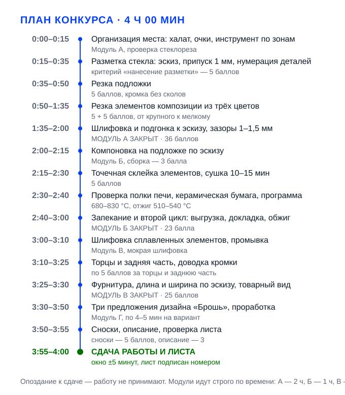
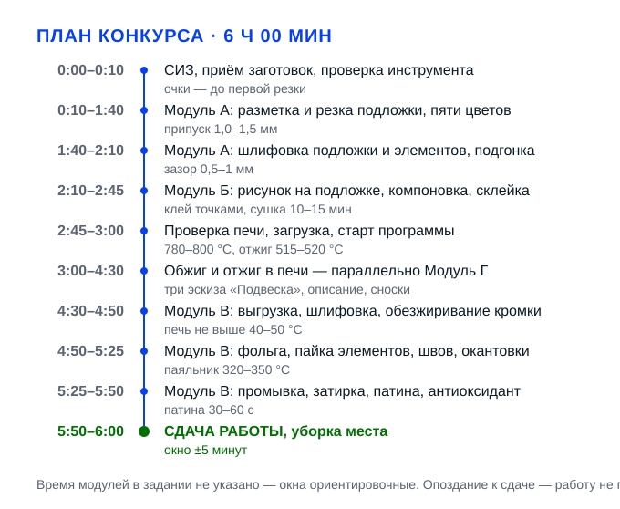
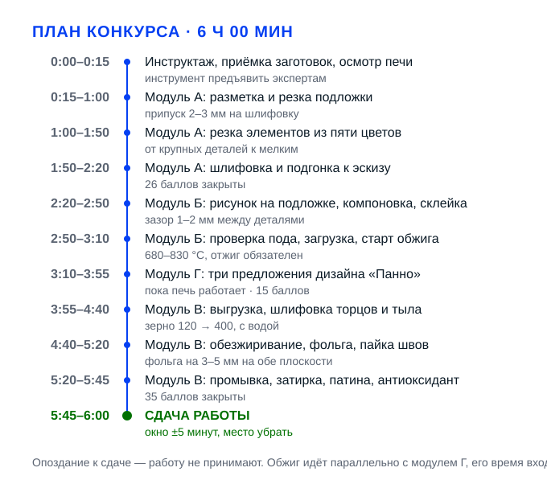

Художественная обработка стекла (Фьюзинг) (Р)
Задания ниже — официальные файлы «Абилимпикс» (источник: abilympics-russia.ru), разложенные по категориям. Решения написаны по тексту задания, регламенту и критериям оценки; в них указано, что именно проверяет эксперт.
Школьник
14–16 лет, базовый уровень заданияВыдержка из официального конкурсного задания: страницы, относящиеся к категории «Школьник» (стр. 6–8 источника).
Пошаговое решение
Конкурсное задание категории «Школьники» — декоративное украшение-подвеска, спечённое из стекла в технике фьюзинг. Работа идёт четыре часа и разбита на четыре модуля: два часа на разметку, резку и шлифовку деталей, час на компоновку, склейку и запекание, полчаса на финальную подготовку и ещё полчаса на разработку трёх вариантов дизайна броши. Сто баллов распределены по операциям: разметка, резка подложки, резка цветных элементов, наличие всех элементов, шлифовка подложки и элементов, соответствие чертежу, сборка, склейка, подготовка к запеканию, длина и ширина, шлифовка торцов и задней части, финальная подготовка, а в креативном модуле — три предложения, соответствие концепции, описание и сноски. Стекло спекается при 680–830 градусах и требует медленного отжига, а само задание могут изменить на 30 процентов. Ниже — пошаговый разбор модулей в том порядке, в котором предстоит работать.

Задача 1. Вырезать и отшлифовать все детали подвескиМодуль А · 2 часа · 36 баллов
Первый и самый длинный модуль: за два часа нужно разметить стекло, вырезать подложку, вырезать элементы композиции из трёх цветов стекла и отшлифовать всё до состояния, когда детали встают на свои места в эскизе без зазоров и нажима. Здесь набирается 36 баллов из ста — разметка, резка подложки, резка цветных элементов, наличие всех элементов, шлифовка подложки, шлифовка элементов, соответствие чертежу и дополнительные элементы по эскизу. Модуль арифметически самый дорогой, и почти все потери на нём происходят не от неумения резать, а от спешки в первые двадцать минут.
Действие 1.1. Подготовить место, инструмент и защиту
Шаг 1.1.1
Надеваем белый халат с длинным рукавом, застёгиваем его на все пуговицы и убираем волосы под резинку или косынку так, чтобы ни одна прядь не свисала над столом. Рукава не подворачиваем: манжета должна закрывать запястье, иначе мелкая стеклянная крошка попадёт за рукав и будет царапать кожу весь модуль. Защитные очки надеваем сразу, до того как в руки попадёт первый кусок стекла, и не снимаем до конца работы со стеклорезом и шлифмашиной. Обувь — закрытая, на нескользящей подошве: пол в мастерской бетонный, а под ногами будет стеклянный бой.
Очки и халат — не формальность для протокола: при резке от стеклореза отлетает микрокрошка, а на шлифовальном круге она летит веером ровно на уровне лица. В разделе 6.2 конкурсного задания защитные очки прямо названы обязательными для всех работ, связанных с резкой и обработкой стекла, и участника без очков останавливают, а не штрафуют баллами. Кроме того, готовность к работе эксперт фиксирует в первые минуты, до старта отсчёта модуля А.
Очки сидят плотно и не сползают при наклоне головы вниз; халат застёгнут, манжеты на месте; волосы убраны полностью, в том числе на затылке; обувь закрытая и сухая. Наклонитесь над столом и проверьте, не съезжают ли очки на нос — поправлять их грязными руками в середине реза нельзя.
Самая частая ошибка — надеть очки на лоб и опустить их только перед шлифовкой: к этому моменту крошка уже в глазах и на ресницах. Вторая — оставить манжету расстёгнутой: она цепляет линейку, линия реза уходит на миллиметр в сторону, и деталь приходится вырезать заново из нового куска, а заготовок на площадке выдано ровно по заданию.
Технический эксперт проверяет СИЗ до старта и потом следит по ходу модуля: снимает ли участник очки при резке, не наклоняется ли над шлифовальным кругом без защиты.
Шаг 1.1.2
Раскладываем инструмент по одному ему отведённому месту: стеклорез — справа от рабочей руки на сухой салфетке, линейка — вдоль дальнего края стола, перманентный маркер и карандаш — в стакане, щипцы для отламывания — рядом со стеклорезом, алмазный брусок и шлифмашина — в зоне шлифовки, пинцет и кисть — у печи. Проверяем стеклорез: ролик целый, без зазубрин, масло в резервуаре есть, головка вращается свободно. Линейку берём металлическую: пластиковая от нажима играет, и линия получается дугой.
Каждая перестановка инструмента в середине реза — это потеря точности: рука уходит с линии, и вместо одного уверенного прохода получается два, а двойной рез крошит кромку. Проверка стеклореза до начала работы экономит самый дорогой ресурс модуля А — время: тупой ролик не прорезает стекло на нужную глубину, и деталь ломается не по линии разметки. Критерий «Резка подложки» стоит 5 баллов и снимается целиком, если подложка раскололась.
Ролик вращается без заеданий, масло выходит тонкой плёнкой, на тестовом обрезке стекла остаётся ровная матовая линия без сколов. Линейка не имеет вмятин на рабочей кромке: приложите её к столу и посмотрите на просвет — щели быть не должно.
Работать тупым или забитым стеклорезом, который «ещё послужит»: линия получается прерывистой, стекло ломается по случайной траектории, и вместо подложки остаются два осколка. Вторая ошибка — держать линейку рукой без упора: она сдвигается на полмиллиметра под давлением стеклореза, и этого хватает, чтобы деталь не встала в эскиз.
Эксперт обходит рабочие места в начале модуля и смотрит, готов ли инструмент: лежит ли он по зонам и проверен ли стеклорез до первого реза. Он же проверяет, лежит ли инструмент по зонам.
Шаг 1.1.3
Разбиваем стол на четыре зоны и держим их до конца модуля: слева — эскиз под прозрачным стеклом или в файле, в центре — рабочая зона с ковриком, справа — вырезанные детали, разложенные по номерам, и отдельная небольшая ёмкость для боя и обрезков. Свет ставим так, чтобы он падал сбоку: на просвет видна линия реза и видно, где кромка начала скалываться. Стол протираем насухо, потому что на мокрой поверхности стекло скользит под линейкой.
Зоны нужны не для красоты: деталь, положенная «куда-нибудь», через двадцать минут теряется среди обрезков, а критерий «Наличие всех элементов» стоит 5 баллов и проверяется простым пересчётом. Боковой свет — единственный способ увидеть линию реза на прозрачном стекле, не наклоняясь к самому столу и не заслоняя её собственной тенью. Сухая поверхность — условие точного реза, а не вопрос аккуратности.
На столе видны четыре явные зоны, эскиз закреплён и не сдвигается, детали лежат пронумерованными, бой — в отдельной банке, а не под локтем. Проверьте рукой: проведите ладонью по рабочей зоне — ни крошки, ни капли.
Сгрести обрезки на край стола «потом выброшу»: они попадают под подложку, и при резке стекло получает точечную нагрузку и трескается. Вторая ошибка — положить вырезанные детали в одну кучу: одинаковые по цвету фрагменты путаются, и в модуле Б выясняется, что одной детали не хватает, а другая вырезана дважды.
Организацию места эксперт видит целиком на первом обходе и учитывает при оценке аккуратности работы, даже если отдельной строки за это нет. Он отмечает и то, как разложены детали: по номерам или в общей куче.
Действие 1.2. Нанести разметку на стекло
Шаг 1.2.1
Читаем эскиз до того, как взять маркер: выписываем на листок габариты изделия, количество деталей каждого цвета, положение отверстия под фурнитуру и общий контур. Сразу проверяем, не изменились ли размеры заготовок и финальный эскиз — по разделу 2.4 задание могут поменять на 30 процентов, и на площадке вам выдадут именно изменённый вариант. Считаем припуск на шлифовку: к каждому габаритному размеру добавляем по одному миллиметру с каждой стороны, иначе после шлифовки деталь окажется меньше эскиза.
Критерий «Соответствие чертежу» стоит 3 балла, а «Соответствие заданной длине» и «ширине» в модулях Б и В — по 5 баллов каждый, и все они растут из одного: правильно ли понят эскиз. Припуск в один миллиметр — не перестраховка: при шлифовке кромки снимается от 0,5 до 1 мм, и деталь, вырезанная строго по контуру, после обработки становится меньше, и в композиции появляется щель.
На листке выписаны все размеры, количество деталей по цветам и припуск; каждый размер сверен с эскизом дважды — по линейке и по пропорциям. Если сумма деталей не сходится с эскизом, вопрос задают эксперту до начала реза, а не после.
Начать резать «по памяти», разглядывая эскиз краем глаза: через час выясняется, что деталь вырезана зеркально или не того цвета. Вторая ошибка — не учесть припуск: изделие после шлифовки уходит из размера на 1,5–2 мм, и это минус 5 баллов за длину и 5 за ширину.
Эксперт подходит к столу в первые минуты и смотрит, работает ли участник по эскизу с размерами или импровизирует; при спорных размерах решение принимает он.
Шаг 1.2.2
Обезжириваем стекло: протираем заготовку спиртом или тёплым мыльным раствором, затем насухо безворсовой салфеткой. Маркер по жирной поверхности плывёт, линия получается толстой и расплывчатой, а при обжиге остатки жира дают мутные пятна на изделии. Если эскиз удобнее видеть под стеклом, кладём лист на стол, накрываем прозрачной заготовкой и фиксируем края малярным скотчем — так контур виден насквозь и не мешает резу.
Жир и пыль — главная причина дефектов фьюзинга, которые проявляются не сразу, а после печи: пятна, пузыри, помутнение. Критерий «Нанесение разметки на стекло» стоит 5 баллов и оценивается по качеству линии: тонкая, ровная, точно по контуру. Толстая размытая линия даёт ошибку в полмиллиметра на каждой детали, а в композиции из десятка элементов эти полмиллиметра складываются в видимый перекос.
Стекло чистое, без разводов и отпечатков, салфетка после протирки не темнеет. Линия маркера тонкая, не размазана, эскиз под стеклом не сдвигается при нажатии пальцем — проверьте, надавив на стекло в центре.
Размечать по необезжиренному стеклу: маркер собирается в капли, линию приходится вести дважды, и вторая линия идёт рядом с первой. Вторая ошибка — приклеить эскиз скотчем поверх стекла: скотч попадает под линейку, стеклорез идёт по нему с провалом, и рез получается прерывистым.
Качество разметки — отдельные 5 баллов, и эксперт смотрит линию до начала резки: насколько она тонкая и совпадает ли с контуром эскиза. Отдельно он смотрит, нет ли на стекле отпечатков пальцев.
Шаг 1.2.3
Размечаем подложку: обводим внешний контур будущей подвески тонким маркером по линейке, ставим метку центра и, если по эскизу предусмотрено отверстие под шнур, отмечаем его точку на расстоянии не менее 5 мм от кромки. Контур ведём одной линией без нажима, а линию реза продлеваем за пределы детали на 10–15 мм: тогда отламывать удобно, не задевая саму деталь.
Подложка — основа всего изделия, и её габарит задаёт длину и ширину, за которые в модулях Б и В дают по 10 баллов. Отверстие ближе 5 мм к кромке — типичная причина скола: стекло не держит нагрузку у края и трескается либо при сверлении, либо в печи. Продлённая линия реза — приём, который экономит нервы: вы ломаете по свободному краю, а не по контуру детали.
Контур замкнут, углы размечены, метка центра видна, линия реза выходит за габарит с двух сторон. Приложите линейку к каждой стороне: отклонение не больше половины миллиметра, иначе после шлифовки геометрия поплывёт.
Размечать контур «от руки», без линейки: кривизна в 1–2 мм на подложке не видна глазом, но в печи стекло растекается и подчёркивает перекос, а критерий соответствия чертежу снимает 3 балла. Вторая ошибка — разметить отверстие вплотную к кромке и получить скол при сверлении.
Эксперт сверяет контур подложки с эскизом до резки и после неё, обращая внимание на симметрию и на положение отверстия. Замеры он делает по осевым линиям, а не по диагоналям.
Шаг 1.2.4
Размечаем цветные элементы: сначала наклеиваем или подкладываем шаблоны деталей и обводим их по контуру, затем нумеруем каждую деталь маркером на самой заготовке — номер и цвет, например «2 кр» для второй красной. Три цвета по заданию распределяем по заготовкам так, чтобы крупные детали шли из целого куска, а мелкие — из остатков после первых резов. Порядок разметки ведём от самой крупной детали к самой мелкой.
Нумерация — единственный способ не перепутать детали в модуле Б, где их выкладывают на подложку по эскизу: одинаковые по форме фрагменты разного цвета ставятся в разные места, и ошибка видна только на готовом изделии. Раскрой от крупного к мелкому экономит материал: из остатка после большой детали почти всегда выходит две-три мелких, а наоборот — нет.
Каждая деталь на эскизе имеет свой номер, и такой же номер стоит на заготовке; количество размеченных деталей совпадает с эскизом по каждому цвету. Проверьте пересчётом: три цвета, столько-то деталей, все пронумерованы.
Размечать все детали одного цвета подряд, а потом обнаружить, что заготовки этого цвета не хватает на крупный элемент. Вторая ошибка — не нумеровать: в модуле Б композиция собирается наугад, и «Наличие всех элементов» теряет 5 баллов, потому что одна деталь осталась лежать на столе неиспользованной.
Эксперт смотрит на разметку в процессе: видно ли по заготовкам, что участник понимает раскрой, и нет ли на площадке бесхозных обрезков, из которых можно было вырезать деталь.
Действие 1.3. Вырезать подложку
Шаг 1.3.1
Ставим стекло на ровную сухую поверхность кромкой к себе, головку стеклореза держим вертикально, чтобы угол между роликом и стеклом был 90 градусов, и ведём линию от дальнего края к себе одним движением со скоростью примерно 2–3 см в секунду и усилием около 2 кг. Слышен ровный шелестящий звук — это признак правильного реза; скрип означает, что ролик идёт по уже прорезанной бороздке или слишком медленно.
Стеклорез не режет, а надрезает поверхностный слой, и от глубины этой надрезы зависит, пойдёт ли излом по линии. Один проход даёт чистую кромку, второй по той же линии крошит её и оставляет сколы, которые потом приходится стачивать по миллиметру. Критерий «Резка подложки» — 5 баллов, и он снимается, если кромка рваная или деталь сломалась не по разметке.
На стекле осталась одна тонкая непрерывная матовая линия от края до края, без двойных следов и без белой пыли по сторонам. Проведите ногтем поперёк линии: он должен зацепиться за надрез, а не скользнуть по стеклу.
Вести стеклорез дважды по одной линии «на всякий случай»: кромка крошится, и после разлома на ней остаются выщербины глубиной до миллиметра, которые уже не отшлифовать без потери размера. Вторая ошибка — давить слишком сильно: ролик продавливает стекло и оставляет веер микротрещин, деталь лопается при переносе.
Эксперт смотрит на кромку сразу после разлома: ровная матовая полоса без сколов — работа засчитана, рваная кромка — балл снижен. Он же обращает внимание на звук реза: скрип слышен на всю площадку.
Шаг 1.3.2
Режем подложку по длинной стороне: прижимаем металлическую линейку к стеклу так, чтобы её кромка точно совпала с линией разметки, и держим её левой рукой с усилием, не позволяя сдвинуться. Стеклорез ведём вдоль линейки одним движением от себя, не отрывая ролик от стекла до конца линии. Затем, не сдвигая стекло, повторяем то же для второй стороны, если размер выходит из одного куска.
Линейка — единственный упор, который держит линию прямой; сдвиг на полмиллиметра даёт перекос, который в готовом изделии виден как «кособокая» подвеска, а критерии соответствия длине и ширине стоят по 5 баллов. Рез от себя, а не к себе, нужен для контроля: при движении к себе кисть закрывает линию и рука идёт по памяти.
Линия прошла точно по кромке линейки, без ухода в сторону на концах. Приложите линейку к готовой кромке после разлома: просвет не больше 0,5 мм по всей длине. Проверьте и углы: линейка, приложенная к углу, не должна показывать зазор больше половины миллиметра.
Держать линейку кончиками пальцев: под давлением стеклореза она проворачивается вокруг точки опоры, и линия получается дугой. Вторая ошибка — останавливаться на середине линии и начинать заново: в месте стыка остаётся ступенька, и излом уходит в сторону.
Эксперт проверяет геометрию подложки линейкой на столе участника, не дожидаясь конца модуля: важно увидеть результат реза, пока деталь ещё не отшлифована.
Шаг 1.3.3
Ломаем по линии реза: подкладываем под стекло спичку или кладём линию точно на край стола и нажимаем ладонями по обе стороны от надреза равномерно, без рывка. Если край тонкий, берём щипцы для отламывания и ведём их вдоль линии короткими перехватами по 2–3 см, а не одним зажимом посередине. После разлома сразу помечаем деталь номером и убираем обрезок в банку для боя.
Излом идёт по надрезу только при равномерной нагрузке; рывок или зажим щипцами в одной точке даёт радиальную трещину, и подложка раскалывается пополам — заготовки на замену нет, и модуль А фактически закончен с нулём за подложку. Маркировка после разлома нужна потому, что подложка внешне похожа на любую другую прямоугольную заготовку.
Кромка ровная, сколов по линии нет, деталь не имеет трещин, уходящих внутрь. Посмотрите на деталь на просвет против лампы: любая внутренняя трещина видна как светлая полоса, и такая деталь в печь идти не может.
Ломать ударом о край стола «как показывали»: удар даёт трещину не по линии, а по напряжению, и деталь колется по диагонали. Вторая ошибка — сразу после разлома брать деталь за свежую кромку: она острая как бритва, порез на пальце остановит работу на двадцать минут и попадёт в протокол по охране труда.
Эксперт осматривает кромки подложки и наличие сколов; при порезе участника работа приостанавливается, а это потеря времени из двух часов модуля. Он же следит, чтобы участник не брал свежую кромку голыми руками.
Действие 1.4. Вырезать элементы композиции из трёх цветов
Шаг 1.4.1
Начинаем с прямолинейных деталей: размечаем прямоугольники и полосы, режем их по линейке от края заготовки, каждый рез доводим до конца и только потом отламываем. Крупные детали выкраиваем первыми и из целого куска, мелкие — из остатков, которые сразу перекладываем в зону деталей, а не в бой. Полосы для тонких элементов режем шириной на 1 мм больше нужного: этот миллиметр уйдёт на шлифовку.
Критерий «Резка цветных элементов композиции согласно эскизу» — 5 баллов, и он про точность: деталь должна совпадать с контуром, а не «примерно напоминать» его. Последовательность от крупного к мелкому защищает от главной потери времени в модуле А — перерезания заново: крупная деталь требует целого куска, и если сначала нарезать мелочь, целого куска уже не останется.
Каждая деталь после разлома приложена к эскизу: контур совпадает, припуск около миллиметра остался, сколов на кромке нет. Детали одного цвета лежат вместе и пронумерованы, бой отдельно. Сверяйте не только форму, но и количество: пересчёт по цветам занимает полминуты.
Резать все детали «в размер» без припуска: после шлифовки они становятся меньше, и в композиции появляются щели в миллиметр, которые в печи превращаются в широкие провалы. Вторая ошибка — складывать обрезки вместе с деталями: через полчаса вы уже не отличите деталь от отхода и вырежете её повторно, потеряв пять минут.
Эксперт сверяет количество и форму вырезанных элементов с эскизом, обходя рабочие места примерно в середине модуля А. Он же проверяет, нет ли на столе обрезков, из которых деталь ещё выходит.
Шаг 1.4.2
Криволинейные детали режем в несколько приёмов: сначала проводим плавную линию по шаблону, затем делаем короткие насечки от кромки к линии через каждые 3–5 мм, и только после этого откусываем лишнее щипцами мелкими шагами. Стеклорез при этом держим почти вертикально и не пытаемся пройти сложный контур одним движением. Острые внутренние углы скругляем радиусом не меньше 2 мм.
Стекло ломается только по прямой надрезе, поэтому кривую получают комбинацией реза и последовательного откусывания. Внутренний угол острее 90 градусов — концентратор напряжения: в печи именно от него идёт трещина, и деталь раскалывается при нагреве, когда исправить уже ничего нельзя. Скругление в 2 мм стоит полминуты работы и спасает всю композицию.
Контур детали повторяет шаблон без ступенек, кромка после откусывания обработана бруском, внутренние углы скруглены. Проведите пальцем по кромке: она не режет и не цепляет кожу. Отдельно проверьте внутренние углы: они должны быть скруглены, а не оставлены острыми.
Пытаться вырезать круг или волну одним резом: линия не идёт по кривой, стекло ломается по хорде, и деталь уходит в брак. Вторая ошибка — оставить острый внутренний угол: деталь лопается в печи, а это потеря не только баллов за элемент, но и всего модуля Б.
Эксперт осматривает криволинейные детали на просвет и проверяет, скруглены ли внутренние углы — это прямо влияет на сохранность работы после обжига. Он смотрит и на кромку после откусывания: она должна быть обработана бруском.
Шаг 1.4.3
Мелкие детали — точки, листики, лепестки — режем из полос: сначала нарезаем полосу нужной ширины, потом делим её на сегменты по разметке, каждый сегмент обрабатываем отдельно. Детали мельче 5 мм вырезаем с запасом и доводим до размера на бруске, потому что откусить от такой детали щипцами уже невозможно — она крошится. Обрезки сортируем по цвету: из них ещё выйдут элементы декора.
Мелкие элементы дают изделию детализацию, за которую в критерии «Нанесение дополнительных элементов согласно эскизу» дают 3 балла, но они же и самые трудоёмкие: на одну точку уходит до трёх минут. Работа через полосу экономит материал и время — из одной полосы выходит пять-шесть одинаковых деталей с ровными кромками, тогда как вырезанные по одной они всегда разного размера.
Детали одинакового назначения получились одного размера, отклонение не больше 0,5 мм; кромки обработаны; ни одна деталь не потерялась. Разложите их в ряд и посмотрите вдоль — разнобой сразу виден. Проверьте и кромки: они должны быть сняты, иначе деталь не ляжет вплотную.
Вырезать мелкие детали по одной, каждый раз заново размечая: они получаются разными, и композиция выглядит небрежно. Вторая ошибка — пытаться откусить щипцами от детали размером 4 мм: она раскалывается, и на её место нужно вырезать новую, а времени в модуле А уже нет.
Эксперт обращает внимание на повторяемость мелких элементов: серия одинаковых деталей читается как владение инструментом. Он же отмечает, сколько времени уходит на одну мелкую деталь.
Шаг 1.4.4
Сверяем вырезанное с эскизом: раскладываем все детали на листе эскиза по своим местам, пересчитываем по цветам и отмечаем на листке, что уже есть. Если детали не хватает, вырезаем её сразу, пока заготовка и инструмент на столе, а не в модуле Б. Разложенную композицию накрываем листом бумаги и больше не трогаем до перехода к шлифовке. Детали, которых не хватает, отмечаем на листке крестиком.
Критерий «Наличие всех элементов» — 5 баллов, и это единственные баллы в модуле, которые можно потерять из-за простой невнимательности: деталь вырезана, отшлифована и осталась лежать под обрезками. Сверка на эскизе, а не «на глаз», нужна потому, что память через час работы перестаёт быть точной, а лист с отметками — нет. Накрытая бумагой композиция не сдвигается и не путается.
Все позиции эскиза заняты, количество деталей по цветам совпадает с расчётным, на листке отмечено каждое наименование. Пересчёт делаем вслух: так ошибка замечается почти сразу. Если чего-то не хватает, это видно по пустой позиции на эскизе.
Проверять «на глазок» и обнаружить нехватку в модуле Б, когда стол уже занят подложкой и клеем. Вторая ошибка — оставить разложенную композицию открытой: достаточно неосторожного движения линейкой, и детали съезжают, а вы уже не помните точного положения.
Эксперт пересчитывает элементы на столе участника и сверяет с эскизом — это самый быстрый и самый безжалостный критерий модуля А. Он же проверяет, совпадает ли количество деталей с эскизом по каждому цвету.
Действие 1.5. Отшлифовать детали и подогнать их к эскизу
Шаг 1.5.1
Организуем мокрую шлифовку: ставим рядом ёмкость с водой, надеваем очки, проверяем, что шлифовальный круг или брусок постоянно смачивается, а не работает на сухую. Деталь держим двумя пальцами за плоскость, кромкой к кругу, и подводим её плавно, без нажима, чтобы не выбить из рук. Работаем в очках и, если есть, в тонких резиновых перчатках — вода с абразивом разъедает кожу за час.
Сухая шлифовка стекла поднимает облако тонкой пыли, которая оседает в лёгких, а требования охраны труда в разделе 6 запрещают работу без защиты органов зрения при обработке стекла. Вода одновременно охлаждает кромку: перегрев от трения даёт микротрещины, и деталь лопается либо на столе, либо в печи. Плавная подача без нажима сохраняет геометрию — при нажиме кромка стачивается неравномерно, волной.
Круг мокрый, вода не высыхает на кромке, деталь не нагревается на ощупь. Проверьте тыльной стороной пальца: если чувствуется тепло, шлифуйте медленнее и чаще смачивайте. Вода должна стекать с кромки мутной струёй — так видно, что абразив работает.
Шлифовать на сухую «быстрее, пыль всё равно сдует»: кромка перегревается и получает сетку микротрещин, которые в печи раскрываются. Вторая ошибка — давить на деталь: её выбивает из пальцев, она падает кромкой на пол и скалывается.
Технический эксперт следит за наличием воды и очков у шлифовального станка; нарушение останавливает работу участника. Он же проверяет, не работает ли участник без воды и без очков.
Шаг 1.5.2
Шлифуем подложку: сначала снимаем остроту кромки бруском с зерном 80–120 под углом примерно 45 градусов, затем доводим тем же бруском с зерном 240 до матовой однородной полосы по всему периметру. Держим подложку двумя руками, ведём кромкой по бруску от себя, а не возвратно-поступательно: так снимается равномерная фаска шириной около 0,5 мм, и углы не скругляются.
Критерий «Шлифовка подложки» — 5 баллов, и он про ровную фаску: острые кромки в печи ведут себя непредсказуемо, стекло по ним скалывается, а готовая подвеска режет руку и цепляет одежду. Фаска под 45 градусов шириной 0,5 мм — стандартный приём: она снимает концентратор напряжения и при этом не уменьшает габарит заметно.
Фаска ровная по всему периметру, ширина одинаковая, углы не завалены, на кромке нет блестящих сколов. Проведите по кромке ногтем: он скользит, не цепляется. Габарит после шлифовки сверьте линейкой с эскизом.
Снимать фаску только на видимых сторонах, оставив острые углы: именно углы и скалываются при обжиге, а скол на углу подложки — это брак всей работы. Вторая ошибка — стачивать кромку до прозрачности: снимается лишний миллиметр, и подложка выходит из заданного размера.
Эксперт проводит пальцем по кромке подложки: заусенцы и острая грань — прямой минус к 5 баллам за шлифовку. Он смотрит и на углы: они должны быть скруглены, а не завалены под острым углом.
Шаг 1.5.3
Шлифуем элементы композиции: каждый фрагмент обрабатываем по кромке бруском с зерном 120, снимая заусенцы и выравнивая линию контура, затем доводим зерном 240–400 до матовой полосы. Деталь держим так, чтобы плоскость не касалась бруска — иначе на лицевой стороне появятся матовые потёртости, которые после обжига станут видимыми пятнами. Тонкие полосы шлифуем, прижимая к бруску через палец, чтобы они не прогибались и не ломались.
Критерий «Шлифовка элементов композиции» — 5 баллов, и здесь важно не только убрать остроту, но и не испортить лицевую поверхность: царапины от абразива на глянце после обжига не затягиваются, а размываются в мутное пятно. Два номера зерна нужны потому, что 120 снимает сколы, а 240–400 убирает риски от первого прохода; если сразу начать с мелкого, сколы не уйдут, а работа займёт вдвое больше времени.
Кромка матовая, ровная, без сколов и заусенцев; лицевая плоскость чистая, без потёртостей. Посмотрите на деталь под углом к свету: любые риски на глянце видны как светлые полосы. Сравните две детали одного цвета рядом: у них должна быть одинаковая матовая полоса.
Шлифовать, положив деталь плоскостью на брусок: глянец покрывается сеткой мелких царапин, которые в печи превращаются в матовые пятна, и «Финальная подготовка изделия» теряет баллы. Вторая ошибка — не снимать заусенцы с тонких полос: они ловят клей и мешают деталям лечь вплотную.
Эксперт осматривает лицевые поверхности деталей на просвет: потёртости и царапины видны сразу и относятся к качеству шлифовки. Он же проверяет, не осталось ли на кромке блестящих сколов.
Шаг 1.5.4
Подгоняем детали к эскизу: раскладываем их на лист и проверяем зазоры между соседними элементами — они должны быть 1–1,5 мм, ровные по всей длине стыка. Если деталь велика, снимаем 0,2–0,3 мм бруском и снова прикладываем; если мала, вырезаем новую из того же цвета, потому что нарастить стекло нельзя. Готовую раскладку обводим карандашом по контуру на отдельном листе — это будет схема сборки для модуля Б.
Зазор в 1–1,5 мм — технологическое требование полного фьюзинга: при нагреве стекло расширяется и растекается, и детали, положенные вплотную, наползают друг на друга, а композиция теряет рисунок. Схема сборки на бумаге нужна потому, что в модуле Б вы будете выкладывать детали заново, уже на подложку, и вспоминать положение по памяти — верный способ получить перекос на 3 балла за соответствие чертежу.
Все зазоры в пределах 1–1,5 мм, детали не наезжают друг на друга, композиция читается как на эскизе. Измерьте щупом или сложенной бумагой в трёх-четырёх местах: зазор должен быть одинаковым. Проверьте зазоры и у крайних деталей: там они чаще всего шире.
Подгонять «на глаз», оставляя зазоры от 0,2 до 3 мм в одной композиции: в печи крупные зазоры превращаются в провалы, а нулевые — в наплывы, и рисунок плывёт. Вторая ошибка — подшлифовывать деталь, не снимая её с бруска, «чтобы быстрее»: снимается лишнее, и деталь выходит из композиции.
Эксперт проверяет подгонку перед началом модуля Б: ровные зазоры читаются как понимание технологии, а не как случайность. Он смотрит и на то, зарисована ли схема сборки — это признак планирования.
Задача 2. Собрать композицию на подложке и провести обжигМодуль Б · 1 час · 23 балла
Час на то, чтобы выложить вырезанные детали на подложку по эскизу, склеить их между собой так, чтобы они не сдвинулись при переносе, проверить печь и провести запекание. В конкурсном задании последовательность модуля Б описана дважды — компоновка, склейка, проверка печи, запекание и снова компоновка, склейка, проверка печи, запекание, — то есть за час вы проходите два цикла: сначала основной рисунок, потом дополнительный слой после первого обжига. Здесь 23 балла: сборка композиции, склейка, подготовка к запеканию и по 5 баллов за соответствие заданной длине и ширине.
Действие 2.1. Выложить композицию на подложку
Шаг 2.1.1
Готовим рабочее место под сборку: на стол кладём лист белой бумаги, на него — эскиз, сверху прозрачную подложку, и совмещаем контур так, чтобы рисунок читался сквозь стекло. Подложку фиксируем в двух точках малярным скотчем, приклеивая его к бумаге, а не к стеклу: скотч на стекле оставляет клей, который в печи выгорает тёмным пятном. Проверяем, какая сторона подложки станет лицевой: та, на которую выкладываете детали, и будет лицевой после обжига, поэтому все дефекты этой стороны останутся видимыми.
Критерий «Сборка композиции» стоит 3 балла, и он оценивает, насколько выложенный рисунок повторяет эскиз: положение, пропорции, ориентацию. Если подложка сдвинется относительно эскиза в процессе, вы будете выкладывать детали по «плавающему» контуру, и перекос в 3–4 мм станет заметен на готовом изделии. Лицевая сторона важна потому, что при обжиге рисунок оплавляется именно с неё.
Подложка не двигается при лёгком нажатии пальцем, контур эскиза виден по всему периметру, лицевая сторона выбрана осознанно и помечена маркером с обратной стороны крестиком. Проверьте наклоном стола: скотч должен держать.
Приклеить скотч прямо к подложке: после снятия остаётся липкий след, который собирает пыль и в печи даёт тёмную полосу по краю — а это минус к «Финальной подготовке изделия». Вторая ошибка — работать без фиксации: подложка едет под рукой, и детали ложатся по памяти, а не по эскизу.
Эксперт смотрит, как организована сборка: зафиксирована ли подложка и виден ли эскиз под ней, — это читается как понимание последовательности. Он же проверяет, не приклеен ли скотч к самому стеклу.
Шаг 2.1.2
Выкладываем крупные элементы: берём деталь пинцетом за кромку, а не пальцами за плоскость, и ставим её на место по номеру, сверяясь с эскизом под стеклом. Начинаем с самой крупной детали и с центра композиции, затем идём к периферии, чтобы каждая следующая ложилась относительно уже закреплённой. Между деталями оставляем зазор 1–1,5 мм, проверяя его на глаз по ширине сложенной вдвое полоски бумаги.
Порядок от центра к краю — единственный, при котором композиция не «съезжает»: если начать с края, к центру уже не останется места и придётся сдвигать всё выложенное. Зазор в 1–1,5 мм нужен потому, что при 780 градусах стекло расширяется и растекается: детали вплотную дают наплыв и слипание контуров, а зазор больше 3 мм превращается в провал, который виден как дыра в рисунке.
Все крупные детали на месте, номера совпадают с эскизом, зазоры одинаковые по всей длине стыка. Посмотрите на подложку сверху и сбоку: рисунок должен читаться так же, как на эскизе, без «заваленных» осей.
Выкладывать детали пальцами за плоскость: на глянце остаются отпечатки, которые после обжига видны как мутные пятна, а деталь при этом сдвигается на миллиметр. Вторая ошибка — начать с мелких элементов: они занимают места, куда потом не встают крупные, и всю раскладку приходится переделывать.
Эксперт подходит к столу во время выкладки и сверяет положение деталей с эскизом, отмечая, совпадает ли рисунок по пропорциям. Он же отмечает, с какого элемента начата выкладка.
Шаг 2.1.3
Добавляем мелкие элементы и детали декора: точки, полосы, листики — всё, что есть в эскизе сверх основной формы. Их ставим последними, пинцетом, придерживая соседние детали, чтобы не сдвинуть уже выложенное. Если по эскизу предусмотрен дополнительный элемент — например, контурная полоса по краю, — выкладываем её с тем же зазором и проверяем, что она не выходит за габарит подложки.
Критерий «Нанесение дополнительных элементов согласно эскизу» стоит 3 балла и проверяется по наличию: если на эскизе есть полоса, а на подложке её нет, баллы снимаются целиком, даже когда основная композиция идеальна. Мелкие элементы — самая хрупкая часть работы: их сдвигает даже поток воздуха от движения руки, поэтому ставим их последними и уже не трогаем раскладку целиком.
Все элементы эскиза присутствуют на подложке, включая дополнительные; ничего не выходит за контур; мелкие детали стоят на своих местах. Сверьтесь с эскизом по пунктам, а не «в целом». Проверьте и то, что мелкие детали не выходят за контур подложки.
Добавлять декор «от себя», которого нет в эскизе: критерий называется «согласно эскизу», и лишние элементы не добавляют баллов, а иногда читаются как отклонение от задания. Вторая ошибка — ставить мелкие детали первыми и потом сдвигать их крупными: точки уезжают, и рисунок теряет симметрию.
Эксперт сверяет наличие дополнительных элементов с эскизом и фиксирует расхождения в оценочном листе. Он же сверяет эскиз построчно и отмечает отсутствующие элементы.
Шаг 2.1.4
Проверяем готовую раскладку целиком: отходим на шаг и смотрим на подложку с расстояния вытянутой руки, затем сверяем по осевым линиям — центр, симметрия, направление элементов. Делаем контрольный снимок на телефон нельзя, поэтому зарисовываем схему расположения на листке: кружки и номера, чтобы после обжига восстановить порядок для второго цикла. Схему подписываем цветами и номерами, чтобы её понял и другой человек.
Критерий «Соответствие чертежу» — 3 балла, и он снимается за перекос, который виден именно с расстояния: вблизи глаз адаптируется и ошибку не замечает. Схема расположения нужна для второго цикла модуля Б: после первого обжига детали оплавляются, номера смываются, и без схемы вторую выкладку придётся делать по памяти.
Раскладка читается как эскиз, осевые линии совпадают, зазоры ровные, схема зарисована и подписана. Проверьте линейкой расстояние от крайних деталей до кромки подложки: оно должно быть одинаковым слева и справа.
Проверять раскладку, наклонившись к самому стеклу: перекос в 2 мм вблизи не виден, а на готовом изделии бросается в глаза. Вторая ошибка — не зарисовать схему и потом собирать второй слой наугад. Проверять раскладку только вблизи: перекос в 2 мм виден лишь с расстояния.
Эксперт оценивает сборку композиции именно с расстояния и по осевым линиям — так же, как её будут видеть зрители и жюри. Он же проверяет симметрию по осевой линии.
Действие 2.2. Склеить элементы между собой
Шаг 2.2.1
Берём фьюзинг-клей или клей-спрей и наносим его точечно: каплю диаметром 1–2 мм наносим зубочисткой на стык двух деталей или под центр мелкого элемента, а не по всей плоскости. Крупные детали достаточно закрепить в двух-трёх точках по краям. Спрей распыляем на расстоянии 20–25 см тонким слоем и даём постоять минуту, чтобы растворитель ушёл. Клей наносим на стык, а не на плоскость детали.
Критерий «Склейка отдельных элементов изделия» — 5 баллов, и он про то, доедет ли композиция до печи в том виде, в каком вы её собрали. Клей нужен только как фиксатор: при обжиге он полностью выгорает, и от него не должно остаться ни следа. Избыток клея выгорает с образованием пузырей и тёмных пятен, а сплошной слой приподнимает детали и мешает им спечься.
Клей нанесён точками, детали не «плавают» в нём, лишнего на подложке нет. Посмотрите на стык под углом: слой должен быть едва заметен, а не блестеть. Проверьте и стыки: клей не должен выступать за границы деталей.
Намазать клеем всю плоскость детали «чтобы крепче держалось»: при обжиге выгорание такого слоя даёт газовые пузыри прямо под стеклом, и на лицевой стороне остаются раковины. Вторая ошибка — капнуть клея на лицевую поверхность: после обжига там остаётся матовое пятно, которое уже не убрать.
Эксперт смотрит на аккуратность склейки: видны ли подтёки клея и не смазаны ли лицевые поверхности деталей. Он смотрит и на то, не попал ли клей на лицевую сторону.
Шаг 2.2.2
Прижимаем каждую проклеенную деталь пинцетом или пальцем в напёрстке на 2–3 секунды, начиная от центра детали к краям, чтобы клей распределился тонким слоем. Сразу после прижатия проверяем: деталь не должна ездить при лёгком толчке пинцетом. Двигаемся по раскладке от крупных элементов к мелким и не трогаем уже приклеенное. После прижатия сразу проверяем деталь пинцетом на сдвиг.
Фиксация — единственная защита от сдвига при переносе подложки в печь: стекло гладкое, детали лежат свободно и при малейшем наклоне съезжают, а поправить их в печи уже нельзя. Прижатие от центра к краям выгоняет воздух из-под детали: оставшийся пузырь при нагреве расширяется и приподнимает стекло.
Каждая деталь держится: при толчке пинцетом не смещается, но и не приклеена намертво так, чтобы её нельзя было поправить. Проверьте три-четыре самые мелкие детали — они сдвигаются первыми. Проверьте и края раскладки: они отклеиваются первыми.
Прижимать деталь, надавливая на край: она качается на клеевой капле и прилипает под углом, а после обжига стоит с наклоном, давая тень на рисунке. Вторая ошибка — приклеивать все детали сразу и только потом проверять раскладку: исправить положение уже нельзя без снятия клея.
Эксперт проверяет, держатся ли элементы, лёгким касанием пинцета в присутствии участника — по договорённости, чтобы не разрушить работу. Он же проверяет, не осталось ли неприклеенных деталей.
Шаг 2.2.3
Даём клею подсохнуть 10–15 минут при комнатной температуре и за это время убираем излишки: снимаем выступившие капли зубочисткой или уголком салфетки, не размазывая их по стеклу. Затем поднимаем подложку на ладонях, держа её строго горизонтально, и слегка наклоняем в разные стороны, чтобы убедиться, что ни одна деталь не поехала. Излишки убираем до того, как клей схватится.
Просушка нужна для того, чтобы клей перестал быть текучим: недосушенный клей работает как смазка, и детали скользят по подложке при переносе. Удаление излишков до обжига экономит время в модуле В: застывшую каплю придётся сошлифовывать, а это лишние минуты из тридцати.
Клей не липнет к пальцу, излишков на подложке нет, при наклоне подложки на 10–15 градусов ни одна деталь не смещается. Проверьте, подняв подложку на уровень глаз против света: так видно и сдвиги, и подтёки.
Переносить подложку сразу после склейки, не дождавшись просушки: детали съезжают в руках, и вы выкладываете композицию заново, теряя десяток минут из часа модуля Б. Вторая ошибка — размазать выступивший клей пальцем: он забивается в зазоры и после обжига оставляет тёмные линии между деталями.
Эксперт наблюдает за переносом подложки: горизонтально ли её держат и не сыплется ли раскладка по дороге к печи. Он же следит, чтобы подложку не наклоняли больше чем на 15 градусов.
Действие 2.3. Проверить печь и подготовить композицию к запеканию
Шаг 2.3.1
Проверяем рабочую поверхность печи до загрузки: полка чистая, без остатков стекла и брызг разделительного спрея от прошлых обжигов, спирали целые и не провисшие, термопара на месте и не касается полки. Кладём на полку лист керамической бумаги толщиной 1–2 мм, вырезанный по размеру подложки плюс 20–30 мм с каждой стороны, и разглаживаем его, чтобы не было складок. Дверцу закрываем плотно, проверяем, что уплотнитель нигде не подвёрнут.
Критерий «Проверка рабочей поверхности в печи» входит в модуль Б и стоит вместе с подготовкой к запеканию 5 баллов. Кусочек стекла, оставшийся на полке, приплавится к вашей работе снизу — это гарантированный брак, который нельзя исправить. Складка керамической бумаги оставляет вмятину на обратной стороне изделия, а неисправная спираль даёт неравномерный нагрев и трещину.
Полка чистая и сухая, бумага лежит ровно без складок и выступов за край полки, спирали видны целиком, термопара не смещена. Проведите рукой в перчатке над полкой: ни крошки, ни шероховатости. Проверьте и уплотнитель дверцы: он должен быть чистым и целым.
Загрузить работу на полку без разделительного слоя: стекло приплавляется к полке, и снять изделие можно только с полкой или разбив его. Вторая ошибка — положить бумагу с загнутым краем: в месте загиба стекло растекается вниз и образует каплю-наплыв, которую потом не сошлифовать.
Эксперт осматривает печь вместе с участником перед загрузкой: чистота полки и наличие разделительного слоя — обязательные условия допуска работы к обжигу.
Шаг 2.3.2
Выставляем программу обжига: набор температуры 3–5 градусов в минуту до 540, затем 5–8 градусов в минуту до 780–800, выдержка 10–15 минут на максимуме, быстрое падение до 510–540 — это зона отжига, выдержка в ней 30–60 минут, затем медленное охлаждение 1–2 градуса в минуту до 370 и дальше остывание вместе с печью. Все значения вводим в контроллер и проверяем на дисплее перед запуском.
Температурный режим — сердце фьюзинга: при 680–830 градусах стекло спекается, а отжиг в зоне 510–540 снимает внутренние напряжения. Если пропустить отжиг, изделие внешне целое, но лопается через час или при первом касании — а оценивают работу именно после того, как её достанут из печи. Медленное охлаждение до 370 градусов обязательно: быстрый спад даёт термошок и сетку трещин.
На дисплее стоят все четыре участка программы, значения совпадают с заданием, время выдержки введено. Перечитайте цифры вслух и сверьте с записью — ошибка в одной цифре стоит всей работы. Проверьте и время выдержки в зоне отжига: оно не должно быть меньше получаса.
Поставить «полный фьюзинг на максимум, чтобы точно сплавилось»: при 850 градусах стекло течёт, рисунок расплывается в бесформенную лепёшку, а зазоры исчезают. Вторая ошибка — сократить отжиг «чтобы успеть»: изделие трескается уже после сдачи, и работу оценивают как брак.
Эксперт проверяет программу на дисплее печи перед запуском и фиксирует, совпадает ли она с рекомендованным режимом. Он же смотрит, не сокращён ли участок отжига.
Шаг 2.3.3
Загружаем композицию: подложку берём двумя руками за противоположные края, несём строго горизонтально, ставим на керамическую бумагу по центру полки, отступив от стенок и от спиралей не меньше 30–50 мм. Если печь с верхним нагревом, убеждаемся, что над работой остаётся свободное пространство не меньше 20 мм. Закрываем дверцу, запускаем программу и записываем время старта и номер программы на листке.
Центр полки — зона самого равномерного нагрева; у стенок и над спиралями стекло греется неравномерно, и именно там появляются трещины и пузыри. Отступ в 30–50 мм от спиралей предотвращает локальный перегрев кромки, из-за которого край подложки загибается вверх. Запись времени нужна, чтобы не открыть печь раньше срока: у каждого режима свой цикл, и на глаз его не определить.
Подложка стоит по центру, зазоры до стенок одинаковые, над работой есть пространство, дверца закрыта до щелчка, программа запущена и время записано. Проверьте, горит ли индикатор нагрева. Проверьте и то, что бумага не выступает за край полки.
Ставить работу у самой спирали «там виднее»: кромка перегревается, стекло подгорает и пузырится, а рисунок деформируется. Вторая ошибка — открыть дверцу через десять минут «посмотреть, как идёт»: термошок и трещина по всей подложке, причём мгновенно.
Эксперт присутствует при загрузке и фиксирует положение работы в печи и время старта программы в оценочном листе. Он же отмечает, сколько времени прошло до запуска программы.
Действие 2.4. Провести второй цикл и довести изделие до готовности к обжигу
Шаг 2.4.1
Достаём работу только после того, как печь остынет до 60–100 градусов по показаниям контроллера, а лучше — до комнатной температуры. Берём подложку за края в термостойких перчатках или крагах, ставим на сухую керамическую плитку или деревянную доску, а не на холодный металл и не на кафель. Сразу осматриваем изделие при боковом свете и отмечаем, что получилось не так, как на эскизе.
Правило «не открывать горячую печь» — самое жёсткое в технологии: разница температур в 400 градусов даёт мгновенную трещину, и вся работа за два с половиной часа превращается в осколки. Холодная подкладка под горячее стекло даёт тот же эффект снизу. Осмотр при боковом свете нужен для планирования второго цикла: видно, где детали слиплись, где остался провал и где нужно добавить элемент.
Печь остыла по показаниям контроллера, изделие тёплое или холодное, но не горячее на ощупь через перчатку; на поверхности нет трещин и сколов; рисунок читается. Сфотографировать нельзя — зарисуйте, что нужно поправить.
Открыть печь на 300 градусах «чтобы быстрее остыло»: изделие лопается пополам с характерным щелчком, и восстановить его невозможно. Вторая ошибка — поставить горячую работу на металлический стол: низ резко остывает, и появляется волосяная трещина по всей длине.
Эксперт смотрит на изделие после первого обжига вместе с участником и фиксирует дефекты, которые пойдут в оценку модуля В. Он же фиксирует, не открывалась ли печь раньше срока.
Шаг 2.4.2
Выполняем вторую компоновку по заданию: поверх спёкшейся основы выкладываем дополнительные элементы, которые остались по эскизу, — контурную полосу, точки, второй слой декора. Детали ставим по зарисованной схеме, соблюдая те же зазоры 1–1,5 мм, и приклеиваем точечно тем же способом, что и в первом цикле. Если первый обжиг дал провал в рисунке, закрываем его деталью того же цвета.
Конкурсное задание описывает компоновку, склейку, проверку печи и запекание дважды именно потому, что изделие в технике фьюзинг часто делается в два слоя: второй обжиг даёт объём и детализацию, которых не получить за один цикл. Работа с уже спёкшейся основой требует осторожности: она тяжелее и не прощает нажима, а клей на шероховатой поверхности держит хуже, поэтому прижимать надо тщательнее.
Дополнительные элементы стоят на своих местах по схеме, зазоры соблюдены, всё приклеено и держится при наклоне. Сверьтесь с эскизом по пунктам: что из дополнительного уже есть на изделии, а что добавляете сейчас.
Выкладывать второй слой, не проверив, как легла основа: элементы встают на рваные края, и в печи второй слой «уезжает» в сторону провала. Вторая ошибка — приклеить второй слой тем же щедрым количеством клея: между слоями остаётся газ, и на лицевой стороне появляются пузыри.
Эксперт сверяет второй слой с эскизом и отмечает, добавлены ли все дополнительные элементы. Он же проверяет, не сдвинулся ли второй слой относительно основы.
Шаг 2.4.3
Проводим второй обжиг: снова проверяем полку и бумагу, ставим работу по центру, запускаем ту же программу, что и в первом цикле, но с чуть меньшей выдержкой на максимуме, чтобы не расплавить уже готовый рисунок. После полного остывания достаём изделие, осматриваем и убираем рабочее место: обрезки в контейнер, инструмент на места, печь закрыта. Перед вторым обжигом ещё раз проверяем чистоту полки.
К концу модуля Б изделие должно быть полностью собрано и готово к обжигу — так сформулирован результат модуля в задании, и второй цикл закрывает именно эту задачу. Повторный обжиг при той же программе опасен тем, что первый слой уже спёкся и при повторном нагреве может потечь сильнее: сокращённая выдержка сохраняет рельеф. Уборка после модуля входит в общую оценку аккуратности.
Изделие спёклось, рисунок читается, трещин нет, габарит соответствует эскизу; стол чист, инструмент убран, печь закрыта и выключена. Проверьте габарит линейкой до того, как сдать работу: дальше исправлять будет нечего.
Оставить второй обжиг «на потом» и сдать несобранное изделие: результат модуля не достигнут, и 23 балла модуля Б теряют большую часть. Вторая ошибка — не убрать рабочее место: беспорядок фиксируется и переносится в итоговую оценку по организации работы.
Эксперт фиксирует состояние изделия на конец модуля Б: собрано, спёклось, соответствует ли размеру — это база для оценки модуля В. Он же проверяет, выключена ли печь после второго цикла.
Задача 3. Придать изделию товарный видМодуль В · 30 минут · 25 баллов
Полчаса на то, чтобы спёкшееся изделие стало украшением, которое не стыдно повесить на витрину: отшлифовать торцы, обработать заднюю часть, поставить фурнитуру, снять все следы клея и разметки и уложиться в заданные длину и ширину. Модуль короткий, но в нём 25 баллов — по 5 за шлифовку торцов, шлифовку задней части, финальную подготовку и по 5 за соответствие заданной длине и ширине. Здесь почти невозможно что-то выиграть, зато легко потерять всё сразу, если взяться за шлифовку без плана и снять лишний миллиметр с габарита.
Действие 3.1. Отшлифовать сплавленные элементы
Шаг 3.1.1
Кладём изделие на белую бумагу и осматриваем при боковом свете: обводим пальцем контур, смотрим на просвет, отмечаем маркером на обратной стороне все места, которые требуют вмешательства, — наплывы на торцах, капли застывшего клея, шероховатости, сколы. Сразу измеряем габарит линейкой и записываем цифры, чтобы понимать, сколько миллиметров можно снять без выхода из размера.
Осмотр до шлифовки — это план работы: в модуле В всего тридцать минут, и тратить их на поиск дефектов по ходу нельзя. Записанный габарит защищает от главной ошибки модуля — стачивания изделия ниже заданного размера, за который отдельно дают 5 баллов за длину и 5 за ширину. Кроме того, эксперт оценивает шлифовку именно по состоянию поверхности, а не по усилию, которое вы приложили.
На обратной стороне отмечены все дефектные зоны, габарит записан с точностью до половины миллиметра, план работы понятен: что снимать бруском, что кругом, что оставить как есть. Запишите габарит и в длину, и в ширину — дальше вы будете снимать материал.
Начать шлифовать «на всякий случай всё подряд»: снимается лишний миллиметр с торцов, изделие выходит из размера, и 10 баллов за длину и ширину теряются за пять минут до сдачи. Вторая ошибка — не осмотреть заднюю часть: именно там остаются капли клея и наплывы, которые потом видно на просвет.
Эксперт осматривает изделие вместе с участником на входе в модуль В и фиксирует исходное состояние — оно определяет, что можно исправить, а что уже брак.
Шаг 3.1.2
Шлифуем лицевую сторону и рельеф: работаем мокрым бруском с зерном 240–400 круговыми движениями без нажима, снимая только шероховатости и наплывы по краям деталей. Спёкшийся рисунок не трогаем: он уже оплавился, и любое грубое воздействие оставит матовое пятно на глянце. Труднодоступные места между элементами проходим сложенным в несколько раз бруском или надфилем, обёрнутым наждачной бумагой.
Критерий «Шлифовка сплавленных элементов» — часть финальной подготовки, и его смысл в том, чтобы убрать технологические артефакты, не повредив художественную часть. После обжига стекло становится мягче к абразиву: снимается быстрее, чем до печи, и переусердствовать здесь легче — одно неосторожное движение бруском по лицевой плоскости даёт матовую полосу, которую уже не заполировать за оставшиеся минуты.
Поверхность ровная на ощупь, наплывов нет, глянец сохранён, матовых пятен на лицевой стороне нет. Проведите по поверхности подушечкой пальца: она должна скользить, не цепляясь за неровности. Проверьте и зазоры между элементами: в них не должно остаться наплывов.
Шлифовать лицевую сторону крупным зерном: остаются глубокие риски, которые после промывки видны как серая сетка, и «Финальная подготовка изделия» теряет баллы. Вторая ошибка — давить на брусок в одном месте: образуется углубление, и на просвет видна линза.
Эксперт смотрит лицевую сторону под углом к свету — именно так видны матовые пятна и риски от абразива. Он же смотрит на рельеф: он должен остаться объёмным, а не плоским.
Шаг 3.1.3
Промываем изделие после шлифовки: под тёплой водой с каплей моющего средства, мягкой щёткой или губкой, затем ополаскиваем и сушим безворсовой салфеткой. Одновременно смывается шлифовальная суспензия и остатки маркерной разметки. Сушим насухо, не оставляя капель: разводы от воды на просвет читаются как мутные полосы. Щётку берём мягкую, чтобы не поцарапать глянец.
Шлифовальная пыль, оставшаяся в зазорах и на поверхности, после сушки превращается в серый налёт, который невозможно убрать без повторной промывки, — а времени в модуле В на второй круг нет. Разметка маркером, если её не смыть, остаётся на изделии и портит товарный вид, за который дают 5 баллов.
Изделие чистое, без разводов, зазоры промыты, следов маркера нет. Посмотрите на просвет: любые пятна видны как более светлые или мутные зоны. Проверьте и зазоры: в них не должно остаться серого налёта от абразива.
Протереть изделие насухо ладонью или бумажным полотенцем: остаются ворсинки и разводы, которые в готовой работе выглядят как грязь. Вторая ошибка — мыть в грязной воде, где уже плавает абразив: он снова забивается в зазоры.
Эксперт проверяет чистоту изделия перед оценкой товарного вида: разводы и налёт считываются как незавершённая работа. Он же проверяет, не осталось ли следов маркера на обратной стороне.
Действие 3.2. Обработать торцы и заднюю часть
Шаг 3.2.1
Шлифуем торцы: изделие кладём на подкладку из нескользящего материала, берём брусок с зерном 120 и ведём по торцу под углом 45 градусов от себя, снимая наплывы и выравнивая линию кромки. Движения короткие, по 3–4 см, с равным усилием по всей длине: сначала проходим весь периметр грубым зерном, затем повторяем зерном 240 и 400 до матовой однородной полосы. Углы обрабатываем отдельно, снимая фаску не меньше 0,5 мм.
Критерий «Шлифовка торцов изделия» — 5 баллов, и он проверяется пальцем: острый торец режет кожу и цепляет одежду, а на подвеске это ещё и опасно. Равномерное усилие по всей длине нужно потому, что при нажиме в одном месте снимается лишний миллиметр, кромка становится волнистой, и это видно на просвет как «гуляющая» линия. Фаска на углах снимает концентратор напряжения, из-за которого углы скалываются при носке.
Торец ровный, фаска одинаковая по всему периметру, ноготь скользит, не цепляясь; углы скруглены. Проведите по торцу сложенной салфеткой: она не должна цепляться за заусенцы. Проверьте торец и на просвет: волнистая кромка видна как светлая полоса.
Шлифовать торец, держа изделие на весу: оно качается, кромка стачивается волной, а при соскальзывании бруска легко сколоть угол. Вторая ошибка — снимать наплыв только с одной стороны: торец становится клиновидным, и на просвет видна наклонная полоса.
Эксперт проводит пальцем по торцу и осматривает его на просвет: волнистая кромка и заусенцы — прямой минус к 5 баллам. Он же смотрит на углы: они должны быть скруглены одинаково.
Шаг 3.2.2
Обрабатываем заднюю часть: кладём изделие лицевой стороной на мягкую подкладку и шлифуем обратную сторону бруском с зерном 240 плоскостными движениями, снимая остатки керамической бумаги, капли клея и наплывы. Проверяем плоскостность: прикладываем изделие к ровной поверхности и смотрим, не качается ли оно. Если качается, находим точку опоры и снимаем материал именно там, а не по всей площади.
Критерий «Шлифовка задней части изделия» — 5 баллов, и он про то, как украшение лежит на одежде и на столе: выпуклая задняя часть не даёт изделию прилегать, подвеска перекашивается на шнуре, а брошь отходит от ткани. Следы керамической бумаги с обратной стороны — это технологический брак, который видно сразу, как только изделие перевернут.
Задняя часть матовая и ровная, следов бумаги и клея нет, изделие лежит на столе без качания. Проверьте наклоном: положите изделие на стекло и нажмите поочерёдно на углы — люфт не больше полумиллиметра.
Шлифовать заднюю часть, не подложив мягкую подкладку: лицевая сторона получает царапины от стола, и вся работа по полировке идёт насмарку. Вторая ошибка — снимать материал по всей площади «для ровности»: изделие становится тоньше, а габарит уходит из размера.
Эксперт переворачивает изделие и смотрит обратную сторону на просвет — так видны и следы бумаги, и неравномерность шлифовки. Он же проверяет, лежит ли изделие на столе без качания.
Шаг 3.2.3
Доводим поверхность: проходим торцы и заднюю часть влажной наждачной бумагой зерна 600–800, затем при необходимости полируем оксидом церия на войлочном круге или вручную мягкой тканью. Полируем только кромки и обратную сторону, лицевую трогаем в последнюю очередь и очень осторожно. После полировки снова промываем и сушим, чтобы оценить результат без налёта.
Доводка мелким зерном убирает риски от предыдущих проходов и делает кромку прозрачной, а не мутной: мутная кромка на прозрачном стекле читается как грязь и снимает баллы за товарный вид. Полировка облегчает уход за изделием и делает его приятным в руке, что для украшения важнее, чем кажется: вещь, которую неприятно держать, не носят.
Кромка прозрачная или равномерно матовая, без рисков и мутных зон; на поверхности нет остатков полировальной пасты. Проверьте на просвет: разница между отполированной и неотполированной зоной видна как граница.
Полировать пастой, не смыв её полностью: белый налёт остаётся в зазорах и на следующий день выглядит как известь. Вторая ошибка — полировать лицевую сторону войлоком на высокой скорости: стекло нагревается, и на глянце появляются мелкие прижоги.
Эксперт оценивает кромку на просвет и проверяет, нет ли на изделии остатков полировальных составов. Он же обращает внимание на кромку: она должна быть прозрачной, а не мутной.
Действие 3.3. Поставить фурнитуру и сдать изделие
Шаг 3.3.1
Ставим фурнитуру: если по эскизу предусмотрено отверстие, сверлим его алмазным сверлом диаметром 3–4 мм с обязательной подачей воды, на малых оборотах, без нажима, отступив от кромки не меньше 5 мм. Если отверстия нет, приклеиваем швензу или колечко на эпоксидный либо УФ-клей по инструкции, обезжирив место спиртом. Крепление ставим строго по центру верхней части, ориентируясь на размеченную ось.
Фурнитура — то, за что изделие держат и носят: смещённое крепление перекашивает подвеску на шнуре, и вся симметрия композиции читается как ошибка. Сверление с водой и без нажима обязательно: сухое сверление перегревает точку входа, и вокруг отверстия появляется сетка микротрещин, которая через день превращается в скол. Отступ 5 мм от кромки — запас прочности стекла.
Отверстие ровное, без сколов на входе и выходе, крепление стоит по оси и держится при лёгком подёргивании. Проверьте симметрию: расстояние от крепления до боковых кромок должно быть одинаковым. Проверьте и отверстие: вокруг него не должно быть белого кольца.
Сверлить без воды и на высоких оборотах: вокруг отверстия появляется белое кольцо микротрещин, и при первом же натяжении шнура изделие лопается. Вторая ошибка — приклеить швензу на клей без обезжиривания: держится она до первой носки, а на сдаче отваливается прямо в руках эксперта.
Эксперт проверяет крепление: держит ли оно вес изделия и стоит ли по центру; смещение сразу видно по перекосу подвески. Он же проверяет, не шатается ли крепление при лёгком подёргивании.
Шаг 3.3.2
Измеряем готовое изделие и сверяем с эскизом: длину — по наибольшему габариту, ширину — по перпендикуляру к ней, штангенциркулем или металлической линейкой с точностью до 0,5 мм. Если изделие вышло больше, снимаем материал с торцов равномерно по всему периметру, а не с одной стороны; если меньше — оставляем как есть, потому что нарастить стекло нельзя. Записываем результат и показываем эксперту до сдачи.
Критерии «Соответствие заданной длине изделия» и «Соответствие заданной ширине изделия» стоят по 5 баллов и проверяются измерением, а не на глаз: отклонение в 2–3 мм на изделии размером 60 мм — это уже 5 процентов, и балл снимается. Равномерный съём материала по периметру нужен, чтобы не нарушить симметрию композиции: сточить один торец проще, но тогда рисунок сместится к другому краю.
Длина и ширина совпадают с эскизом в пределах 0,5–1 мм, изделие симметрично, рисунок не сдвинут к одному краю. Измерьте в двух направлениях и сравните с записанными цифрами эскиза. Проверьте и симметрию: расстояние от рисунка до кромок должно быть одинаковым.
Подшлифовывать «до нужного размера» на глаз, не измеряя: снимается лишний миллиметр, и вместо 5 баллов за длину приходит минус. Вторая ошибка — измерять по диагонали и считать это длиной: габарит снимают по осям, а не по диагонали.
Эксперт измеряет изделие своим инструментом в момент сдачи, поэтому ваши цифры должны совпадать с его цифрами. Он же фиксирует цифры в протоколе рядом с вашими.
Шаг 3.3.3
Приводим изделие в товарный вид: убираем остатки клея с фурнитуры, протираем поверхность безворсовой салфеткой со спиртом, проверяем, не осталось ли на обратной стороне следов маркера, клея или полировальной пасты. Прикрепляем шнур или булавку, если они предусмотрены, и укладываем изделие на подложку или в упаковку так, чтобы оно не касалось соседних предметов.
Критерий «Финальная подготовка изделия» — 5 баллов, и он целиком про впечатление: чистая поверхность, аккуратная фурнитура, отсутствие следов производства. Одна капля клея на виду перевешивает час работы над композицией, потому что эксперт видит именно её. Упаковка или подложка нужны, чтобы изделие не поцарапалось о соседние работы на столе сдачи.
Поверхность чистая, фурнитура без подтёков, шнур закреплён, изделие лежит на подложке. Посмотрите на него как на витрину: что бы вы поправили, если бы покупали? Проверьте и обратную сторону: там чаще всего остаются следы клея.
Оставить на изделии отпечатки пальцев и подтёки клея у швензы: на глянцевом стекле они видны как радужные пятна, и товарный вид теряет балл целиком. Вторая ошибка — положить готовую работу прямо на стол среди обрезков: кромка ловит скол, и вся финальная подготовка идёт заново.
Эксперт осматривает изделие в руки, при боковом свете, и оценивает именно товарный вид — чистоту, фурнитуру, аккуратность. Он же проверяет, закреплён ли шнур или булавка.
Шаг 3.3.4
Сдаём работу: убираем со стола обрезки и инструмент, выключаем шлифмашину и печь, протираем стол, складываем бруски и надфили на место. Изделие сдаём в руки эксперту, называя номер участника и категорию, а не оставляем на столе. Если до конца модуля осталось время, ещё раз проверяем габарит и чистоту, но ничего не дошлифовываем. Инструмент сдаём по описи, если она есть на площадке.
Порядок на рабочем месте и выключенное оборудование прямо прописаны в разделе 6.4 требований охраны труда, а в конкурсном задании указано, что работа оценивается анонимно: изделие сдают, а не бросают на столе. Оставленное включённым оборудование — нарушение, которое фиксируется техническим экспертом и может стоить дороже одного балла. Последние минуты лучше потратить на проверку, чем на доработку: любое движение бруском в спешке почти всегда портит готовое.
Стол чистый, оборудование выключено, инструмент на местах, изделие передано эксперту и записано в протокол сдачи. Проверьте время: сдача должна попасть в отведённое окно, а не после сигнала. Проверьте и то, выключена ли шлифмашина.
Опоздать к сдаче из-за последнего штриха: по правилам работу не принимают, и 25 баллов модуля В вместе со всей композицией остаются неоценёнными. Вторая ошибка — оставить изделие на столе и уйти: работа без сдачи в протокол не попадает.
Эксперт принимает работу по времени и фиксирует её состояние; после сигнала сдачи вмешательство в изделие запрещено. Он же фиксирует время сдачи в протоколе.
Задача 4. Разработать три варианта дизайна броши и защитить их на листеМодуль Г · 30 минут · 16 баллов
Последние полчаса конкурса отданы не стеклу, а бумаге: нужно придумать и проработать три предложения дизайна украшения «Брошь» в технике фьюзинг и оформить их так, чтобы эксперт прочитал идею без ваших объяснений. Здесь 16 баллов — 3 за разработку трёх предложений, 5 за соответствие заданной концепции, 3 за описание дизайнов и 5 за наличие сносок. Модуль выглядит самым простым, но именно в нём участники чаще всего теряют баллы, потому что начинают рисовать сразу, не прочитав, что именно от них хотят.
Действие 4.1. Разработать три предложения дизайна
Шаг 4.1.1
Первым делом читаем формулировку задания на листе и выписываем ограничения: изделие — брошь, техника — фьюзинг, стекло трёх цветов, размер и концепция указаны в задании, а по разделу 2.4 креативная часть может быть изменена на 30 процентов. Проверяем, что именно просят: у школьников разрабатывается брошь, и подписывать лист «подвеска» или «панно» нельзя — это другая категория. Отмечаем на полях листа три ключевых слова концепции, чтобы они были перед глазами всё время работы.
Критерий «Соответствие заданной концепции» стоит 5 баллов — самый дорогой в модуле, и он снимается не за слабый рисунок, а за несоответствие теме: например, когда просят природный мотив, а на листе геометрическая абстракция без объяснения. Три ключевых слова на полях работают как фильтр: каждое предложение проверяется по ним, и случайные идеи отсеиваются до того, как на них потратят время.
На листе выписаны тема, три ключевых слова, размер и ограничение по цветам; в заголовке указано «Брошь». Прочитайте задание дважды: второй раз — только на предмет того, что вы могли пропустить. Проверьте и то, что тип изделия назван правильно — брошь.
Начать рисовать по памяти, не перечитав задание: половина участников рисует украшение «в целом», а не брошь, и теряет 5 баллов за концепцию, даже когда эскизы красивые. Вторая ошибка — не заметить изменения в креативном задании: по разделу 2.4 его могут поменять на 30 процентов, и заготовленный дома вариант не подойдёт.
Эксперт сверяет лист с формулировкой задания в первую очередь: тип изделия и соответствие концепции — первые два пункта, на которые он смотрит. Он же сверяет размер изделия с заданием.
Шаг 4.1.2
Делаем три быстрых наброска: на одном листе, в трёх рамках размером примерно 80 на 80 мм, простым карандашом, по 5–6 минут на каждый. Первый вариант строим от центральной формы, второй — от линии или ритма пятен, третий — от силуэта броши как целого. Не стираем и не доводим: задача этого этапа — получить три разных решения, а не одно красивое. Каждую рамку подписываем номером варианта.
Критерий «Разработка трёх предложений дизайна изделия» стоит 3 балла и требует именно трёх разных вариантов: три рисунка одной и той же формы с разным цветом эксперт считает одним предложением. Разные отправные точки — центр, линия, силуэт — гарантируют, что варианты действительно разойдутся, а не окажутся копиями. Пять минут на набросок достаточно: дальше начинается доводка, а на неё в модуле всего полчаса.
Три рамки заполнены, силуэты в них отличаются друг от друга, ни один не является повтором. Отложите лист на вытянутую руку: если варианты читаются как один — переделайте третий. Проверьте и то, что в каждой рамке силуэт вписан в размер.
Рисовать один вариант трижды, меняя только цвет: за «разработку трёх предложений» балл снимается, потому что предложение одно. Вторая ошибка — увлечься первым наброском и доводить его до идеала, оставив на два других по три минуты: в итоге на листе один проработанный эскиз и два нечитаемых.
Эксперт смотрит на лист целиком и оценивает, различимы ли три идеи; одинаковые варианты он отмечает как одно предложение. Он же смотрит, вписаны ли варианты в заданный размер.
Шаг 4.1.3
Выбираем, какой из трёх вариантов прорабатывать первым, и распределяем время: на проработку каждого — по 4–5 минут, остальное на подписи и сноски. Выбор обосновываем для себя одной фразой: этот вариант лучше держит форму броши, этот технологичнее в фьюзинге, этот точнее попадает в концепцию. Порядок проработки значения не имеет, важно, чтобы все три были доведены до одного уровня детализации.
Критерий «Описание предложенных дизайнов» стоит 3 балла и требует, чтобы по листу было понятно, чем варианты отличаются и почему выбраны именно такие решения. Технологичность — не абстракция: брошь с острыми углами и деталями тоньше 3 мм в фьюзинге либо не спечётся, либо отколется, и предложение, которое невозможно изготовить, эксперт оценивает ниже. Равная детализация нужна потому, что оценивают три предложения, а не одно.
У вас есть по одной фразе обоснования на каждый вариант, время расписано, все три наброска примерно одного уровня. Проверьте по часам: на проработку остаётся не меньше двенадцати минут. Проверьте и то, что время на подписи осталось.
Прорабатывать только понравившийся вариант, а два других оставить в виде пятен: баллы за три предложения и за описание снимаются почти полностью. Вторая ошибка — выбрать вариант с деталями 1–2 мм: он красив на бумаге, но в стекле не выполним, и эксперт видит это сразу.
Эксперт оценивает все три предложения отдельно и сравнивает их между собой по уровню проработки. Он же отмечает, все ли три варианта доведены до одного уровня.
Действие 4.2. Проработать три предложения
Шаг 4.2.1
Прорабатываем первое предложение: обводим набросок контуром, разбиваем форму на элементы, показываем каждый из трёх цветов штриховкой или цветным карандашом и подписываем размеры в миллиметрах — габарит, толщину деталей, зазоры между элементами. Рядом рисуем маленький разрез в два-три слоя, если по идее предполагается наложение стекла. Размеры подписываем в миллиметрах, без «примерно».
Проработка отличается от наброска тем, что по ней можно изготовить изделие: видны границы деталей, распределение трёх цветов и толщины. Разрез показывает, как лягут слои, и это прямо связано с технологией: два слоя по 3 мм спекаются иначе, чем один. Критерий соответствия концепции проверяется именно на проработанном эскизе, а не на пятне.
На эскизе видны границы всех деталей, три цвета различимы, размеры подписаны, разрез показывает слои. Спросите себя: смог бы другой человек изготовить по этому листу изделие? Проверьте и то, что зазоры на эскизе подписаны цифрой.
Прорабатывать «красиво», без размеров и границ деталей: эксперт не может оценить технологичность, и предложение читается как декоративный рисунок. Вторая ошибка — показать четыре цвета вместо трёх: задание ограничивает палитру, и лишний цвет — прямое несоответствие.
Эксперт ищет на эскизе границы элементов и размеры: без них проработка считается неполной. Он же проверяет, указана ли толщина стекла и слой каждого элемента.
Шаг 4.2.2
Прорабатываем второе предложение тем же способом, но с другим акцентом: если в первом главное — форма, то здесь показываем ритм и распределение цвета, рисуем схему раскладки деталей на подложке с номерами. Отмечаем, какие элементы лежат в один слой, а какие поверх, и указываем зазор 1–1,5 мм между соседними деталями. Номера деталей на схеме ставим в том же порядке, что и в модуле А.
Схема раскладки с номерами — это мост между эскизом и модулями А и Б: по ней видно, что автор понимает последовательность сборки. Три цвета в задании означают, что каждый цвет должен читаться в композиции, и на эскизе видно, не превратился ли один из них в случайную точку. Указанный зазор показывает, что предложение выполнимо в технологии.
На эскизе есть схема раскладки с номерами, видно, какие детали верхние, зазор указан. Проверьте, читается ли каждый из трёх цветов отдельно: закройте по очереди каждый цвет рукой и посмотрите, держится ли композиция.
Сделать второй вариант упрощённой копией первого: два предложения из трёх оказываются одним, и 3 балла за разработку теряются. Вторая ошибка — не показать наложение слоёв: в изделии второй слой может «утонуть», и идея не сработает.
Эксперт сравнивает эскизы между собой: повтор читается сразу, как и отсутствие технологической логики. Он же проверяет, указан ли зазор между деталями.
Шаг 4.2.3
Прорабатываем третье предложение: доводим силуэт и показываем крепление — где стоит швенза или отверстие, как ориентирована брошь на одежде, как смотрится изделие в вертикальном положении. Добавляем маленький рисунок готового изделия в натуральную величину, чтобы был виден реальный масштаб, и подписываем предполагаемую толщину изделия после обжига.
Крепление и ориентация — часть дизайна броши, а не техническая мелочь: смещённая швенза перекашивает изделие, и композиция, красивая на листе, висит косо. Рисунок в натуральную величину защищает от ошибки масштаба: эскиз на большом листе кажется выразительным, а в размере 50 мм детали сливаются. Толщина после обжига нужна для понимания веса и посадки.
Третий эскиз проработан на уровне первых двух, крепление показано, есть рисунок в натуральную величину. Приложите к рисунку линейку: масштаб должен совпадать с заявленным размером. Проверьте и то, что крепление показано на эскизе, а не только описано.
Забыть про крепление: брошь без показанного крепления — это эскиз картинки, а не украшения, и эксперт снижает оценку за концепцию. Вторая ошибка — рисовать в масштабе, который больше реального изделия: на защите выясняется, что композиция физически не встаёт в заданный размер.
Эксперт проверяет наличие крепления и масштаб: натуральная величина — самый быстрый способ убедиться, что изделие выполнимо. Он же смотрит, читается ли силуэт в вертикальном положении.
Действие 4.3. Описать предложения, поставить сноски и сдать лист
Шаг 4.3.1
Расставляем сноски: каждому важному элементу на эскизе присваиваем номер и под листом даём расшифровку — например, «1 — стекло прозрачное, 3 мм, температура полного фьюзинга 780 градусов», «2 — стекло цветное, три цвета по заданию», «3 — швенза, крепление на эпоксидный клей». Номера ставим тонкими линиями-выносками, чтобы не перекрывать рисунок, и нумеруем по порядку, без пропусков.
Критерий «Наличие сносок» стоит 5 баллов — столько же, сколько соответствие концепции, и это самый недооценённый пункт модуля: сноски показывают, что автор понимает материал, температуру и крепление, а не только форму. Сноска — это ссылка на источник сведений внутри листа, и её absence читается как необоснованность: цифры в тексте без ссылки эксперт проверить не может.
Под листом есть список сносок, каждый номер на эскизе имеет расшифровку, номера идут по порядку. Проверьте, что сноска стоит у каждого элемента, о котором вы говорите в описании. Проверьте и то, что сноска есть у каждого цвета и у крепления.
Написать «сноски» в виде общего списка материалов без номеров на эскизе: формально ссылок нет, и 5 баллов снимаются. Вторая ошибка — поставить сноску на температуру 900 градусов: это выше диапазона фьюзинга, и эксперту сразу видно, что автор не владеет технологией.
Эксперт проверяет сноски построчно: есть ли номер на эскизе и есть ли его расшифровка под листом. Он же проверяет, нет ли сносок без номеров на эскизе.
Шаг 4.3.2
Пишем описание трёх предложений: по 2–3 предложения на каждое — что за образ, почему выбран такой ритм или силуэт, как распределены три цвета, чем это предложение отличается от двух других. Пишем разборчиво, печатными буквами или аккуратным почерком, и подписываем лист номером участника, без имени: работа оценивается анонимно. Описание пишем так, чтобы его понял человек, не видевший эскиза.
Критерий «Описание предложенных дизайнов» стоит 3 балла и проверяет, умеет ли участник объяснить свою работу словами — это профессиональный навык, без которого дизайнер не защищает проект. Анонимность прямо прописана в разделе 6.1 конкурсного задания: подпись с именем может обнулить оценку модуля, поэтому на листе только номер.
На каждое предложение есть 2–3 предложения описания, они не повторяют друг друга, лист подписан номером участника. Прочитайте описание вслух: если фразы звучат одинаково для всех трёх вариантов, перепишите.
Ограничиться подписями «вариант 1», «вариант 2», «вариант 3»: описание отсутствует, и 3 балла не начисляются. Вторая ошибка — подписать лист именем и фамилией: анонимность нарушена, и работу могут не оценить.
Эксперт читает описание после осмотра эскизов и сверяет, соответствует ли текст тому, что нарисовано. Он же проверяет, нет ли на листе имени и фамилии.
Шаг 4.3.3
Финальная проверка листа: пересчитываем, что все три предложения проработаны, у каждого есть описание, сноски стоят и расшифрованы, размеры подписаны, номер участника на месте. Убираем черновые наброски и ластиковые крошки, кладём лист на стол сдачи лицевой стороной вверх и сдаём вместе с изделием до сигнала об окончании времени. Черновые листы убираем в папку, а не оставляем рядом.
Модуль Г заканчивается одновременно с конкурсом, и лист сдаётся вместе с изделием: не сданный лист не оценивается вообще, а 16 баллов — это шестая часть итоговой суммы. Проверка по пунктам занимает две минуты и закрывает типичные потери: забытая сноска стоит 5 баллов, отсутствующее описание — 3, неподписанный лист — всю оценку модуля.
Все четыре критерия модуля закрыты, лист подписан номером, черновики убраны. Пройдите по пунктам задания сверху вниз и отметьте каждый галочкой на черновике. Проверьте и то, что лист не помят и не залит.
Сдать лист в последнюю минуту, не проверив: одна забытая сноска или отсутствие описания третьего варианта стоят 5–8 баллов из 16. Вторая ошибка — оставить черновые листы на столе: они путаются с чистовым, и эксперт может оценить набросок вместо проработанного листа.
Эксперт принимает лист по времени сдачи и оценивает его по четырём критериям модуля, не давая пояснений на месте. Он же фиксирует время сдачи листа в протоколе.
Студент
учащиеся колледжей и техникумовВыдержка из официального конкурсного задания: страницы, относящиеся к категории «Студент» (стр. 6–9 источника).
Пошаговое решение
Студенческое задание по фьюзингу — это не «сделать красивое стёклышко», а пройти полный производственный цикл за шесть часов: разметка, резка пяти цветов, шлифовка, сборка, обжиг при 780–800 °C, пайка кромки медной фольгой, патина и полировка. Изделие — декоративное панно, а в модуле Г нужно предъявить три предложения дизайна украшения «Подвеска» с описанием и сносками. Сто баллов распределены неравномерно: модуль В весит 35, модуль А — 26, модуль Б — 24, модуль Г — 15, поэтому час, сэкономленный на резке, не окупает потерянных баллов на фольге. Главные ловушки — припуск 1,0–1,5 мм на шлифовку, зазор 0,5–1 мм между элементами, точечный клей вместо сплошного слоя и выдержка отжига: каждая стоит от 3 до 5 баллов. Помните и о 30 % изменений: размеры заготовок и эскиз могут поменять на площадке, поэтому считайте от выданного чертежа.

Задача 1. Модуль А: разметить, вырезать и отшлифовать детали панноМодуль А · 26 баллов · ориентировочно 2 ч 00 мин
Модуль А — фундамент всей работы: если подложка и пять цветных элементов вырезаны и подогнаны неточно, дальше ни сборка, ни обжиг, ни пайка изделие уже не спасут. Здесь берутся 26 баллов: разметка (5), резка подложки (5), резка цветных элементов (3), шлифовка подложки (5), шлифовка элементов (3) и соответствие чертежу (5). Логика модуля простая: сначала пересчитать масштаб и разложить лекала, потом резать, потом шлифовать с постоянным возвратом детали на эскиз. Кто начинает резать сразу, тот к середине модуля обнаруживает, что цветов пять, а лист был один.
Действие 1.1. Войти в работу: СИЗ, заготовки, организация места
Шаг 1.1.1
Надеваем белый халат с длинным рукавом, застёгиваем все пуговицы, волосы убираем под головной убор, на ноги — закрытую обувь на нескользящей подошве. Защитные очки надеваем сразу и не снимаем до конца модуля: осколок летит не от резки, а от случайного щелчка стекла под линейкой, и глаз от него ничем не прикрыт. Проверяем, что рукава не свисают на стол, часы и браслеты сняты — ими цепляют кромку и роняют деталь. Рабочее место осматриваем до старта: стол ровный, свет падает слева или спереди, розетка шлифмашины доступна без наклона.
Спецодежда и очки — требование раздела 6.2 конкурсного задания, и проверяются они до начала работ, а не в момент травмы. Отдельного балла за очки в таблице критериев нет, но нарушение техники безопасности снимает участника с конкурса целиком — вместе со всеми 100 баллами. Кроме того, очки защищают от стеклянной пыли при шлифовке, а она опаснее порезов: мелкое стекло уходит в лёгкие и остаётся там навсегда.
Очки сидят плотно, халат застёгнут, волосы убраны, украшений на руках нет. Пройдитесь взглядом по столу: ничего лишнего, что можно задеть локтем, на нём не лежит. Очки не спадают при наклоне головы, подошва не скользит на плитке.
Работать в очках «на лбу» — самая частая ошибка: при резке они действительно не нужны, а при шлифовке пыль и мелкие сколы летят именно в лицо. Вторая ошибка — длинные рукава: ими смахивают уже размеченные детали и теряют вырезанный элемент.
Эксперт фиксирует СИЗ на входе и потом следит, остаются ли очки на месте во время шлифовки; снятые очки в оценочном листе отмечаются как нарушение. Снятые на минуту очки он тоже видит и возвращает участника к работе.
Шаг 1.1.2
Получаем у эксперта заготовки и раскладываем их по цветам: в задании студентов композиция состоит из пяти цветов, и каждый должен быть опознан до первой резки. Сверяем с эскизом: пять позиций, у каждой свой оттенок и своя прозрачность — прозрачное, опаловое, глушёное. Проверяем кромки: сколы и трещины на заготовке недопустимы, потому что при обжиге трещина разойдётся и разрежет деталь. Толщину измеряем штангенциркулем: 3 мм — стандарт, и от неё зависит вся программа обжига.
Пять цветов — прямая формулировка модуля А для студентов, и критерий «Резка цветных элементов композиции согласно эскизу» (3 балла) проверяет, что в изделии присутствуют все пять, а не три, как у школьников. Если одного цвета не хватит, добрать его после старта будет негде: заготовки выдаются один раз. Толщина нужна не для протокола — по ней считается режим печи, и ошибка здесь даёт пузыри или коробление.
Пять кусков разного цвета лежат отдельно, у каждого подписан номер по эскизу. На кромках нет сколов, толщина всех заготовок одинаковая — приложите их друг к другу: ступеньки быть не должно. На просвет опаловое стекло даёт плотный молочный слой, прозрачное — чистый тон.
Смешать прозрачное и опаловое «по оттенку» и потом обнаружить, что один из пяти цветов в композиции отсутствует: критерий на 3 балла уходит, а переделать раскладку в середине модуля уже некогда. Вторая ошибка — взять заготовку со сколом на кромке: при обжиге скол превращается в трещину через всю деталь.
Эксперт подходит к столу в первые минуты и смотрит, разложены ли цвета по порядку; по этой раскладке ему потом проще считать наличие элементов в готовом изделии.
Шаг 1.1.3
Стол делим на три зоны: слева — заготовки и эскиз, в центре — рабочая площадка с листом бумаги, справа — готовые детали на подписанных салфетках. Стеклорез, линейку, маркер и ветошь кладём так, чтобы их не надо было искать: стеклорез — в поле зрения, но не на краю стола, иначе его смахивают локтем. Под стекло подкладываем ровный лист бумаги или коврик: на голом столе деталь скользит и царапается крошкой. Эскиз ставим вертикально на подставку, а не кладём плашмя — так его видно, не наклоняясь над стеклом.
Порядок на столе — это скорость: при шести часах работы каждая минута поиска линейки складывается в полчаса простоя, а модуль А у студентов самый длинный. Критерии модуля оценивают разметку, резку и шлифовку по отдельности, но все они начинаются с одного: деталь лежит на чистой подложке, а не на стеклянной крошке. Крошка под стеклом даёт точку напряжения, и при обжиге именно там появляется скол.
Три зоны читаются без объяснений, детали не лежат на голом столе, эскиз виден целиком. Проведите ладонью по рабочей площадке: крошки и осколков быть не должно. Стеклорез лежит бороздкой вверх и не касается крошки: забитый ролик рвёт линию.
Свалить всё в одну кучу — заготовки, обрезки и готовые детали: через час вы путаете, что уже вырезано, а что нет, и режете второй раз. Вторая ошибка — оставить стеклянную крошку на площадке: она вдавливается в кромку и выкрашивает её при шлифовке.
Организацию места эксперт оценивает косвенно, через скорость и чистоту деталей; по опыту, беспорядок на столе всегда виден в качестве кромок. Разложенный инструмент и эскиз перед глазами он читает как работу по плану.
Действие 1.2. Нанести разметку на стекло
Шаг 1.2.1
Кладём эскиз на стол и первым делом проверяем масштаб: если на нём стоит 1:2 или 1:5, пересчитываем все размеры и записываем на полях. Дальше разбираем композицию на слои: подложка, фоновые пятна, мелкие накладные элементы. Для каждого элемента выписываем габарит — длину и ширину в миллиметрах, а не «примерно». Отдельно отмечаем симметричные пары: их удобно резать одной меркой, и это экономит и время, и материал.
Критерий «Соответствие чертежу» стоит 5 баллов, и он измеримый: эксперт прикладывает линейку к готовому изделию и сравнивает с чертежом. Если масштаб не пересчитан, вся композиция уедет пропорционально, и никакая аккуратная резка это не исправит. Здесь же рождается карта раскроя — без неё пять цветов не разложить по листу так, чтобы хватило материала.
У каждого элемента на эскизе стоит размер в миллиметрах, сумма размеров по длине и ширине сходится с габаритом панно. Проверьте на одном элементе: приложите линейку к эскизу — получается тот же размер, что записан.
Резать «по клеточкам» на глаз, не пересчитав масштаб: изделие получится меньше заявленного, а за несоответствие длине и ширине снимают по 5 баллов дважды — в модуле Б и в модуле В. Вторая ошибка — не выписать мелкие размеры: их потом берут на глаз, и они расходятся с чертежом.
Эксперт смотрит на эскиз в руках участника и на записи размеров; отсутствие размеров читается как работа без чертежа, даже если изделие внешне похоже.
Шаг 1.2.2
Вырезаем из плотной бумаги шаблон подложки в натуральную величину — по нему размечать проще, чем переносить координаты на стекло. Мелкие элементы обводим отдельными лекалами: круглые и кривые формы бумагой ведутся точнее, чем линейкой. На шаблоне сразу подписываем номер цвета и номер элемента, чтобы на стекле не гадать. Шаблон прижимаем к стеклу скотчем по двум противоположным углам, а не по четырём — так его можно приподнять и поправить без сдвига.
Бумажный шаблон — это перенос эскиза без ошибки масштаба: он лежит на стекле, и контур обводится один раз, а не пересчитывается по координатам. Критерий «Нанесение разметки на стекло» на 5 баллов оценивает именно точность и читаемость линий. Кроме того, шаблон остаётся у вас до конца конкурса, и по нему же потом собирается композиция в модуле Б.
Шаблон лежит на стекле без перекосов, его габарит совпадает с размером подложки. Приподнимите угол: под бумагой не должно быть крошки, иначе линия уйдёт на миллиметр. Скотч не закрывает линии обводки, иначе контур ведут по памяти.
Обводить эскиз, приложив его к стеклу без фиксации: бумага съезжает на 2–3 мм, и все элементы смещаются вместе с ней. Вторая ошибка — резать шаблон из тонкой бумаги: он растягивается и врёт по размеру уже к третьему элементу.
Эксперт обращает внимание, есть ли у участника лекала вообще: работа с шаблоном — признак профессионального подхода, и её видно с первого взгляда. Он смотрит, подписан ли шаблон: подписи экономят время на сборке.
Шаг 1.2.3
Обводим шаблон перманентным маркером по стеклу тонкой линией, держа его строго вертикально: наклонный маркер даёт линию шириной в миллиметр и больше. К каждому контуру добавляем припуск 1,0–1,5 мм на шлифовку — сошлифовывается именно этот запас, а не тело детали. Внутренние вырезы размечаем с припуском в другую сторону, то есть уменьшаем отверстие. Линию ведём одним движением, без остановок: прерывистая линия читается как две разные границы и путает при резке.
Критерий «Нанесение разметки на стекло» — 5 баллов, и это самая дешёвая пятёрка в модуле: она берётся аккуратностью руки, а не временем. Припуск нужен потому, что кромка после резки всегда имеет микросколы, и без запаса деталь после шлифовки окажется меньше чертежа. Отсюда же растёт «Соответствие чертежу» — ещё 5 баллов.
Линия тонкая, непрерывная, видна на просвет. Приложите линейку к габариту: разметка выступает за размер чертежа ровно на припуск, одинаковый со всех сторон. Припуск на самом узком элементе не меньше миллиметра, иначе уйдёт в минус.
Размечать без припуска «чтобы точно по размеру»: после шлифовки деталь уменьшается на 1–2 мм, и панно выходит меньше заявленного. Вторая ошибка — вести линию по мокрому или пыльному стеклу: маркер плывёт, и граница размывается в пятно.
Эксперт смотрит на разметку до резки и отмечает, читается ли она: смазанная линия — это уже минус по критерию, даже если резка вышла ровной. Разметку он проверяет и после резки, по остаткам листа.
Действие 1.3. Вырезать подложку панно
Шаг 1.3.1
Кладём стекло на ровную поверхность, придерживаем левой рукой за дальний край, а стеклорез берём как карандаш — с наклоном головки к линии. Линейку прижимаем плотно, чтобы она не скользнула, и проводим один проход от начала до конца с равномерным нажимом. Нажим нужен умеренный: слышен ровный сухой хруст, а не скрип. Повторно по той же линии не ведём — второй проход портит ролик и крошит кромку.
Резка подложки — отдельный критерий на 5 баллов, и он измеримый: эксперт проверяет и геометрию, и качество кромки. Один проход даёт чистую линию разлома, повторный — двойную борозду, по которой стекло ломается непредсказуемо. Подложка задаёт габарит всего панно, поэтому её ошибка тянет за собой несоответствие длине и ширине в двух модулях сразу.
На линии видна одна ровная борозда без сколов по краям. Если провести ногтем поперёк — борозда цепляет, но кромка не крошится. Борозда не доходит до края листа на 2–3 мм: у края стекло крошится. Проход ровный по всей длине, без ускорения к концу линии.
Давить изо всех сил, считая, что «глубже — надёжнее»: ролик продавливает стекло, по кромке идёт выкрашивание, и при разломе появляется скол размером с половину ногтя. Вторая ошибка — вести стеклорез дважды по одной линии.
Эксперт слушает резку и смотрит на линию сразу после прохода: ровный звук и одна борозда — признак того, что участник владеет инструментом, а не пробует его впервые.
Шаг 1.3.2
Подводим линию разлома к краю стола так, чтобы свес был 10–15 мм, и нажимаем на свес ладонями — коротко и одновременно с двух сторон. Если стекло не идёт, не гнём сильнее, а постукиваем ручкой стеклореза по линии с обратной стороны, начиная от края. Разломанные части сразу разводим в стороны и убираем обрезок из рабочей зоны. Затем прикладываем линейку и проверяем габарит по длине и по ширине.
Критерий «Резка подложки» — 5 баллов, и он оценивается по факту: ровный край без сколов и точный размер. Разлом по борозде идёт легко и даёт гладкую кромку, а разлом руками на весу тянет за собой выколы. Проверка размера сразу, а не в конце, экономит целый цикл: подложку ещё можно переделать из остатка листа.
Кромка ровная, без ступеньки и выколов, диагонали равны — измерьте обе и сравните. Разница больше 1 мм означает, что угол не прямой, и панно потом встанет с перекосом. Угольник в каждом углу: просвет между линейкой и кромкой не больше полмиллиметра.
Ломать через колено, не подведя линию к краю стола: стекло идёт не по борозде, а по случайной траектории, и на кромке остаётся выкол. Вторая ошибка — не проверить диагонали: перекос в 2 мм на глаз незаметен, а на готовом панно виден сразу.
Эксперт прикладывает угольник к углам подложки и смотрит на кромку против света; выкол на кромке фиксируется как дефект резки. Он смотрит, как участник держит стекло при разломе: за плоскость, не за кромку.
Шаг 1.3.3
Снимаем с кромки острую фаску алмазным надфилем или на мокром шлифовальном круге под углом примерно 45 градусов, движение — от себя, без нажима. Углы притупляем на 1 мм: острый угол при обжиге оплавляется неравномерно и даёт «язычок». Шлифуем только кромку, не заходя на лицевую плоскость — царапины на плоскости потом видны на просвет. После шлифовки промываем подложку водой и вытираем насухо безворсовой салфеткой.
Критерий «Шлифовка подложки» — 5 баллов, и это единственная операция, которая делается до обжига, но видна в готовом изделии: оплавленная кромка при полном фьюзинге округляется и становится ровным «римом». Острая фаска при нагреве даёт концентрацию напряжения и скол по углу. Пыль после шлифовки, оставленная на стекле, при обжиге вплавляется в поверхность и читается как грязь.
Проведите пальцем по кромке — она не режет и не цепляет. На плоскости нет матовых царапин от круга, подложка сухая и без разводов. На просвет видна ровная матовая полоса одинаковой ширины по всей длине.
Шлифовать кромку насухо: стеклянная пыль летит в лицо, а круг перегревается и оставляет прижог. Вторая ошибка — завалить фаску слишком глубоко: кромка становится тоньше и при обжиге подворачивается. Третья ошибка — шлифовать на весу: круг выбивает сколы и тянет деталь из рук.
Эксперт проводит пальцем по кромке и смотрит на неё против света; равномерная матовая фаска по всему периметру — признак аккуратной шлифовки. Он отмечает и углы: притуплённые на миллиметр, они дают ровное закругление.
Действие 1.4. Вырезать элементы композиции из пяти цветов
Шаг 1.4.1
Раскладываем бумажные лекала на листе выбранного цвета так, чтобы между контурами оставалось 5–8 мм на проход стеклореза. Крупные детали ставим к краю листа, мелкие — в промежутки между ними: так из одного листа выходит вся группа элементов. Детали с прямыми сторонами разворачиваем параллельно кромке листа, кривые — с учётом направления скола. Обводим лекала карандашом тонко, а маркером — только после того, как раскладка сверена с эскизом.
Пять цветов и ограниченный метраж заготовки — прямое следствие формулировки модуля А: цветных элементов в композиции пять, а лист выдаётся один. Критерий «Резка цветных элементов композиции согласно эскизу» на 3 балла оценивает и наличие, и соответствие формы. Экономия материала входит в требования к квалификации: там прямо сказано про правильные процедуры для уменьшения расхода материала.
Все лекала уложились на лист без наложений, между контурами виден зазор. Прикиньте остаток: если обрезков больше трети листа, раскладку можно уплотнить. Направление скола у всех деталей совпадает с направлением листа.
Обводить лекала сразу маркером, не прикинув раскладку: половина листа уходит в обрезки, и на последний элемент цвета не хватает. Вторая ошибка — ставить контуры вплотную: стеклорез не проходит, и деталь откалывается по чужой линии.
Эксперт смотрит на раскладку до резки: плотная укладка без больших обрезков говорит о понимании материала, и это видно за десять секунд. Плотная раскладка с подписями говорит ему, что материал считали, а не резали наугад.
Шаг 1.4.2
Режем по размеченным линиям тем же порядком, что и подложку: линейка, один проход, разлом по краю стола. Прямые детали режем от края листа внутрь — так линия всегда начинается на свободной кромке. Простую кривую ведём не одним движением, а серией коротких дуг по 15–20 мм, каждый раз доводя стеклорез до предыдущей борозды. Каждую вырезанную деталь сразу переносим на подписанную салфетку, не оставляя её в зоне резки.
Резка цветных элементов — 3 балла по критерию, но именно от неё зависит наличие всех деталей: недобрал одну — и композиция неполная. Серия коротких дуг по кривой даёт непрерывную борозду, а попытка провести кривую одним движением почти всегда уводит стеклорез с линии. Немедленный перенос детали на салфетку исключает потерю и путаницу цветов.
Борозда идёт по линии, без уходов в сторону. Деталь после разлома совпадает с лекалом: приложите бумажный шаблон — расхождение не больше 1 мм по контуру. Внутри контура не осталось маркерной линии, которая мешает видеть кромку.
Вести кривую «одним красивым движением»: на радиусе стеклорез срывается, борозда уходит внутрь детали, и деталь приходится резать заново из остатка. Вторая ошибка — оставлять вырезанные детали на столе в общей куче.
Эксперт проверяет кромку вырезанных деталей и то, подписаны ли они; по подписям видно, работает участник по эскизу или «как получится». По обрезкам он видит, экономно ли расходовался лист.
Шаг 1.4.3
Внутренние отверстия начинаем с прорезания «окна»: намечаем точку, снимаем небольшую площадку, а дальше ведём стеклорез от этого окна к контуру. Сложные контуры с внутренними углами режем по частям, каждый раз выводя линию на уже сделанный разлом. Мелкие элементы меньше 10 мм режем «пачкой»: сначала надрез по всем линиям, потом разлом по очереди, придерживая деталь пинцетом. Острые внутренние углы слегка скругляем надфилем ещё до разлома.
Критерий «Резка цветных элементов композиции согласно эскизу» отдельно проверяет именно сложные элементы: по ним видно уровень владения стеклорезом. Внутренний угол — точка концентрации напряжения, и при обжиге от него идёт трещина, поэтому скругление не косметика, а технология. Мелкие детали теряются при разломе, если их не придерживать пинцетом.
Отверстие получилось по контуру, кромка внутри ровная, без выколов. Приложите деталь к эскизу на просвет: внутренний вырез совпадает по форме и положению. Внутренняя кромка не цепляет палец: заусенец снимают надфилем до сборки.
Продавливать отверстие, начиная резку из центра без окна: стеклорез не имеет выхода, и деталь раскалывается пополам. Вторая ошибка — оставить внутренний угол острым: при обжиге от него идёт трещина через всю деталь.
Эксперт осматривает внутренние вырезы против света: ровная кромка без выколов и скруглённые углы — то, что он ищет в первую очередь. Сложные вырезы он смотрит с лупой: скол внутри отверстия уже не убрать.
Шаг 1.4.4
Раскладываем все вырезанные детали на эскизе в натуральную величину и сверяем по списку: пять цветов, все элементы по номерам, ничего не пропущено. Каждый габарит проверяем линейкой, расхождения записываем на полях эскиза — это карта доработки на шлифовку. Детали, которые выходят за контур больше чем на 2 мм, помечаем как «на подгонку». Обрезки не выбрасываем: из них ещё можно добрать мелкий элемент, если что-то треснет при шлифовке.
Наличие всех элементов — критерий, который проверяется простым пересчётом, и потерять на нём баллы обидно: деталь уже вырезана, но её нет в композиции. Проверка размеров до шлифовки даёт план подгонки: понятно, что снимать и с какой стороны. Критерий «Соответствие чертежу» на 5 баллов оценивается именно по этой сверке.
Все номера эскиза закрыты деталями, лишних нет. По каждому элементу разница с чертежом не больше 2 мм до шлифовки — этот запас и снимется. Салфетки с деталями лежат в порядке номеров эскиза, и сборка идёт без поиска.
Считать, что «всё вырезано», не сверив список: типичная потеря — мелкий элемент, уехавший под линейку. Вторая ошибка — выбросить обрезки: добрать цвет потом неоткуда, заготовка выдана одна. Третья ошибка — складывать детали стопкой: тонкие скалываются по кромке.
Эксперт пересчитывает элементы по эскизу вместе с участником и отмечает расхождения в оценочном листе. Расхождения он записывает в лист и потом проверяет, исправлены ли они.
Действие 1.5. Отшлифовать подложку и элементы, подогнать к эскизу
Шаг 1.5.1
Ставим подложку на мокрый шлифовальный станок и снимаем фаску по всему периметру равномерно, прижимая деталь двумя руками и ведя её кромкой против вращения. Снимаем по 0,2–0,3 мм за проход и постоянно проверяем габарит линейкой, чтобы не уйти в минус. Углы доводим отдельно, короткими движениями, не заваливая плоскость. После станка проходим кромку алмазным бруском зерна 120 и промываем деталь под проточной водой.
«Шлифовка подложки» — 5 баллов, и это тот размер, от которого потом считают длину и ширину готового панно (ещё по 5 баллов в модулях Б и В). Снимать понемногу и мерить — единственный способ не уйти ниже чертежа: сошлифованное не возвращается. Вода на станке обязательна: сухая шлифовка стекла даёт пыль, которая вплавляется в поверхность при обжиге.
Габарит совпадает с чертежом с точностью до 0,5 мм по обеим сторонам. Фаска одинаковая по периметру, кромка матовая, без блестящих зализанных участков. На просвет матовая полоса одинаковой ширины со всех четырёх сторон.
Давить на деталь и снимать по миллиметру за проход: кромка уходит волной, а габарит — в минус. Вторая ошибка — шлифовать без воды: круг забивается, стекло перегревается и лопается по кромке. Третья ошибка — шлифовать одной рукой: деталь выбивает из пальцев вместе с углом.
Эксперт измеряет подложку штангенциркулем сразу после шлифовки — это самый быстрый и самый объективный замер в модуле А. Он сверяет результат с чертежом: расхождение больше миллиметра видно сразу.
Шаг 1.5.2
Каждый элемент шлифуем по кромке, снимая припуск с той стороны, где он был оставлен: снаружи — наружу, внутри выреза — внутрь. Деталь ведём по кругу короткими проходами, поворачивая её, а не прижимая сильнее; за один проход снимаем не больше 0,2 мм. После каждой детали возвращаем её на эскиз и проверяем посадку: зазор между соседними элементами должен быть 0,5–1 мм, чтобы после обжига они слиплись, а не наехали друг на друга. Тонкие элементы держим пинцетом или прижимаем пальцем через салфетку.
«Шлифовка элементов композиции» — 3 балла, и они напрямую связаны с соответствием чертежу на 5 баллов: недогнанная деталь ломает всю геометрию рисунка. Зазор в 0,5–1 мм — технологическая норма: при полном фьюзинге стекло течёт и заполняет его, а при нулевом зазоре элементы всплывают друг на друга. Подгонка по месту на эскизе, а не на глаз, и есть та точность на деликатных частях, которую требует квалификация.
Каждый элемент сидит на своём месте, зазоры одинаковые по всей композиции. Проведите ногтем по стыку: он не должен цепляться за ступеньку выше 0,5 мм. Посадку проверяют на самом узком месте композиции, где зазор негде спрятать.
Шлифовать все элементы «до одного размера», не проверяя посадку: суммарная ошибка накапливается, и последний элемент не влезает. Вторая ошибка — снять припуск не с той стороны: деталь уходит с контура, и её приходится вырезать заново.
Эксперт выборочно прикладывает детали к эскизу и смотрит на зазоры; равномерный зазор по всей композиции он отмечает как признак культуры шлифовки. После зазоров он смотрит кромку: она должна быть матовой, без блеска.
Задача 2. Модуль Б: собрать композицию и провести обжигМодуль Б · 24 балла · ориентировочно 1 ч 00 мин
Модуль Б переводит набор вырезанных стёкол в изделие: рисунок на подложке, выкладка по эскизу, точечная склейка и обжиг при 780–800 °C. Здесь 24 балла: сборка композиции (3), нанесение дополнительных элементов (3), склейка (3), подготовка к запеканию (5) и по 5 баллов за соответствие заданной длине и ширине. Ошибки этого модуля необратимы: сдвинутый элемент и запертый под стеклом воздух уже не исправить ни шлифовкой, ни пайкой.
Действие 2.1. Нанести рисунок на подложку
Шаг 2.1.1
Кладём подложку на лист бумаги и переносим на неё контур рисунка: обводим шаблон маркером по лицевой стороне, тонкой линией, без нажима. Внутренние границы между цветами наносим пунктиром, чтобы при выкладке было видно, где кончается одно поле и начинается другое. Линии ведём от центра к периферии: так проще сохранить симметрию. Если рисунок сложный, размечаем его по осевым линиям — вертикаль и горизонталь через центр дают систему координат для всех элементов.
Критерий «Сборка композиции» — 3 балла, и он оценивается по тому, насколько выкладка соответствует эскизу; рисунок на подложке — единственный ориентир для этой сверки. Пунктир по границам цветов нужен потому, что на прозрачном стекле сплошная линия не читается и элементы съезжают на соседнее поле. Разметка от центра исключает накопление ошибки к краям.
Контур читается на просвет, осевые линии совпадают с центром подложки. Приложите шаблон повторно: линии ложатся друг на друга без расхождения. Пунктир границ виден на просвет, на глушёном стекле его дублируют.
Размечать сразу по памяти, без шаблона: контур уходит на 3–4 мм, и потом вся композиция смещена относительно центра. Вторая ошибка — вести линии жирным маркером: он даёт широкую полосу, по которой невозможно точно выложить стык.
Эксперт сверяет рисунок на подложке с эскизом до начала выкладки: смещённый центр виден сразу, а исправлять его позже дорого. По осевым линиям он видит, строилась композиция от центра или от края.
Шаг 2.1.2
Проставляем на подложке номера мест под каждый элемент — мелко, у края контура, тем же маркером. Отдельно отмечаем элементы, которые кладутся в два слоя: у них ставим маленькую «2» рядом с номером. Протираем поверхность изопропиловым спиртом и даём высохнуть 2–3 минуты: маркерная линия при этом остаётся, а жир с рук уходит. Подложку больше не берём за лицевую сторону — только за кромку.
Нумерация — защита от путаницы при пяти цветах: элемент № 7 всегда встаёт на место № 7, как бы он ни выглядел. Обезжиривание напрямую влияет на критерий «Склейка отдельных элементов изделия» (3 балла): на жирной поверхности капля клея не держит, и элемент сдвигается при переносе в печь. Двухслойные места нужно знать заранее, потому что от них зависит толщина и режим обжига.
Все номера нанесены и читаются, отметки о двух слоях видны. Поверхность не блестит от жира: капля воды должна растекаться, а не собираться в шарик. Номера не попали под будущие элементы, иначе место придётся искать заново.
Трогать подложку за лицевую сторону после обезжиривания: отпечатки дают локальные пятна, которые при обжиге становятся видимыми разводами. Вторая ошибка — не отметить двухслойные элементы и потерять их при выкладке.
Эксперт смотрит, есть ли на подложке рабочая разметка и не осталось ли отпечатков; чистоту лицевой поверхности он проверяет против света. Отпечатки он находит, наклоняя изделие к свету: жир даёт радужные разводы.
Действие 2.2. Скомпоновать элементы по эскизу
Шаг 2.2.1
Начинаем выкладку с самых крупных фоновых элементов, а не с мелких: фон задаёт поля, внутри которых живут детали. Кладём первый элемент точно по контуру, проверяем его положение по осевым линиям, и только потом рядом укладываем следующий, оставляя зазор 0,5–1 мм. Мелкие детали ставим последними, пинцетом, чтобы не сдвинуть уже выложенное. Если элемент «не садится», не подрезаем его на месте — снимаем и дошлифовываем.
«Сборка композиции» — 3 балла, и логика оценки простая: сначала крупные формы, потом детали, потому что исправлять мелкое в готовой выкладке почти невозможно. Зазор в 0,5–1 мм — то же технологическое требование, что и при подгонке: при обжиге стекло течёт и заполняет стык. Подрезать деталь на подложке нельзя: осколок попадёт под соседний элемент и оставит точку напряжения.
Фон лежит по контуру, осевые линии делят композицию пополам. Все зазоры одинаковые, ни одна деталь не наезжает на соседнюю. Элементы не выступают за контур подложки, иначе кромка стечёт при обжиге. Зазоры одинаковые по всей площади, без сужений на мелких формах.
Начинать с мелких деталей «чтобы зафиксировать рисунок»: они теряются под фоном и уезжают при укладке крупных. Вторая ошибка — укладывать элементы вплотную, без зазора: после обжига они всплывают друг на друга и рисунок плывёт.
Эксперт смотрит на выкладку в целом и на стыки: ровные зазоры и совпадение с эскизом — то, по чему он ставит балл за сборку. Порядок выкладки он тоже отслеживает: фон, средние формы, затем акценты.
Шаг 2.2.2
Добавляем элементы, которые в эскизе идут сверх основного рисунка: точки, полоски, мелкую крошку (фритту), тонкие линии из стеклянных нитей. Каждый такой элемент ставим строго по разметке и не ближе 3 мм от края подложки — у самой кромки он при обжиге стечёт. Фритту сыплем из ложечки тонким слоем, не больше 1 мм: толстый слой даёт пузыри и мутное пятно. Тонкие нити укладываем пинцетом и слегка прижимаем, чтобы они не сдвинулись при переносе.
«Нанесение дополнительных элементов согласно эскизу» — отдельный критерий на 3 балла, и он оценочный: эксперт смотрит, есть ли в изделии те акценты, что заявлены в эскизе. Отступ 3 мм от кромки — технологическая норма, а не вкусовое решение: расплавленное стекло течёт к краю и образует наплыв. Слой фритты больше 1 мм не прогревается равномерно и запирает воздух.
Все дополнительные элементы на месте и совпадают с эскизом по положению. Слой фритты просвечивает, нити лежат ровно и не топорщатся. Нити не касаются друг друга: в точке касания они сольются в одну линию.
Насыпать фритту «пощедрее», чтобы цвет был ярче: при обжиге она вспенивается, и на панно остаётся матовое пятно с пузырями. Вторая ошибка — ставить акценты у самой кромки: после обжига они стекают и портят контур.
Эксперт сравнивает количество и положение акцентов с эскизом; их отсутствие он отмечает как неполную реализацию замысла. Акценты он считает: лишний элемент тоже считается несоответствием.
Шаг 2.2.3
Поднимаем подложку на уровень глаз и смотрим на просвет: видно, где элементы перекрывают друг друга и где остались щели больше 1 мм. Затем накрываем выкладку листом бумаги и переворачиваем — так проверяется, не сместилось ли что-то при переносе. Сверяем габарит композиции с чертежом: крайние элементы должны отстоять от кромки на одинаковом расстоянии. Все найденные расхождения исправляем сразу, пока элементы не приклеены.
«Соответствие чертежу» — 5 баллов, и проверка на просвет ловит именно те ошибки, которые не видны сверху: перекрытия и пустоты. После склейки исправлять поздно, а до склейки это минута работы. Симметрия отступов от кромки — то, по чему эксперт судит о центровке всей композиции.
На просвет нет щелей шире 1 мм и нет двойных перекрытий. Отступы от кромки одинаковые с четырёх сторон, композиция читается как единое целое. Отступы от кромки по линейке: разница больше миллиметра означает сдвиг композиции.
Пропустить эту проверку и сразу клеить: перекрытие в 2 мм после обжига превращается в бугор, который уже не убрать. Вторая ошибка — проверять только центр, не глядя на края. Третья ошибка — проверять выкладку на весу: элементы сползают от наклона.
Эксперт тоже поднимает работу на просвет; если у участника этот приём в привычке, расхождений к оценке обычно не остаётся. Он смотрит композицию с расстояния вытянутой руки, где видны перекосы.
Действие 2.3. Склеить элементы и проверить неподвижность
Шаг 2.3.1
Берём клей для фьюзинга и наносим его не линией, а точками: по одной капле на элемент размером до 20 мм, по две-три на крупный, у краёв. Капля должна быть размером с булавочную головку — избыток клея при обжиге выкипает и оставляет пузыри и коричневый налёт. Прижимаем элемент пальцем через салфетку на 2–3 секунды, чтобы клей распределился тонким слоем. Работаем от центра к краям, чтобы не сдвинуть уже посаженные детали.
«Склейка отдельных элементов изделия» — 3 балла, и оценивается она по двум признакам: элементы держатся и не сдвинуты. Клей здесь не конструкционный, а фиксирующий: его задача — довести выкладку до печи. Сплошной слой клея — главная причина пузырей: выгорая, он выделяет газ, который запирается под стеклом.
Каждый элемент держится при наклоне подложки на 30 градусов и не сползает. Клей не выступил за контур элемента, лицевая поверхность сухая. Клей не выступил на стык: там он выгорит и оставит светлую полосу в шве.
Промазывать клеем всю плоскость элемента «чтобы крепче»: после обжига под деталью остаётся пузырь и мутное пятно. Вторая ошибка — клеить, не проверив положение: клей схватывается за 10–15 минут, и сдвинуть деталь без следа уже нельзя.
Эксперт смотрит на количество клея и на чистоту лицевой поверхности: потёки и капли клея он фиксирует как дефект подготовки. По флакону с тонкой насадкой он видит, что дозировка клея понята.
Шаг 2.3.2
Оставляем выкладку сохнуть на 10–15 минут при комнатной температуре, не ускоряя процесс феном: горячий воздух сушит клей неравномерно и стягивает тонкие элементы. За это время готовим печь и проверяем программу обжига. Через десять минут аккуратно наклоняем подложку на 30–40 градусов и смотрим, не поплыли ли детали. Если деталь сдвинулась, поправляем её пинцетом и добавляем каплю клея.
Критерий «Склейка отдельных элементов изделия» оценивается по факту: насколько выкладка целая к моменту загрузки. Клей набирает прочность за 10–15 минут, и раньше этого срока переносить подложку рискованно. Контроль наклоном — самый быстрый способ найти незафиксированный элемент, пока он ещё поправим.
При наклоне на 30–40 градусов ни один элемент не сползает. Клей прозрачный или слегка белесый, без мутных сгустков. Под подложкой нет капель клея: они прилипают к бумаге и сдвигают выкладку. Подложку можно поднять за угол, и выкладка остаётся на месте.
Сушить феном, чтобы ускорить: клей схватывается коркой сверху, а внутри остаётся жидким, и элемент уезжает в печи. Вторая ошибка — нести подложку сразу после склейки: инерция движения сдвигает мелкие детали.
Эксперт проверяет выкладку наклоном перед загрузкой; сдвинутые элементы он отмечает в листе как дефект склейки. По сдвинутым мелким деталям он видит, сколько времени дали клею.
Шаг 2.3.3
Отдельно проверяем края и углы композиции: именно там элементы держатся хуже всего, потому что клей наносится на маленькую площадь. Проходим по периметру и добавляем по капле под угловые детали, не сдвигая их: каплю ставим сбоку, у стыка, и она сама затекает под кромку. Торчащие за габарит подложки элементы не подрезаем, а сдвигаем внутрь на 0,5 мм. Затем ещё раз сверяем контур с эскизом по четырём сторонам.
Габарит изделия в модуле Б оценивается дважды — за длину и за ширину, по 5 баллов. Элемент, выступающий за подложку, после обжига стечёт по кромке и увеличит габарит, а замерить его будут по крайним точкам. Углы — самое слабое место склейки, и именно оттуда начинается смещение всей композиции при переносе.
Крайние элементы не выступают за кромку, углы зафиксированы. Замер по четырём сторонам совпадает с чертежом. Углы на просвет: под выступающей фольгой нет пустоты, иначе будет наплыв. Крайние элементы отстоят от кромки одинаково с четырёх сторон.
Оставить выступающий элемент «он же всё равно оплавится»: он стечёт по кромке и даст наплыв, из-за которого габарит выйдет за допуск. Вторая ошибка — подрезать элемент, уже приклеенный: он трескается по надрезу.
Эксперт обмеряет изделие после обжига; выступ на кромке виден и без линейки, а с линейкой он стоит 5 баллов. Габарит он замеряет по крайним точкам композиции, а не по подложке.
Действие 2.4. Проверить печь и подготовить композицию к запеканию
Шаг 2.4.1
Открываем печь и осматриваем рабочую камеру: спирали целые, без провисов и нагара, термопара не касается стенки и не погнута, полка ровная и чистая. Проверяем, что на полу камеры нет остатков фритты и осколков от предыдущих обжигов — они прилипают к подложке и портят дно изделия. Уровень полки проверяем по ватерпасу: перекос в 2 мм даёт стекание стекла в одну сторону. Если что-то не так, зовём технического эксперта до загрузки, а не после.
«Подготовка композиции к запеканию» — 5 баллов, и начинается она с проверки печи, а не с укладки изделия. Провисшая спираль даёт локальный перегрев: пятно на изделии появляется именно под ней. Перекошенная полка — причина того, что панно получается клином. По разделу 6.2 работать на неисправном оборудовании запрещено.
Спирали ровные и целые, термопара на месте, полка чистая и по уровню. На полу камеры нет мусора, дверца закрывается плотно. Дверца закрывается плотно, без зазора, иначе печь не держит температуру. Полка выставлена по ватерпасу, перекос не больше миллиметра на метр.
Загружать изделие в непроверенную печь: осколок на полу прилипает к подложке, и низ панно получает скол. Вторая ошибка — не заметить провисшую спираль и потом искать причину локального пятна. Третья ошибка — не проверить термопару: у стенки она врёт в минус.
Технический эксперт проверяет печь вместе с участником; отметка о неисправности, сделанная до загрузки, снимает с участника ответственность за дефект.
Шаг 2.4.2
Стелим на полку керамическую бумагу толщиной 1 мм, отрезая её с запасом 20–30 мм с каждой стороны: стекло при обжиге расширяется и может выйти за край. Бумагу разглаживаем, чтобы не было складок — под складкой остаётся воздушный карман, и изделие деформируется. Если бумага используется повторно, кладём её чистой стороной вверх и проверяем, что она не пропитана фриттой. Подложку с выкладкой ставим по центру полки, отступив от спиралей не меньше 30 мм.
Разделительный слой — это то, что позволяет снять готовое панно с полки, а не отбивать его. Складка под изделием даёт волну на обратной стороне, и критерий «Шлифовка задней части» потом снимает баллы. Отступ 30 мм от спиралей — требование равномерного прогрева: у спирали температура выше, и стекло там течёт сильнее.
Бумага лежит без складок и пузырей, выступает за габарит изделия. Подложка стоит по центру, отступ от спиралей одинаковый с двух сторон. Бумага не заходит на спирали: она обугливается и даёт запах гари.
Класть изделие прямо на полку или на фольгу: стекло приваривается, и снять его можно только с боем. Вторая ошибка — ставить подложку вплотную к спирали: локальный перегрев даёт наплыв с одной стороны.
Эксперт заглядывает в печь перед закрытием: положение изделия и качество разделительного слоя он видит сразу и отмечает нарушения. По запасу бумаги он видит, понимает ли участник тепловое расширение стекла.
Действие 2.5. Провести обжиг и выгрузить изделие
Шаг 2.5.1
Выставляем программу под фактическую толщину: подложка 3 мм плюс элементы — итого 6 мм в два слоя. Подъём ведём 200–250 °C в час до 600 °C, затем 300 °C в час до 780–800 °C, выдержка 10–12 минут на полном фьюзинге. Отжиг — на 515–520 °C с выдержкой 40–50 минут, потом снижение 60 °C в час до 400 °C и свободное остывание в закрытой печи. Все цифры записываем на бумаге рядом с печью, чтобы в разговоре с экспертом называть их точно.
«Подготовка композиции к запеканию» — 5 баллов, и он оценивается по тому, насколько программа соответствует изделию. Медленный подъём до 600 °C нужен, чтобы выгорел клей и ушла влага: быстрый подъём запирает газ и даёт пузыри. Выдержка на отжиге снимает внутренние напряжения, без неё панно трескается через сутки после конкурса.
Ступени программы совпадают с записанными цифрами, выдержка отжига не меньше 40 минут для 6 мм. Проверьте, что печь реально набирает температуру по термопаре, а не «по ощущению». В программе нет ступени быстрее 300 °C в час: выше этой скорости идут трещины.
Ставить универсальную программу с быстрым подъёмом: клей не успевает выгореть, и на панно остаются пузыри и коричневые пятна. Вторая ошибка — открыть печь на 400 °C «посмотреть»: термошок, и изделие лопается по линии.
Эксперт смотрит на пульт и на записи участника: названные ступени и выдержки он сверяет с толщиной изделия, это измеримая часть оценки. Время выдержки он сверяет с толщиной: меньше 40 минут для 6 мм — напряжения внутри.
Шаг 2.5.2
Ставим подложку с выкладкой в печь, закрываем дверцу и запускаем программу, записав время старта. Первые 20–30 минут не отходим далеко: на подъёме до 300 °C выгорает клей, и если появился запах гари, а из печи идёт дым, это нормально, но дверцу открывать нельзя. Смотрим на индикацию: температура должна расти плавно, без скачков. Если программа встала или пошла вниз, сразу зовём технического эксперта.
В критерий «Подготовка композиции к запеканию» входит не только укладка, но и контроль процесса. Клей и связующее выгорают на 200–400 °C, и именно в этом интервале нельзя открывать дверцу: холодный воздух даёт термошок. Плавный рост температуры подтверждает, что термопара работает и программа не сбилась.
Температура растёт по графику, время старта записано. Дверца закрыта, вокруг печи нет ничего горючего. Вокруг печи нет салфеток и флаконов с флюсом: они стоят не ближе полуметра. Индикация растёт плавно, без скачков и провалов в первые полчаса.
Открыть дверцу «проверить, как там»: изделие получает термошок и трескается, а на 6 мм это почти гарантированная потеря работы. Вторая ошибка — не записать время старта и потом не знать, когда выгружать.
Эксперт фиксирует время загрузки и старта; расхождение с заявленной программой он проверяет по пульту. По поведению у печи он видит, ждёт участник спокойно или суетится.
Шаг 2.5.3
Выгружаем изделие, когда печь остыла до 40–50 °C: рука терпит, но стекло уже не горячее. Берём подложку за края, в хлопчатобумажных перчатках, и ставим на ровную сухую поверхность. Первым делом смотрим на просвет: нет ли пузырей, трещин, матовых пятен. Проверяем, что элементы слиплись в единую плоскость и не всплыли друг на друга. Отдельно осматриваем кромку: она должна быть округлой, без заусенцев.
Соответствие заданной длине и ширине (по 5 баллов) проверяется именно здесь: после обжига стекло даёт усадку около 1–2 %, и габарит может уйти. Пузыри и матовые пятна — дефекты режима, а не особенность материала, и эксперт их видит. Ранняя выгрузка опасна термошоком, поздняя не даёт времени на исправление.
Изделие плоское, без трещин и сколов, пузырей не больше двух размером до 1 мм. Габарит отличается от чертежа не больше чем на 1 мм. Кромка не цепляет ноготь: заусенец порвёт фольгу при наклейке. Кромка округлая по всему периметру, заусенцев нет.
Выгружать «пока тёплое, чтобы быстрее дальше»: перепад в 100 °C даёт трещину, которая проявится через несколько минут. Вторая ошибка — не осмотреть изделие и начать пайку по треснувшему панно. Третья ошибка — ставить горячее изделие на холодный металл: низ получает скол.
Эксперт осматривает изделие после обжига вместе с участником и фиксирует дефекты; трещина на этом этапе означает, что модуль В оценивать будет нечего.
Задача 3. Модуль В: спаять, отделать и запатинировать панноМодуль В · 35 баллов · ориентировочно 1 ч 20 мин
Модуль В — самый дорогой в задании: 35 баллов из 100. Здесь изделие получает окантовку из медной фольги, швы, патину и защитное покрытие, и именно здесь видно, работал ли участник со стеклом раньше. Баллы распределены так: фольга (5), пайка элементов (3), соединительные швы (3), окантовка (3), промывка и затирка (3), патинирование (5), антиоксидант и полировка (3), плюс по 5 баллов за длину и ширину готового изделия. Ошибка на фольге или грязный шов обнуляют половину модуля.
Действие 3.1. Отшлифовать сплавленное изделие и обезжирить кромку
Шаг 3.1.1
Стачиваем наплыв по кромке на мокром станке, снимая не больше 0,3 мм за проход, и выравниваем плоскость: изделие ведём кромкой против вращения, двумя руками, без нажима. Если после обжига кромка гуляет по толщине, сначала снимаем бугры, потом доводим до равномерной фаски. Обратную сторону шлифуем на ровной плите с водой, круговыми движениями, пока изделие не начнёт садиться на плоскость без качания. После станка проходим кромку бруском зерна 120 и промываем изделие.
«Шлифовка сплавленных элементов» — первая операция модуля В, и от неё зависит, ляжет ли фольга ровно (критерий «Нанесение фольги на кромку» — 5 баллов). Неровная кромка не даёт фольге приклеиться по всей ширине, и шов получается с пузырём. Шлифовка задней части — отдельный критерий: панно должно прилегать к стене без качания.
Изделие садится на плиту без качания, кромка матовая и равномерная по толщине. На лицевой стороне нет царапин от круга. На просвет матовая полоса одинакова по всему периметру изделия. Углы не завалены, фаска сходит на плоскость плавно, без ступеньки.
Шлифовать кромку «до блеска», снимая много за проход: на стекле появляются сколы, и фольга потом рвётся по ним. Вторая ошибка — не проверить плоскость: панно качается на стене, и это видно эксперту при развеске.
Эксперт проверяет кромку на просвет и качает изделие на столе; ровная фаска и отсутствие качания — то, что он отмечает. Лицевую сторону он проверяет отдельно: царапины от круга не убираются.
Шаг 3.1.2
Протираем кромку и прилегающие 5 мм плоскости ватным диском, смоченным изопропиловым спиртом, движением в одном направлении, без возврата. Затем проходим сухим диском, чтобы убрать разводы, и даём высохнуть минуту. Кромку больше не трогаем пальцами — берём изделие только за плоскость через салфетку. Если на кромке осталась стеклянная пыль, смываем её водой и сушим, а не смахиваем рукой.
Критерий «Нанесение фольги на кромку» — 5 баллов, и он держится на чистоте поверхности: клей фольги не работает по жиру и пыли. Отпечаток пальца на кромке — это локальный участок, где фольга отойдёт при пайке и шов вспучится. Обезжиривание в одном направлении нужно, чтобы не размазывать загрязнение по всей длине.
Кромка не блестит от жира, разводов нет, пыль отсутствует. Ватный диск после протирки остаётся чистым. На кромке нет ворса от салфетки: волокно под фольгой даёт бугор. Ватный диск после второго прохода остаётся белым, без серого следа.
Протирать кромку «на глаз» сухой тряпкой: жир остаётся, и фольга отходит именно в этом месте. Вторая ошибка — брать изделие за обезжиренную кромку руками. Третья ошибка — обезжиривать ацетоном с красителем: он оставляет плёнку.
Эксперт смотрит, чем и как участник обезжиривает; работа спиртом и чистым диском видна, как и попытка обойтись рукавом халата. По работе в перчатках или через салфетку он видит, зачем делалось обезжиривание.
Действие 3.2. Нанести медную фольгу на кромку
Шаг 3.2.1
Отрезаем медную фольгу шириной 5–6 мм и приклеиваем её по кромке так, чтобы она легла симметрично: по 2,5–3 мм на каждую сторону. Начинаем с угла, ведём полосу вдоль кромки, снимая защитную бумагу постепенно, на 30–40 мм за раз. Полосу прижимаем большим пальцем через бумажную салфетку, не растягивая. На углах фольгу подрезаем по внутренней стороне и загибаем лепестки поочерёдно, чтобы не было нахлёста в три слоя.
«Нанесение фольги на кромку» — 5 баллов, и симметрия здесь главное: перекос на 1 мм означает, что с одной стороны фольги не хватит, и шов получится тоньше. Постепенное снятие бумаги не даёт фольге прилипнуть к себе и смяться. Нахлёст в три слоя на углу не пропаивается и даёт бугор, который потом невозможно зашлифовать.
Фольга лежит по центру кромки с одинаковым выступом с обеих сторон. На углах нет складок и тройных нахлёстов, клей держит по всей длине. На ощупь на углах нет ступеньки из наложенных лепестков фольги.
Клеить фольгу «на глаз», сдвинув её на одну сторону: с другой стороны остаётся 1 мм, и при пайке припой не держится. Вторая ошибка — снимать защитную бумагу сразу по всей длине: фольга скручивается и прилипает сама к себе.
Эксперт проводит ногтем по фольге и смотрит на симметрию; сдвинутая фольга — типичная потеря балла на этом критерии. Срез угла под 45 градусов он считает нормой, нахлёст — дефектом.
Шаг 3.2.2
Прикатываем фольгу пластиковым или деревянным шпателем от центра к краям, а не пальцем: палец даёт неравномерное давление и оставляет жир. Особенно тщательно проходим углы — там фольга должна облегать кромку без пузыря. Излишек фольги на углу подрезаем ножницами под 45 градусов и загибаем внутрь. Проверяем, что фольга не отходит: проведите ногтем вдоль кромки — шелеста отклеенного края быть не должно.
Прикатка определяет, будет ли шов герметичным: между фольгой и стеклом не должно остаться воздуха, иначе при пайке он расширится и прорвёт припой. Углы — самое слабое место, и именно там появляются раковины в шве. Критерий «Пайка элементов» (3 балла) оценивает шов по непрерывности, а непрерывность начинается с прикатки.
Фольга прилегает к кромке без пузырей, углы облегают без складок. При нажатии ногтем фольга не пружинит и не отходит. Тёмные пятна под фольгой на просвет означают, что клей не схватился. Шпатель идёт по фольге без зацепов, углы облегают кромку плотно.
Прикатывать пальцем, давя сильно: фольга растягивается, клей выдавливается, и на следующий день она отходит. Вторая ошибка — оставить на углу конверт из четырёх слоёв: он не пропаивается. Третья ошибка — прикатывать ножницами: ими режут, и кромка рвётся по линии.
Эксперт смотрит углы изделия в первую очередь: аккуратный угол — признак того, что участник делал эту операцию не впервые. Вылет 2,5–3 мм с каждой стороны он считает нормой, при которой шов держит.
Шаг 3.2.3
Проверяем фольгу по всей длине на просвет: приложите изделие к источнику света — тёмные пятна между фольгой и стеклом означают непроклеенный участок. Такие места проходим шпателем ещё раз, придерживая фольгу с другой стороны. Если фольга где-то смялась, аккуратно отклеиваем этот участок и переклеиваем заново, а не разглаживаем: смятая медь даёт бугор под припоем. Стыки полос проклеиваем внахлёст 2–3 мм, совместив их по центру кромки.
Непроклеенный участок при пайке превращается в раковину: припой затекает в пустоту и проваливается, оставляя тёмную точку. Стык внахлёст нужен потому, что торцы фольги не пропаиваются между собой. Всё это вместе даёт ровный непрерывный шов, за который дают 5 баллов по критерию фольги и 3 балла по пайке элементов.
На просвет под фольгой нет тёмных пятен, стыки совмещены по центру. При проглаживании шпателем фольга не смещается. Стыки полос совпадают по центру кромки, без ступеньки в толщину фольги. Стыки совмещены по центру и не разъезжаются при проглаживании.
Разглаживать смятую фольгу пальцем: она не распрямится, а под припоем останется бугор. Вторая ошибка — клеить стык встык: торцы расходятся при пайке, и в шве появляется щель. Третья ошибка — клеить по конденсату: клей не схватывается, фольга отходит пластом.
Эксперт осматривает стыки фольги: совмещённые по центру кромки стыки он считает нормой, разъехавшиеся — дефектом. По отпечаткам на меди он видит, брали ли фольгу пальцами.
Действие 3.3. Пропаять элементы, швы и окантовку
Шаг 3.3.1
Ставим паяльник на подставку и выставляем 320–350 °C для припоя ПОС-61: на такой температуре он плавится за 2–3 секунды, но не горит флюс. Кисточкой наносим флюс на фольгу тонким слоем по всей длине, не капая на стекло. Жало очищаем о латунную стружку и облуживаем тонким слоем припоя — блестящим, без нагара. Держим паяльник как ручку, наклоняя жало плашмя к шву, а не ставя его вертикально.
«Пайка элементов» — 3 балла, и первое, что оценивается, — качество шва: блестящий, ровный, без наплывов. Недогретый паяльник даёт холодную пайку: припой ложится матовой кашей и рассыпается при нагрузке. Перегретый выжигает флюс, и припой не растекается, а собирается в капли. Флюс наносится тонко, потому что его излишек потом трудно вымыть из-под фольги.
Припой на жале блестит, флюс лежит тонким слоем. Пробный мазок на обрезке фольги даёт ровную блестящую полосу, а не матовые комки. Жало без чёрного нагара: обгоревшее не даёт тепла, и припой ложится комками.
Паять «на глаз», не проверив температуру: холодная пайка выглядит нормально, но шов разваливается, когда изделие вешают на стену. Вторая ошибка — макать жало во флюс: он выгорает мгновенно, и пайка идёт по грязи.
Эксперт смотрит на рабочую температуру и на пробный шов; по первому сантиметру видно, владеет ли участник паяльником. Паяльник на столе, а не на подставке, он фиксирует как нарушение.
Шаг 3.3.2
Ведём паяльник вдоль кромки плавно, со скоростью около 10 мм в секунду, подавая припой тонкой струной в точку контакта жала с фольгой, а не отдельно от него. Припой должен растекаться по фольге сам, тонким слоем, без наплывов: если он собирается в каплю, значит, мало флюса или мало тепла. Шов формируем за один проход, повторно по остывшему шву не идём — остаётся ступенька. Особое внимание местам, где фольга стыкуется: там слой должен быть ровным, без утолщения.
Критерий «Пайка элементов» оценивает ровность и непрерывность шва. Подача припоя в точку контакта — это то, что отличает пайку от капанья: припой прогревается и растекается, а не лежит бугром. Повторный проход по остывшему шву даёт утолщение, которое потом не убрать, не поцарапав стекло.
Шов блестящий, ровный по всей длине, толщиной около 1 мм. При взгляде вдоль кромки нет волн и утолщений, припой не затекает на стекло. Бугры чувствуются через салфетку раньше, чем видны глазом. Шов одинаковой толщины по всей длине, припой не затекает на стекло.
Капать припой сверху, не прогревая фольгу: получаются бугры, которые при затирке швов дают серые пятна. Вторая ошибка — вести паяльник слишком быстро: шов получается прерывистым и холодным. Третья ошибка — паять на весу: нагретое изделие отпускают в самый неподходящий момент.
Эксперт проводит пальцем вдоль шва и смотрит на него под углом к свету: бугры и разрывы он находит сразу. Струна припоя в руке и жало в точке контакта — признак поставленной руки.
Шаг 3.3.3
Проходим соединительные швы — те линии, где фольга соединяет два элемента композиции, — начиная от кромки к центру, чтобы не запереть воздух в замкнутом контуре. Жало ставим плашмя на стык и ведём короткими отрезками по 10–15 мм, каждый раз начиная с уже пропаянного участка. Припой подаём экономно: на шов шириной в фольгу уходит полоска около 1 мм. В конце проходим стык ещё раз тёплым жалом без припоя — это разглаживает шов.
«Пайка соединительных швов» — 3 балла: это отдельный критерий, потому что стык паять труднее, чем кромку. Движение от кромки к центру не даёт запереть воздух, который при нагреве выталкивает припой и оставляет раковину. Проход тёплым жалом без припоя снимает пики и делает шов однородным, а это именно то, что видит эксперт.
Стык пропаян по всей длине, без разрывов и раковин. При взгляде на просвет в шве нет тёмных точек — это пузыри. Ступенька в толщину припоя на стыке означает, что шов не разглажен. Тёмных точек на просвет нет: это пузыри, которые потом дадут течь.
Начинать пайку стыка с центра: воздух запирается, и в шве остаётся раковина, которая потом даёт течь патины. Вторая ошибка — подавать припой щедро, «чтобы наверняка»: стык становится бугром и мешает затирке.
Эксперт осматривает стыки на просвет и отмечает раковины; именно по ним он различает аккуратную пайку и залитую припоем щель. Замкнутые контуры он проверяет отдельно: там чаще всего запирается воздух.
Шаг 3.3.4
Окантовку — наружный контур панно — паяем последней, когда все внутренние швы уже готовы. Ведём по периметру непрерывно, поворачивая изделие, а не паяльник: так угол наклона жала остаётся постоянным. На углах задерживаемся на секунду дольше, чтобы припой заполнил стык фольги, но не капаем сверху. Готовый контур проходим тёплым жалом по всей длине для выравнивания и убираем наплывы припоя сразу, пока они горячие.
«Пайка окантовки изделия» — 3 балла, и окантовка — то, что видно на готовом изделии первым: это силуэт панно. Непрерывный проход по периметру даёт одинаковую толщину шва, а поворот изделия вместо паяльника — ровный угол наклона жала. Наплывы, убранные горячими, снимаются легко; остывшие приходится срезать, и на фольге остаётся царапина.
Контур пропаян по всему периметру без разрывов, толщина шва одинаковая. Углы заполнены, но не утолщены, силуэт читается ровной линией. С расстояния силуэт читается ровной линией, без провисаний на углах.
Паять окантовку до внутренних швов: изделие нагревается, и внутренние стыки плывут под пальцами. Вторая ошибка — крутить паяльник на углах, оставляя наклон жала: шов на угле получается тоньше, чем на сторонах.
Эксперт обводит взглядом силуэт изделия: ровная линия окантовки — прямой признак балла по этому критерию. Разрывы в шве видны на просвет как светлые точки на тёмном контуре.
Действие 3.4. Промыть от кислот и затереть швы
Шаг 3.4.1
Промываем изделие тёплой водой с нейтральным мылом и мягкой щёткой, снимая остатки флюса, — под струёй, 1–2 минуты, особенно тщательно вдоль швов. Затем сушим безворсовой салфеткой и даём постоять 5 минут. Затирку для швов наносим пальцем в резиновом напальчнике или деревянной палочкой, втирая в шов круговыми движениями, и сразу снимаем излишки влажной губкой по стеклу. Через 10–15 минут, когда затирка схватится, полируем шов сухой тканью.
«Промывка изделия от кислот и затирка швов» — 3 балла, и это два связанных действия: непромытый флюс продолжает разъедать медь и через неделю даёт зелёные потёки. Затирка выравнивает шов и делает его матовым, чтобы патина легла ровно. Излишки затирки, снятые сразу, убираются губкой; подсохшие приходится соскабливать, и на стекле остаются риски.
Вода после промывки не пахнет кислотой, шов чистый. Затирка заполняет шов ровно, на стекле вокруг шва нет серых разводов. Через десять минут затирка сухая и не липнет к пальцу. Шов матовый и ровный, губка снимает излишки без размазывания.
Прополоскать изделие «быстро, под краном» без щётки: флюс остаётся в порах шва и через несколько дней выступает белым налётом. Вторая ошибка — наносить затирку на непромытый шов: она ложится на кислоту и отслаивается.
Эксперт смотрит на шов после затирки: однородный матовый цвет без разводов на стекле — то, что он оценивает. Серые разводы затирки на стекле он считает небрежностью, а не технологией.
Шаг 3.4.2
Проходим шов повторно после затирки сухой мягкой щёткой, снимая пыль из углублений, и проверяем стыки: там, где затирка провалилась, добавляем ещё немного и снова снимаем излишек. Стекло вокруг шва протираем влажной, затем сухой салфеткой, пока оно не станет чистым на просвет. Если затирка попала на лицевую плоскость и подсохла, снимаем её ногтем через влажную салфетку, а не лезвием.
Затирка нужна для двух вещей: она закрывает микрораковины в шве и делает поверхность матовой, чтобы патина не легла пятнами. Провалившаяся затирка читается как тёмная точка после патинирования, и критерий «Патинирование изделия» (5 баллов) за это снижается. Лезвие на стекле оставляет риску, которую потом видно на просвет.
Шов равномерно матовый, без провалов и наплывов. Стекло вокруг шва чистое, без серых следов затирки. Углы проверяют первыми: там затирка проваливается чаще всего. На просвет шов однородный, без тёмных провалов и светлых наплывов.
Оставить провалы в шве: после патины они станут тёмными точками, и шов будет выглядеть грязным. Вторая ошибка — соскабливать подсохшую затирку лезвием: на стекле остаётся царапина. Третья ошибка — наносить затирку толсто: она вспучивается и даёт серые бугры.
Эксперт осматривает шов на просвет и на ощупь; провалы он находит сразу, потому что они дают другой оттенок. Серый след на салфетке после шва означает, что затирка не снята.
Действие 3.5. Запатинировать изделие, промыть и закрыть антиоксидантом
Шаг 3.5.1
Наносим чёрную патину ватной палочкой строго по шву, тонким слоем, не задевая стекло: патина — это раствор, который окрашивает медь и оставляет пятна на поверхности. Держим 30–60 секунд, пока шов не станет равномерно тёмным, и сразу снимаем излишки сухой салфеткой. Работаем в перчатках и при открытом окне: патина содержит кислоту и пахнет резко. Если нужно усилить цвет, наносим второй слой только на непрокрашенные участки.
«Патинирование изделия» — 5 баллов, один из самых весомых критериев модуля В: патина делает шов частью художественного решения, а не техническим следом. Равномерность важнее насыщенности: пятнистый шов читается как брак. Патина на стекле не смывается полностью, поэтому граница нанесения — это граница качества.
Шов равномерно тёмный по всей длине, без светлых пропусков и потёков на стекле. Цвет совпадает на кромке, стыках и окантовке. Тон шва сверяют на кромке, стыке и окантовке: разница означает неравномерность.
Мазать патину по всей площади, чтобы шов точно прокрасился: стекло вокруг шва темнеет, и отмыть его уже нельзя. Вторая ошибка — передержать патину: медь травится, шов становится рыхлым и теряет блеск.
Эксперт сравнивает цвет шва в разных местах изделия: одинаковая глубина тона по всему контуру — прямой признак балла. Границу патины у стекла он смотрит: ровная линия без языков — работа палочкой.
Шаг 3.5.2
Промываем изделие прохладной водой с каплей мягкого мыла, проходя щёткой вдоль шва, чтобы снять остатки кислоты из патины. Затем ополаскиваем чистой водой и сушим салфеткой, промокая, а не растирая: растёртая патина размазывается по стеклу. Даём изделию высохнуть полностью, 10–15 минут, прежде чем наносить антиоксидант. Проверяем, не осталось ли на стекле тёмных разводов у шва.
Остатки патины продолжают реакцию: если их не смыть, шов через сутки покроется белым налётом, и критерий «Патинирование» будет снят при осмотре готовой работы. Промокание вместо растирания — потому что влажная патина легко переносится на чистую поверхность. Полная сушка нужна, чтобы антиоксидант лёг плёнкой, а не эмульсией.
Вода после ополаскивания прозрачная, на стекле у шва нет тёмных разводов. Изделие сухое, шов матовый и равномерный. Белая ткань в углу изделия не темнеет: след означает остатки патины. Вода стекает прозрачной, шов остаётся матовым и ровным.
Ополоснуть один раз и сразу сушить: в порах шва остаётся кислота, и через день появляется белый налёт. Вторая ошибка — растирать изделие полотенцем: патина размазывается, и стекло мутнеет. Третья ошибка — сушить на полотенце: ворс прилипает и виден под антиоксидантом.
Эксперт проверяет изделие на ощупь и на просвет; разводы у шва он отмечает как неполную промывку. Резкий кислотный запах у шва он читает как формальную промывку.
Шаг 3.5.3
Наносим антиоксидант мягкой кисточкой или ватным диском тонким слоем на шов и на 2–3 мм стекла рядом, стараясь не заходить на лицевую плоскость. Через 5–10 минут, когда плёнка подсохнет, убираем излишки фланелью круговыми движениями до ровного полублеска. Особое внимание — углам и стыкам: там антиоксидант скапливается и потом желтеет. Полируем без нажима, меняя участок ткани по мере загрязнения.
«Нанесение антиоксиданта и полировка изделия» — 3 балла, и это финиш, который определяет, как работа выглядит на выставке. Антиоксидант закрывает медь от окисления: без него шов через месяц зеленеет. Тонкий слой полируется до ровного блеска, толстый липнет и собирает пыль, а на углах даёт жёлтые капли.
Шов блестит ровно, без липкости и жёлтых сгустков. На стекле рядом со швом нет масляных следов; при проведении пальцем изделие не залипает. Жёлтый след на ватной палочке в углу означает, что антиоксидант не снят.
Наносить антиоксидант толстым слоем «для защиты»: он не сохнет, липнет к упаковке и собирает пыль, а на фото выглядит как грязь. Вторая ошибка — полировать стекло той же тканью: на ней остаётся антиоксидант, и поверхность мутнеет.
Эксперт смотрит на изделие под углом к свету: ровный полублеск шва и чистое стекло — завершающий штрих оценки модуля В. Липкие участки дают блик, отличный от ровного полублеска шва.
Задача 4. Модуль Г: разработать три предложения дизайна «Подвеска» и сдать работуМодуль Г · 15 баллов · ориентировочно 40 мин
Модуль Г — креативная часть задания: три предложения дизайна украшения «Подвеска», их проработка, описание и сноски. Пятнадцать баллов складываются из разработки трёх предложений (3), соответствия заданной концепции (5), описания дизайнов (3) и наличия сносок (4). Этот модуль удобно делать, пока идёт обжиг: печь всё равно занимает полтора часа, и тратить их на ожидание — самая дорогая ошибка планирования на этом конкурсе.
Действие 4.1. Разобрать концепцию и нарисовать три предложения
Шаг 4.1.1
Читаем формулировку модуля Г буквально: у студентов разрабатываются три предложения дизайна украшения «Подвеска», и речь идёт о настенном панно с подвесом, а не о броши, как у школьников. Определяем формат листа — А5 или А4, как указано в задании, и фиксируем габарит изделия, который выдержит печь и полку. Записываем концепцию одной фразой: что именно должно читаться в панно — орнамент, пейзаж, геометрия. Дальше все три варианта проверяем на соответствие этой фразе, а не на «красиво или некрасиво».
«Соответствие заданной концепции» — 5 баллов, самый весомый критерий модуля Г, и он проверяется по всем трём предложениям сразу. Путаница с брошью стоит дорого: у студентов в задании именно «Подвеска», и эксперт сверяет название и тип изделия. Одна записанная фраза концепции — инструмент самопроверки: вариант, который ей не соответствует, отбрасывается до проработки, а не после.
Формат листа и габарит изделия записаны, концепция сформулирована одной фразой. Все три будущих варианта можно проверить на соответствие этой фразе. В записанной фразе есть тип изделия: панно с подвесом, а не брошь.
Рисовать «что нравится», не прочитав формулировку модуля: три красивых эскиза не про панно дают минус по концепции. Вторая ошибка — не зафиксировать габарит и нарисовать вариант, который физически не входит на полку печи.
Эксперт читает подпись под эскизами и сверяет тип изделия с заданием; несоответствие названия он отмечает сразу. Уточняющий вопрос про подвес он задаёт, чтобы проверить понимание назначения.
Шаг 4.1.2
Рисуем три разных предложения, а не три оттенка одного: первое — на основе геометрического ритма, второе — на основе растительного орнамента, третье — на основе свободной живописной раскладки. Каждый эскиз делаем в цвете, пятью оттенками, которые есть в наличии, и с контуром подложки. Масштаб соблюдаем одинаковый во всех трёх листах: иначе сравнить варианты невозможно. Под каждым ставим номер и короткое название, чтобы в описании ссылаться на них без путаницы.
«Разработка трёх предложений дизайна изделия» — 3 балла, и ключевое слово здесь «предложений»: три варианта должны различаться композиционным принципом. Три оттенка одной схемы эксперт не засчитывает как три предложения. Цвет в эскизе — не украшение: он должен соответствовать реальной палитре стекла, иначе вариант невыполним.
Три листа, три разных композиционных принципа, одинаковый масштаб. У каждого есть номер, название и цветовое решение из доступных оттенков. У каждого листа есть номер и название: на них ссылается описание.
Нарисовать один эскиз и перекрасить его трижды: критерий на 3 балла не закрывается, потому что предложение одно. Вторая ошибка — использовать в эскизе цвета, которых нет в наборе стекла. Третья ошибка — рисовать на клочках разного размера: листы не сравнить.
Эксперт раскладывает три листа рядом и смотрит, различаются ли они по принципу построения; одинаковые схемы он отмечает как одно предложение. Он смотрит и на подписи: номер и название нужны для ссылок в описании.
Шаг 4.1.3
Каждый из трёх вариантов прогоняем по трём вопросам: сколько слоёв стекла в самой толстой точке, есть ли элементы меньше 8 мм, укладывается ли композиция в габарит полки. Считаем толщину: два слоя по 3 мм — норма, три слоя требуют другой программы обжига и более длинного отжига. Мелкие элементы меньше 8 мм при обжиге плывут, и рисунок теряет чёткость. Вариант, который не проходит проверку, либо упрощаем, либо оставляем как концепт с пометкой.
Модуль Г оценивается вместе с остальными: эскиз, который невозможно выполнить в печи, тянет за собой провал по соответствию концепции. Толщина определяет режим: три слоя на 9 мм требуют выдержки отжига в два раза дольше, и это надо знать заранее. Порог 8 мм — практическая граница, за которой мелкий элемент при полном фьюзинге округляется в каплю.
По каждому варианту записана максимальная толщина и минимальный размер элемента. Все три укладываются в габарит полки печи. Самый тонкий элемент каждого варианта не меньше 8 мм. Максимальная толщина по каждому варианту записана цифрой, а не словами.
Нарисовать вариант с толщиной в четыре слоя и деталями по 4 мм: он либо не пропечётся, либо потеряет рисунок. Вторая ошибка — не сверить габарит с полкой: эскиз красивый, а обжечь его негде. Третья ошибка — не учитывать усадку 1–2 %: вариант впритык выйдет из допуска.
Эксперт задаёт вопрос по толщине и режиму; уверенный ответ по цифрам он отмечает как понимание технологии, а не только рисования. Пять оттенков из набора в палитре он читает как эскиз под материал.
Действие 4.2. Проработать варианты и описать их
Шаг 4.2.1
Из трёх вариантов выбираем один и прорабатываем его до технологической карты: разбиваем на элементы, для каждого указываем цвет, толщину и порядок укладки. Рисуем схему раскроя листа — сколько деталей какого цвета и из какого листа. Отдельно помечаем элементы, которые кладутся вторым слоем, и места, где будет фритта или нить. Карту подписываем теми же номерами, что и на эскизе, чтобы при сборке не сверяться каждый раз с рисунком.
«Описание предложенных дизайнов» — 3 балла, и описание оценивается по конкретности: технологическая карта читается как работа мастера, а не как намерение. Разбивка на элементы напрямую сокращает время модуля А: раскрой по карте делается без раздумий. Пометки о втором слое нужны для программы обжига и для сборки, где порядок укладки определяет результат.
Карта содержит перечень элементов с цветом и толщиной, схему раскроя и номера, совпадающие с эскизом. По ней можно резать, не глядя на рисунок. В карте указан порядок укладки, иначе второй слой кладут не туда.
Ограничиться красивым эскизом без карты: на сборке участник импровизирует, и композиция расходится с эскизом, а критерий «Соответствие чертежу» на 5 баллов это фиксирует. Вторая ошибка — не указать толщину, а потом обжигать на глаз.
Эксперт смотрит, есть ли у участника карта раскроя: по ней видно, продумана работа или нет. Совпадение номеров карты и эскиза показывает, что проект один, а не два.
Шаг 4.2.2
По двум невыбранным вариантам пишем короткое описание: композиционный принцип, палитра из пяти оттенков, предполагаемая толщина и способ крепления подвеса. На каждый — по пять-семь предложений связного текста, без перечисления через запятую. Указываем, почему вариант не выбран для изготовления: сложность обжига, нехватка цвета, трудоёмкость. Такое обоснование делает отказ осознанным решением, а не отговоркой.
Описание требуется по всем трём предложениям, а не только по выбранному: в задании сказано и про разработку трёх, и про проработку каждого. Обоснование отказа показывает проектное мышление, которое и оценивается в креативном модуле. Палитра и толщина в описании связывают эскиз с реальным материалом, а не оставляют его картинкой.
По каждому из двух вариантов есть связный текст с палитрой, толщиной, креплением и причиной отказа. Названия совпадают с подписями на эскизах. В описании нет перечисления через запятую: связный текст читается как проект.
Написать «вариант 2 — растительный, вариант 3 — геометрический»: этого недостаточно, описание не читается как проект. Вторая ошибка — не указать причину отказа, и тогда выбор выглядит случайным. Третья ошибка — описать только выбранный вариант: два остальных теряют баллы.
Эксперт читает описания целиком; связность и конкретика для него важнее красивой графики. Аргумент по технологии обжига он ценит выше, чем «не хватило времени».
Действие 4.3. Оформить сноски и листы
Шаг 4.3.1
Ставим сноски под каждым эскизом и в описании: на артикул и коэффициент теплового расширения стекла (COE 90 или 96), на вид фритты, на источник орнамента, если он взят из литературы. Нумеруем сноски по порядку, внизу листа даём расшифровку: что за материал, откуда взят, чем подтверждён. Отдельная сноска — на режим обжига с указанием ступеней и выдержек. Сноски пишем мелким, но читаемым шрифтом, чтобы эксперт нашёл их без поиска.
«Наличие сносок» — 4 балла, и это единственный критерий модуля Г, который проверяется формально: сноски либо есть, либо нет. Ссылка на COE не формальность: смешивать стекло 90 и 96 нельзя, и сноска доказывает, что участник это знает. Источник орнамента закрывает требование к знанию народного орнамента из раздела квалификации.
Под каждым эскизом есть сноски, внизу расшифровка с номерами по порядку. Указаны COE, вид фритты и источник орнамента. Номера сносок идут по порядку: пропуск читается как незаконченная работа. Указаны COE, вид фритты и источник орнамента, расшифровка внизу листа.
Поставить сноски «для вида», без расшифровки: эксперт считает их отсутствующими. Вторая ошибка — не указать COE и смешать в эскизе материалы разной совместимости. Третья ошибка — ставить сноски только под эскизами, не в описании.
Эксперт ищет сноски целенаправленно, потому что за них дают 4 балла; отсутствие расшифровки он отмечает в листе. Сноску мельче двух пунктов он не разбирает и считает отсутствующей.
Шаг 4.3.2
Раскладываем листы в порядке номеров и подписываем каждый: номер варианта и название; фамилию участника не пишем, потому что работа оценивается анонимно. Проверяем, что все три эскиза в одном масштабе и подписаны одинаково. Складываем листы в папку или скрепляем, чтобы они не разъехались при переносе. В последнюю минуту сверяем комплектность: три эскиза, три описания, сноски, технологическая карта.
Анонимность — требование раздела 6.1: работа оценивается без имени, и подпись с фамилией может обнулить модуль. Единый масштаб и порядок номеров нужны для сравнения вариантов: эксперт смотрит их рядом. Комплектность проверяется до сдачи, потому что после сдачи добавить лист нельзя.
Три листа с эскизами, три описания, сноски с расшифровкой, карта раскроя — всё на месте. Имени участника на листах нет. Листы не перепутаны по номерам: эксперт смотрит их по порядку. Комплект полный: три эскиза, три описания, сноски, карта раскроя.
Подписать листы фамилией «чтобы не потерялись»: нарушение анонимности, и модуль могут не оценить. Вторая ошибка — сдать листы вразнобой, без номеров. Третья ошибка — сдавать листы россыпью: один теряется при передаче.
Эксперт проверяет анонимность до начала оценки; подпись с именем он обязан зафиксировать. Листы одного размера он читает как комплект, разного — как черновики.
Действие 4.4. Сдать работу и убрать место
Шаг 4.4.1
Сдаём работу в том порядке, который объявляет главный эксперт: сначала изделие на подставке, затем листы модуля Г. Изделие ставим так, чтобы лицевая сторона была видна и не касалась стола. Рядом кладём обрезки и остатки материалов — они подтверждают, что работа выполнена на площадке. Коротко, в двух-трёх фразах, называем изделие, толщину и режим обжига.
Сдача — это последний контроль: работа, сданная не в том порядке или не в срок, может быть не принята. Остатки материалов — доказательство самостоятельности, и это прямо связано с предупреждением о 30 % изменений в задании. Названные цифры по толщине и режиму подтверждают, что изделие сделано здесь, а не привезено.
Изделие и листы сданы в объявленном порядке, время сдачи зафиксировано. Остатки материалов лежат рядом. Изделие стоит устойчиво и не касается стола лицевой стороной. Время сдачи записано, остатки материалов лежат рядом с изделием.
Опоздать на сдачу из-за последнего штриха полировки: работу не принимают, и все баллы модулей теряют смысл. Вторая ошибка — сдать изделие без листов модуля Г и потерять 15 баллов. Третья ошибка — называть режим по памяти: цифры расходятся с пультом.
Эксперт фиксирует время сдачи и комплектность; по этому пункту спорных ситуаций потом не возникает. Названные цифры он сверяет с пультом и записями участника.
Шаг 4.4.2
Выключаем шлифовальный станок и паяльник, даём паяльнику остыть на подставке, а не на столе. Убираем стеклянную крошку щёткой и совком в отдельный контейнер, а не в общий мусор: осколки режут руки тем, кто убирает после. Протираем стол, складываем инструмент на место, снимаем керамическую бумагу с полки печи, если она одноразовая. Спецодежду снимаем после уборки, очки — в последнюю очередь.
Раздел 6.4 требует выключить оборудование и убрать мусор с монтажного стола; это проверяется, и неубранное место читается как незавершённая работа. Стеклянная крошка в общем мусоре — реальная травма для уборщика, и на чемпионате такие случаи разбираются отдельно. Остывший паяльник на подставке — элементарная норма, которую эксперт видит.
Оборудование выключено, паяльник на подставке и остыл, стол чистый, крошка в отдельном контейнере, инструмент на местах. Контейнер с крошкой закрыт, иначе осколки остаются на полу. Стол сухой, инструмент на местах, керамическая бумага снята с полки.
Уйти, оставив паяльник включённым: это нарушение техники безопасности и повод для разбора, а не мелочь. Вторая ошибка — смести крошку со стола на пол: её найдут и отметят. Третья ошибка — оставить флюс и патину открытыми: кислотный запах на площадке.
Эксперт проходит по площадке после сдачи; состояние места входит в общую культуру работы и влияет на итоговое впечатление. Аккуратная сдача инструмента и остатков читается как профессиональная привычка.
Специалист
работающие профессионалыВыдержка из официального конкурсного задания: страницы, относящиеся к категории «Специалист» (стр. 6–10 источника).
Пошаговое решение
Конкурсное задание категории «Специалисты» — элемент декора интерьера, подсвечник, изготовленный спеканием стекла в печи при 680–830 градусах. За шесть часов участник проходит четыре модуля: режет подложку и элементы композиции из пяти цветов, шлифует их и подгоняет к эскизу, собирает раскладку и обжигает её, затем шлифует спекшееся изделие, обезжиривает кромку, обёртывает её медной фольгой, пропаивает швы и окантовку, промывает от кислот, патинирует и закрывает антиоксидантом. Параллельно, пока печь работает, разрабатываются три предложения дизайна «Панно» с описанием и сносками. Сто баллов распределены так: 26 — резка и шлифовка, 24 — сборка и обжиг, 35 — пайка и финишная обработка, 15 — креативная часть. Задание может быть изменено на 30 процентов, поэтому размеры берутся только с выданного эскиза, а не по памяти.

Задача 1. Вырезать и отшлифовать все элементы подсвечникаМодуль А · 26 баллов · около 2 часов
Модуль А — фундамент всей работы: если элемент вырезан с перекосом или кромка осталась острой, ни аккуратная сборка, ни обжиг этого уже не исправят. Здесь вы получаете подложку и элементы композиции из пяти цветов стекла, снимаете фаску со всех кромок и подгоняете детали к эскизу с точностью до миллиметра. На этот модуль приходится 26 баллов из ста, причём разметка, резка подложки, её шлифовка и соответствие чертежу оцениваются измеримо, то есть линейкой, а не на глаз.
Действие 1.1. Войти в мастерскую и подготовить рабочее место
Шаг 1.1.1
Надеваем белый халат с длинным рукавом, застёгиваем его полностью, волосы убираем под головной убор, обувь только закрытая. Защитные очки надеваем сразу, до того как возьмём в руки стеклорез, и не снимаем до конца работы со стеклом: осколок при отломе летит не вниз, а по касательной, и чаще всего попадает в глаз сбоку. Рукава застёгиваем или подворачиваем выше локтя, чтобы манжета не легла на линию реза и не сдвинула линейку.
Требования охраны труда в конкурсном задании выделены отдельным разделом, и нарушение по ним разбирается до оценки изделия: при травмировании участник снимается с конкурса вместе с представляющим его экспертом. Кроме того, очки и халат входят в перечень спецодежды, которую участник обязан привезти с собой, а эксперт фиксирует это до старта, пока рабочие места ещё пустые.
Проверьте себя по трём признакам: халат застёгнут на все пуговицы, очки сидят плотно и не съезжают при наклоне головы, обувь закрывает пальцы. Волосы не выбиваются ни спереди, ни сзади — попросите соседа или волонтёра посмотреть со спины.
Прийти в футболке с коротким рукавом и надеть очки «когда начну резать»: первые порезы случаются именно при переноске заготовок и при разборе ящика с цветным стеклом. Вторая ошибка — очки на лбу: при отломе по линии стекло даёт мелкую чешуйку, которая летит выше уровня глаз и как раз под козырёк.
Эксперт осматривает участника до старта и отмечает в протоколе соответствие спецодежде. Дальше он смотрит, остаются ли очки на месте в течение всех шести часов, а не только на входе.
Шаг 1.1.2
Раскладываем инструмент по зонам и в том порядке, в котором будем им пользоваться: слева от рабочей зоны стеклорез с масляным резервуаром, рядом линейка не короче 300 мм и угольник, перманентный маркер и карандаш, справа — щипцы для отлома, плоскогубцы с широкими губками и кусачки для мелких деталей. Стол протираем насухо: пыль и стеклянная крошка под заготовкой работают как абразив и дают скол на лицевой стороне, который потом не вышлифовать, потому что он уйдёт внутрь при спекании.
Порядок на столе — не эстетика, а точность: при резке по линейке любой посторонний предмет под рукой сдвигает инструмент, и линия уходит на полтора-два миллиметра, что сразу снимает баллы за соответствие чертежу. Крошка под стеклом опаснее всего, потому что дефект проявляется уже после обжига, когда исправить нельзя ничего.
Проведите ладонью по столу: на руке не должно остаться ни пыли, ни блестящих точек. Инструмент лежит так, что до каждого предмета один жест, и ни один из них не перекрывает рабочую зону размером примерно 400 на 400 мм.
Свалить стеклорез, линейку и щипцы в общую кучу: на поиск уходит по двадцать-тридцать секунд на каждой операции, а за два часа модуля это складывается в десять минут простоя. Вторая ошибка — работать на столе, где до вас резали: крошка от чужой заготовки остаётся и даёт сколы.
Эксперт проходит по площадке в первые минуты и отмечает организацию рабочего места, а также готовность инструмента к осмотру — по условиям конкурса инструмент должен быть предъявлен экспертам.
Шаг 1.1.3
Принимаем заготовки и сверяем их с эскизом: цвет, толщина, количество листов, состояние кромок. Стекло берём только то, что выдано для соревнования, и ничего не приносим с собой. Каждый лист поднимаем за торцы, а не за плоскость, и укладываем на чистую подложку лицевой стороной вверх, чтобы сразу видеть, какая сторона рабочая. Если на листе есть заводская плёнка или защитное покрытие, снимаем его полностью ещё до разметки.
В конкурсном задании прямо сказано, что использовать можно только заготовки, выданные для соревнования, и что до 30 процентов задания может быть изменено на месте, включая размеры заготовок. Поэтому сверка с эскизом идёт не по памяти, а по выданному листу: если заготовка меньше, чем нужно по эскизу, вы узнаете об этом сейчас, а не в середине резки, когда раскрой уже не переиграть.
Количество листов и цветов совпадает с эскизом, толщина одинакова у всех листов, сколов и трещин нет. Сомнительный лист откладываем в сторону и сразу показываем эксперту, а не пускаем в раскрой «на мелкие детали».
Начать кроить, не сверив цвета: в композиции из пяти цветов легко перепутать два близких оттенка, и подмена обнаружится только на сборке, когда детали уже вырезаны и отшлифованы. Вторая ошибка — промолчать про скол на заготовке: его потом увидят на готовом изделии и спишут на вашу работу.
Эксперт сверяет выданный комплект с описью вместе с участником и фиксирует расхождения до старта. После старта претензия по комплекту не принимается. Отдельно он отмечает, как участник обращается со стеклом при переноске: берут ли листы за торцы и не кладут ли их плоскостью на крошку.
Действие 1.2. Нанести разметку на стекло
Шаг 1.2.1
Обезжириваем заготовку: протираем обе плоскости мягкой салфеткой со спиртом или обезжиривателем и даём высохнуть на воздухе, не вытирая насухо повторно. Затем кладём лист на чистую ровную поверхность и проверяем, не качается ли он: качание означает, что под стеклом песчинка или что лист поведён, и в обоих случаях линия реза пойдёт с отклонением. Маркер берём перманентный, с тонким стержнем, и сразу проверяем, что он пишет по стеклу без пропусков.
Жир и следы пальцев меняют поведение ролика стеклореза: масло в головке перестаёт удерживаться в зоне контакта, и трещина получается прерывистой. Об этом же говорит и критерий «нанесение разметки на стекло» на 5 баллов: разметка должна быть видимой, ровной и не стираться при работе, иначе её невозможно проверить.
Маркер оставляет ровную линию без разрывов, при проведении пальцем в перчатке линия не размазывается. Стекло лежит без качания: нажмите поочерёдно на все четыре угла, ни один не должен опускаться. Пятен и радужных разводов от жира на плоскости быть не должно — они видны на просвет под углом к окну.
Размечать по необезжиренному стеклу: линия получается прерывистой, а ролик при этом «проскальзывает» и оставляет царапину рядом с линией реза, по которой стекло потом ломается не туда. Вторая ошибка — стирать линию пальцем, чтобы поправить: след от маркера уходит, и деталь теряет привязку к эскизу.
Эксперт подходит к столу в момент разметки и смотрит, чем и как нанесены линии, а также переносится ли эскиз целиком или «по памяти». Через десять минут после старта он уже видит, есть ли на стекле размеченный контур подложки, — по этому признаку понятно, уложится ли участник в модуль А.
Шаг 1.2.2
Переносим на стекло контур подложки. Кладём эскиз под стекло, если стекло прозрачное, и обводим контур тонкой линией, отступив от него наружу 2–3 мм припуска на шлифовку. Если стекло непрозрачное, переносим через шаблон из бумаги, вырезанный по контуру и прижатый грузом, чтобы он не сместился. Припуск снимаем только с тех сторон, где будет обработка кромки, и не трогаем линию, которая совпадает с линией реза соседней детали.
Припуск в 2–3 мм — это запас на шлифовку и на усадку при спекании: стекло при нагреве растекается, и деталь, вырезанная строго в размер, после обжига окажется меньше эскиза. Соответствие заданной длине и ширине изделия оценивается дважды по 5 баллов, поэтому припуск — это не «на всякий случай», а прямая работа на измеримые критерии.
Контур замкнут, припуск одинаковый по всем сторонам, углы прямые — проверьте угольником, приложив его к двум смежным сторонам. Разница диагоналей прямоугольной подложки не должна превышать одного миллиметра.
Обвести контур без припуска: после шлифовки подложка станет меньше эскиза, а после обжига уменьшится ещё на несколько процентов, и два критерия по 5 баллов уйдут. Вторая ошибка — сделать припуск 5–6 мм: лишнее стекло придётся снимать на станке, а на это уйдёт время из модуля Б.
Эксперт проверяет, есть ли на подложке видимый контур и припуск, и сравнивает его с эскизом, приложив линейку. На категории «Специалисты» он дополнительно смотрит, перенесён ли контур одним движением или собран из коротких штрихов: второй вариант даёт накопленную ошибку в полтора-два миллиметра.
Шаг 1.2.3
Размечаем цветные элементы: каждый фрагмент эскиза переносим на лист нужного цвета и подписываем маркером номер по эскизу — 1, 2, 3 и так далее. Подпись ставим на той стороне, которая уйдёт внутрь композиции или на тыл изделия, чтобы после обжига её не было видно. Мелкие детали обводим с шаблона, а не на глаз, и сразу раскладываем листы по цветам в том порядке, в котором будем резать: от самого большого элемента к самому мелкому.
Нумерация — единственный способ не перепутать пять цветов при сборке: похожие оттенки синего и зелёного в тонких деталях различаются плохо, а после обжига цвет ещё и уплотняется. Критерий «резка цветных элементов композиции согласно эскизу» оценочный, но он опирается на наличие всех деталей и на их совпадение с эскизом, и нумерация прямо помогает это доказать.
На каждом листе видны контуры с номером, ни одна деталь эскиза не забыта. Сверьтесь со списком деталей: количество обведённых контуров должно совпадать с количеством фрагментов на эскизе. Проверьте, что подписи нанесены на той стороне, которая уйдёт внутрь композиции или на тыл изделия, — после обжига маркер выгорает, но до него подпись видна.
Размечать все цвета подряд на одном листе: стекло разных цветов имеет разную твёрдость, и ролик ведёт себя по-разному, а при отломе детали соседних цветов цепляют друг друга. Вторая ошибка — подписывать номер на лицевой стороне, которая останется видимой.
Эксперт смотрит на разметку целиком и на то, совпадает ли она с эскизом по количеству и форме элементов, а также нет ли на стекле лишних линий. Лишние линии — не косметика: по ним стекло ломается при случайном нажиме, и деталь уходит в брак в самый неподходящий момент.
Действие 1.3. Вырезать подложку
Шаг 1.3.1
Проверяем стеклорез перед первым резом: ролик должен быть целым, без сколов, головка заправлена маслом, колесико вращается свободно. Держим инструмент вертикально, как ручку, и ведём линию одним движением от себя, с равномерным нажимом — примерно два-три килограмма усилия, при которых слышен ровный сухой шелест. Скорость средняя: слишком быстро ролик не успевает продавить стекло, слишком медленно — начинает крошить кромку.
Угол наклона и постоянное давление — главное условие ровного реза: при наклоне ролик работает боковой кромкой и оставляет широкую полосу напряжения, по которой стекло ломается с «пером». Проверка инструмента до работы прямо предусмотрена заданием: инструмент должен быть исправен и предъявлен экспертам.
Пробный рез на обрезке: линия тонкая, светлая, без сколов по краям, масляный след ровный. Если пробный рез «пылит» и оставляет широкую белую полосу — ролик изношен или мало масла, и его нужно заменить до начала работы.
Резать тупым или сухим роликом: трещина идёт не по линии, а рядом, и стекло раскалывается с зубчатой кромкой, которую не спасти шлифовкой. Вторая ошибка — вести линию «в два прохода» по одному месту: второй проход разрушает уже сформированную трещину.
Эксперт может попросить сделать пробный рез и смотрит на угол инструмента и на равномерность движения. Если стеклорез участника не заправлен маслом, это видно по сухому белому следу, и эксперт отмечает нарушение процедуры подготовки инструмента, хотя отдельного балла за это не предусмотрено.
Шаг 1.3.2
Кладём линейку по линии разметки так, чтобы её край совпадал с линией, и прижимаем левой рукой в двух точках — у начала и у конца, не сдвигая по ходу. Стеклорез ведём по кромке линейки от ближнего края к дальнему, не отрываясь и не останавливаясь посередине. Линию доводим до самого края листа: недоведённый рез на последних пяти миллиметрах — самая частая причина косого отлома.
Рез по линейке — это единственный способ выдержать прямой угол и заданную длину, а соответствие чертежу и размеры изделия оцениваются по 5 баллов каждый. Остановка посередине линии создаёт точку концентрации напряжения, и при отломе от неё идёт ответвление.
Линия прошла от края до края, она одна, без повторных проходов, масляный след ровный. Приложите линейку к линии и посмотрите на просвет: зазора быть не должно. Если на стекле осталась вторая, параллельная линия в миллиметре от первой, деталь уже ослаблена и её лучше перерезать из нового места листа.
Давить на линейку так, что она прогибается: линия получается дугой. Вторая ошибка — проводить рез по линии, нанесённой маркером, но со сдвигом на толщину маркера: деталь выходит на полтора-два миллиметра больше или меньше.
Эксперт смотрит на количество линий на стекле и на положение линейки в момент реза. Второй проход по той же линии он отмечает отдельно, потому что это признак неуверенной техники, и дальше следит за кромками особенно внимательно.
Шаг 1.3.3
Отламываем по линии реза: подкладываем под стекло тонкую деревянную рейку точно под линию и нажимаем ладонями по обе стороны от неё, распределяя усилие. Узкие полосы отламываем щипцами, захватывая кромку губками по всей ширине и поворачивая кисть вниз, а не в сторону. Сколотую кромку сразу помечаем и убираем осколки в контейнер, а не смахиваем на пол.
Отлом через рейку даёт ровную кромку без «перьев», а щипцы нужны там, где пальцами не ухватиться: узкая полоса при отломе руками почти всегда ломается с зажимом. Осколки на полу — прямая угроза безопасности в мастерской, где работают несколько участников.
Кромка ровная, без ступенек и «перьев» длиннее двух миллиметров, линия отлома совпадает с линией реза. Проведите пальцем в перчатке вдоль кромки: ступеньки чувствуются сразу. Приложите угольник к смежным сторонам подложки — угол должен быть прямым, а разница диагоналей не больше одного миллиметра.
Ломать о край стола: кромка крошится, а на лицевой стороне появляются сколы, которые при спекании превращаются в тёмные точки и пузыри. Вторая ошибка — отламывать руками широкую деталь без рейки: стекло гнётся и ломается не по линии.
Эксперт осматривает кромки подложки и отмечает сколы, зажимы и следы повторного реза. Кромка подложки видна на готовом изделии по всему периметру, поэтому дефекты отлома он проверяет ещё до обжига, пока их можно снять шлифовкой.
Действие 1.4. Вырезать элементы композиции из пяти цветов
Шаг 1.4.1
Раскладываем цветные листы и планируем раскрой так, чтобы крупные детали шли от края листа, а мелкие занимали промежутки между ними. Между контурами оставляем не меньше 10 мм: ближе стекло при отломе соседней детали трескается по остаточному напряжению. Режем в порядке убывания размера — сначала самые большие фрагменты, потом средние, и только в конце мелкие, потому что ошибка в мелкой детали дешевле, чем испорченный крупный лист.
Плотный раскрой экономит материал, а его расход входит в требования к квалификации: участник должен применять правильные процедуры для уменьшения расхода материала. Кроме того, крупные детали задают геометрию всей композиции, и если начать с мелочи, лист окажется изрезанным и для подложки места не останется.
На листе видно, что промежутки между контурами не меньше 10 мм, крупные детали выкроены первыми. Проверьте, что для каждой детали эскиза есть свой контур и что ни один контур не выходит за край листа.
Размечать детали вплотную друг к другу: при отломе одной детали по соседнему контуру идёт трещина, и второй фрагмент приходится вырезать заново. Вторая ошибка — начать с мелких элементов и «запереть» крупные в остатках.
Эксперт смотрит на раскрой листа и оценивает, насколько экономно и продуманно разложены детали. Применение правильных процедур для уменьшения расхода материала прямо входит в требования к квалификации категории, поэтому «резал как получилось» он замечает и учитывает при итоговой оценке.
Шаг 1.4.2
Прямолинейные детали режем по линейке, криволинейные — по шаблону: шаблон из плотной бумаги или картона прижимаем к стеклу и обводим контур, а затем ведём стеклорез по линии плавно, поворачивая кисть целиком, а не только пальцы. Радиусы меньше 5 мм роликом не берём — такие места проходим кусачками после отлома, откусывая мелкими шагами по 1–2 мм и оставляя запас до линии.
Ролик продавливает стекло по нормали к линии реза, поэтому на крутом повороте он выходит из строя и трещина уходит внутрь детали. Мелкие радиусы и внутренние углы — типичное место брака, и замена такой детали стоит времени, которого в модуле А всего два часа.
Контур детали повторяет эскиз, радиусы плавные, без угловатых «заломов». Приложите деталь к эскизу: расхождение по контуру не должно быть заметно на глаз, то есть не больше миллиметра. Отдельно проверьте внутренние углы — именно там чаще всего остаётся недоведённый рез, и деталь ломается по короткой хорде.
Вести ролик по кривой «с плеча», не поворачивая кисть: линия получается гранёной. Вторая ошибка — откусывать кусачками сразу по линии, без запаса: стекло скалывается глубже линии, и деталь уходит в брак.
Эксперт сверяет форму деталей с эскизом и отмечает, есть ли на кромках следы подкусывания вместо ровного реза. Отдельно он смотрит на радиусы: если все повороты выполнены с одинаковым шагом кисти, детали встанут в композицию без дополнительной подгонки.
Шаг 1.4.3
Мелкие элементы и узкие полоски вырезаем кусачками: захватываем кромку так, чтобы линия откуса шла параллельно контуру, и откусываем шагами по 1–2 мм, продвигаясь от края к линии. Детали тоньше 3 мм режем «в размер» с припуском и доводим на шлифовальном круге, потому что кусачки на такой ширине дают скол. Каждую готовую деталь сразу кладём в лоток с номером цвета, а не оставляем на столе.
Кусачки работают на сжатие, и скол идёт вглубь на 1–2 мм — отсюда правило шагов и запаса. Критерий «резка цветных элементов согласно эскизу» опирается на то, что все детали на месте и совпадают по форме; потерянная мелкая деталь означает пропуск в композиции и минус баллы за сборку.
Все мелкие детали вырезаны и разложены по лоткам, ни одна не потеряна. Сверьте количество деталей в лотках с эскизом — расхождение видно сразу. На кромках не должно быть сколов глубже миллиметра: такой скол при спекании превращается в тёмную точку, которая на светлом стекле заметна сильнее всего.
Откусывать по самой линии: скол уходит внутрь, деталь становится меньше эскиза, и при сборке между элементами появляется щель, которую уже нечем закрыть. Вторая ошибка — держать мелкие детали россыпью на столе, где их сметают вместе с крошкой.
Эксперт проверяет наличие всех мелких элементов: именно они чаще всего теряются, а критерий «наличие всех элементов» в аналогичных категориях оценивается отдельно.
Шаг 1.4.4
Промериваем каждую деталь штангенциркулем или линейкой по двум направлениям и сравниваем с эскизом. Допуск на этом этапе — плюс-минус 1 мм, потому что дальше идёт шлифовка, которая снимет ещё немного. Детали, вышедшие за допуск больше чем на 2 мм, перерезаем сразу, пока лист позволяет: экономить на этом нельзя, потому что кривая деталь не встанет в композицию.
Измеримые критерии — соответствие чертежу, длина и ширина изделия — считаются по факту, линейкой. Ошибка в 2 мм на одной детали складывается с ошибками соседних, и суммарно композиция выходит за границы подложки, а это уже потеря 10 баллов сразу по двум критериям.
Все размеры в пределах плюс-минус 1 мм, детали разложены по эскизу и стыкуются без зазоров шире 2 мм. Проверьте контрольные размеры — те, что указаны на эскизе и легко измеряются. Заодно проверьте общую длину и ширину раскладки: они должны попадать в заданные размеры изделия с учётом припуска.
Мерить «на глаз» и надеяться, что при шлифовке «подтянется»: шлифовка снимает материал, а не добавляет, поэтому маленькая деталь так и останется маленькой. Вторая ошибка — не перерезать деталь с явным перекосом, а пытаться вписать её в композицию.
Эксперт выборочно измеряет детали и сверяет их с эскизом; отклонения фиксируются в оценочном листе. На категории «Специалисты» он может попросить показать контрольный размер на самой крупной детали: именно она задаёт геометрию композиции и видна на готовом изделии первой.
Действие 1.5. Отшлифовать элементы и подогнать их к эскизу
Шаг 1.5.1
Шлифуем подложку на станке с алмазным кругом и подачей воды: держим деталь двумя руками, прижимаем кромку к кругу под небольшим углом и ведём вдоль кромки без остановки на одном месте. Снимаем фаску примерно 45 градусов шириной 1–1,5 мм по всему периметру, включая углы. Воду не выключаем ни на секунду: сухой круг перегревает кромку, и в стекле остаётся внутреннее напряжение.
Фаска по периметру — обязательное условие для фьюзинга: острая кромка при нагреве даёт «шип» и микротрещины, которые после обжига видны как белая сетка. Критерий «шлифовка подложки» — измеримый, 5 баллов, и проверяется визуально по всей кромке, а не на одном участке.
Кромка матовая, ровная, фаска одинаковой ширины по всему периметру, на углах нет «ступенек». Проведите ногтем поперёк кромки: заусенцев и острых граней быть не должно. Посмотрите на кромку под углом к свету — равномерная матовость означает, что фаска снята по всей длине, а блестящие участки показывают, где круг ещё не прошёл.
Прижимать деталь к кругу одной точкой и держать на месте: на кромке появляется выемка, и деталь перестаёт быть прямоугольной. Вторая ошибка — шлифовать без воды «быстрее»: кромка перегревается и при обжиге трескается.
Эксперт осматривает кромку подложки на просвет и проводит по ней пальцем в перчатке, отмечая заусенцы и неравномерность фаски. Кромка подложки — то, что видно на подсвечнике со всех сторон, поэтому её состояние он проверяет и до обжига, и после него.
Шаг 1.5.2
Шлифуем элементы композиции: крупные — на станке, мелкие — вручную на бруске или на плоскости с наждачной бумагой, смоченной водой, зерно от 120 к 400. Деталь держим так, чтобы кромка шла навстречу вращению, и поворачиваем её плавно, снимая материал по чуть-чуть. После грубого зерна обязательно проходим тонким: царапины от 120-го зерна при спекании заполняются стеклом и остаются видимой сеткой.
Разная зернистость — это разная глубина рисок, и при 680–830 градусах, до которых нагревается стекло, риски грубого зерна не заплывают полностью. Критерий «шлифовка элементов композиции» оценочный, 3 балла, но именно он определяет, будет ли поверхность после обжига чистой или мутной.
Кромки матовые и ровные, фаска снята со всех сторон, включая торцы узких деталей. На просвет в кромке не видно сколов и белых точек. Проверьте пальцем в перчатке каждую деталь по периметру: если где-то кромка «режет», значит, фаска не снята и при обжиге там пойдёт трещина.
Шлифовать только лицевую плоскость и забывать про торцы: острый торец при обжиге заворачивается и даёт наплыв, который потом виден на готовом изделии как мутная кайма. Вторая ошибка — давить на мелкую деталь: она выскальзывает из пальцев и скалывается, а переделать её уже не из чего, если лист раскроен.
Эксперт смотрит кромки элементов на просвет и отмечает, снята ли фаска на всех деталях, включая самые мелкие. На мелких элементах он проверяет это отдельно: их шлифуют вручную, и именно там чаще всего остаются острые торцы.
Шаг 1.5.3
Раскладываем отшлифованные детали на эскиз и проверяем посадку: между соседними элементами должен оставаться зазор 1–2 мм, а контур композиции не должен выходить за границы подложки. Если деталь «не садится», снимаем материал с той кромки, которая мешает, а не подрезаем соседнюю. Готовую раскладку фотографируем или зарисовываем, чтобы точно повторить её в модуле Б.
Зазор 1–2 мм нужен потому, что при спекании стекло расширяется и растекается: детали, положенные встык, после обжига сливаются в одноцветное пятно и теряют рисунок. Контур композиции внутри подложки — это прямой зачёт по критериям соответствия длине и ширине, каждый по 5 баллов.
Все детали лежат на своих местах по эскизу, зазоры равномерные, композиция целиком помещается на подложке с полем не меньше 3 мм по краю. Проверьте линейкой общую длину и ширину раскладки, а затем снимите детали по одной, начиная с верхнего левого угла, и уложите в лоток в том же порядке — так вы не перепутаете места при сборке.
Подгонять детали «в натяг», чтобы композиция казалась плотнее: при обжиге они сольются, и рисунок пропадёт. Вторая ошибка — подрезать соседнюю деталь вместо той, что мешает: так ошибка размножается по всей композиции.
Эксперт сравнивает раскладку с эскизом и оценивает равномерность зазоров, а также соответствие габаритов заданным размерам. Раскладка на эскизе перед обжигом — последний момент, когда ошибку в геометрии ещё можно исправить, и эксперт фиксирует её именно здесь.
Задача 2. Собрать композицию и провести обжигМодуль Б · 24 балла · около 1 часа 30 минут
Во втором модуле плоская раскладка превращается в изделие: рисунок переносится на подложку, элементы выкладываются по эскизу, фиксируются клеем и уходят в печь. Здесь же добавляются дополнительные элементы — фрит, нити, крошка, — которые дают фактуру и оцениваются отдельным критерием. Ошибка этого модуля необратима: после обжига сдвинуть деталь уже нельзя, поэтому почти всё время уходит не на укладку, а на проверку перед загрузкой.
Действие 2.1. Нанести рисунок на подложку
Шаг 2.1.1
Кладём подложку на ровную поверхность лицевой стороной вверх и переносим на неё рисунок с эскиза. Если подложка прозрачная, эскиз подкладываем снизу и обводим тонким маркером контуры всех элементов, стараясь вести линию на 1–2 мм внутрь контура детали, чтобы разметка потом закрылась стеклом. Если стекло глухое, работаем через шаблон: вырезаем контуры по эскизу, прижимаем грузом и обводим только те линии, которые нужны для ориентировки.
Рисунок на подложке — это система координат для всей укладки: по нему видно, попал ли элемент на своё место, и по нему же эксперт сверяет готовое изделие с эскизом. Критерий «соответствие чертежу» — 5 баллов, и он снимается ровно за то, что рисунок после обжига не совпал с эскизом.
Контуры читаются на подложке, линии тонкие, не размазанные, и каждый элемент эскиза имеет своё место. Приложите эскиз сверху и проверьте совпадение двух-трёх контрольных точек: центр композиции и два противоположных угла.
Обвести контуры жирным маркером: линия выступает за деталь, и после обжига на стекле остаётся тёмный след от выгоревшего пигмента. Вторая ошибка — переносить рисунок на глаз, без подложенного эскиза: композиция уезжает в сторону, и поле по краям становится неравномерным.
Эксперт подходит в момент переноса рисунка и проверяет, совпадает ли разметка с эскизом и не осталось ли на подложке лишних линий, которые потом будут видны через стекло.
Шаг 2.1.2
Проверяем ориентацию рисунка: лицевая сторона подложки та, на которой будет лежать композиция, и именно её мы размечаем. У подсвечника важно, с какой стороны окажется рисунок после обжига: если подложка накладная и просвечивает, рисунок должен читаться с лицевой стороны, а не зеркально. Переворачиваем эскиз, если работаем с прозрачной подложкой снизу, и проверяем, что все надписи и стрелки на эскизе после переноса читаются правильно.
Зеркальность — ошибка, которую невозможно исправить после обжига: рисунок останется перевёрнутым навсегда. Особенно это касается композиций с направленным рисунком — растительным мотивом, надписью или силуэтом, где направление видно сразу. Критерий «соответствие заданной концепции» — 5 баллов, и зеркальная композиция его не проходит.
Поднимите подложку на уровень глаз и посмотрите на рисунок с той стороны, с которой изделие будут рассматривать. Проверьте, что направление рисунка совпадает с эскизом и что припуск на кромку одинаковый с двух сторон.
Размечать подложку со стороны, которая после сборки окажется тыльной: рисунок читается наоборот, и вся композиция выкладывается зеркально. Вторая ошибка — не проверить ориентацию, когда подложка почти симметричная: перекос в 5 мм по краю заметен на готовом изделии сразу.
Эксперт сверяет ориентацию рисунка с эскизом до начала укладки. На этом этапе он ещё может задать участнику уточняющий вопрос и посмотреть, понимает ли тот, какой стороной пойдёт изделие.
Действие 2.2. Скомпоновать элементы по эскизу
Шаг 2.2.1
Выкладываем детали на подложку от крупных к мелким: сначала основные цветовые пятна, которые задают композицию, потом средние, и в самом конце мелкие акценты. Каждую деталь ставим по её контуру, проверяя совпадение с разметкой по двум соседним кромкам, а не по одной. Детали берём пинцетом или за торцы, не касаясь пальцами лицевой поверхности: след пальца на обезжиренном стекле после обжига остаётся матовым пятном.
Порядок от крупного к мелкому нужен потому, что мелкие детали легко сдвинуть при укладке соседних, а крупные уже никуда не денутся. Критерий «сборка композиции» — оценочный, 3 балла, и он оценивает именно читаемость композиции: попадают ли элементы на свои места и держится ли рисунок.
Каждая деталь стоит на своём контуре, композиция читается целиком, зазоры между элементами равномерные. Отойдите на шаг и посмотрите на раскладку сверху: рисунок должен читаться без эскиза, по одним цветовым пятнам.
Укладывать мелкие детали первыми: при укладке крупных они сдвигаются, и восстановить первоначальный рисунок по памяти не удаётся. Вторая ошибка — брать детали пальцами за лицо: жир и пыль дают после обжига матовые пятна и пузыри.
Эксперт сравнивает раскладку с эскизом и отмечает смещения, перекосы и забытые элементы. Он смотрит на композицию целиком, а не на отдельные детали, потому что оценивается собранный рисунок.
Шаг 2.2.2
Проверяем зазоры: между соседними элементами должно остаться 1–2 мм, а детали, которые по эскизу сливаются в одно цветовое пятно, ставим встык только там, где это задумано. Контролируем плоскостность: проведите линейкой или металлической пластиной над раскладкой — она не должна цеплять выступающие детали. Если элемент стоит с перекосом по толщине, подложите под него тонкую полоску стекла или снимите фаску сильнее, но не оставляйте деталь «на весу».
Зазор 1–2 мм — технологическое требование: при 680–830 градусах стекло растекается, и детали встык сливаются, теряя границу цвета. Выступающая деталь при обжиге опрокидывается и ложится боком, а это уже брак, который не исправить: критерий «подготовка композиции к запеканию» — 5 баллов, и он снимается именно за такие дефекты.
Зазоры одинаковые по всей композиции, ни одна деталь не выступает над плоскостью больше чем на половину своей толщины. Проверьте пальцем в перчатке: переход между деталями должен ощущаться как небольшая ступенька, а не как гребень.
Ставить детали встык «чтобы рисунок был плотнее»: после обжига граница цветов исчезает, и композиция превращается в цветное пятно. Вторая ошибка — оставить деталь на весу над соседней: при нагреве она сползает в сторону.
Эксперт осматривает раскладку сбоку, на уровне стола: так видны выступающие детали и перекосы по толщине, которые сверху не заметны. Он же проверяет, нет ли под деталями воздушных карманов: при обжиге они дают раковины на лицевой стороне.
Шаг 2.2.3
Добавляем дополнительные элементы, если они есть в эскизе: фрит насыпаем тонким слоем через сито или из пакетика, стеклянные нити укладываем по рисунку, крошку ставим точечно пинцетом. Фрит и крошку не сыплем на стыки между крупными деталями — там они меняют границу цвета. Всё дополнительное добавляем в последнюю очередь, когда основная композиция уже стоит на местах и больше не будет сдвигаться.
Критерий «нанесение дополнительных элементов согласно эскизу» — оценочный, 3 балла, и он ставится только за те элементы, которые есть в задании: самодеятельная фактура, добавленная «для красоты», оценивается как несоответствие эскизу. Кроме того, дополнительные элементы меняют усадку: слой фрита стягивает стекло сильнее, чем гладкая деталь.
Дополнительные элементы распределены по эскизу, слой фрита тонкий и равномерный, нити лежат по рисунку и не выходят за контур композиции. Проверьте, что фрит не попал на открытую подложку в тех местах, где по эскизу её быть не должно.
Насыпать фрит толстым слоем: при обжиге он вспенивается, даёт пузыри и утягивает композицию. Вторая ошибка — добавлять фактуру после фиксации клеем: крупинки прилипают к клею и остаются на поверхности комками.
Эксперт сверяет дополнительные элементы с эскизом и оценивает, уместны ли они в композиции. Он смотрит и на аккуратность: рассыпанный по краю фрит читается как небрежность.
Действие 2.3. Склеить элементы между собой
Шаг 2.3.1
Фиксируем детали клеем для фьюзинга: наносим каплю размером с булавочную головку у края детали и прижимаем её к подложке на пару секунд. Клей берём прозрачный, выгорающий при нагреве, и наносим его не под центр детали, а у края, чтобы под стеклом не осталось пузыря воздуха. На крупную деталь достаточно двух-трёх капель по углам, на мелкую — одной, и только в том месте, где деталь соприкасается с соседней или с подложкой.
Клей нужен ровно для одного: чтобы композиция доехала до печи и не рассыпалась при переносе. Критерий «склейка отдельных элементов изделия» — измеримый, 3 балла. Пузырь под стеклом при нагреве расширяется и оставляет вмятину, а излишек клея выгорает с тёмным ореолом, который на прозрачном стекле виден как грязное пятно.
Клей не выступает за края детали, под стеклом нет пузырей, детали держатся и не сдвигаются при лёгком наклоне подложки на 15–20 градусов. Проверьте каждую деталь отдельно: незафиксированная деталь выдаст себя при наклоне.
Наносить клей по всей площади детали: при нагреве он вскипает, и под стеклом остаются крупные пузыри. Вторая ошибка — капнуть клея больше, чем нужно, и не убрать излишек: выгоревший клей даёт тёмную кайму по контуру.
Эксперт смотрит на количество клея и на его расположение: капля по центру детали — признак того, что участник не понимает, зачем клей вообще нужен. Отдельно он смотрит, не приклеены ли детали к бумаге вместо подложки: тогда при переносе они останутся на столе.
Шаг 2.3.2
После фиксации проверяем всю композицию ещё раз, потому что клей уже держит детали и сдвинуть их можно только вместе с подложкой. Смотрим на раскладку с четырёх сторон по очереди, наклоняя голову к плоскости стола: так видно, не ушла ли какая-то деталь на миллиметр в сторону. Отдельно проверяем края: поле между композицией и кромкой подложки должно быть одинаковым со всех сторон.
Смещение на 1–2 мм, незаметное сверху, при обжиге становится заметным: стекло растекается, и деталь, стоявшая на краю, «уезжает» за контур подложки. Соответствие длине и ширине изделия оценивается по 5 баллов, и эти баллы зависят именно от положения крайних элементов.
Поле по краям одинаковое, композиция симметрична относительно осей эскиза, ни одна деталь не выступает за контур подложки. Измерьте поле линейкой в четырёх точках: расхождение больше 2 мм — повод поправить раскладку, пока клей не схватился окончательно.
Проверять раскладку только сверху, глядя на неё под углом 60–70 градусов: перспектива скрадывает смещение, и деталь, ушедшая на два миллиметра, выглядит стоящей на месте. Вторая ошибка — поправить одну деталь и не перепроверить соседние: они сдвигаются вместе с ней.
Эксперт осматривает собранную композицию перед загрузкой в печь и фиксирует смещения. Именно на этом этапе он оценивает сборку композиции как отдельный критерий.
Шаг 2.3.3
Даём клею подсохнуть столько, сколько указано на упаковке, обычно 10–15 минут, и всё это время подложка стоит горизонтально, накрытая лёгким колпаком от пыли. Не переносим её и не наклоняем: свежий клей не держит деталь на сдвиг, только на отрыв. Пока сохнет, готовим печь и подготавливаем лист керамической бумаги, на котором композиция поедет в камеру.
Подсохший клей держит деталь при переносе, а непросохший — нет: детали съезжают в самый неудачный момент, когда подложку уже подняли. Критерий «подготовка композиции к запеканию» на 5 баллов включает в себя и то, что композиция доехала до печи в том виде, в котором её собрали.
Клей прозрачный и слегка липкий на ощупь, детали не сдвигаются при попытке повернуть подложку вокруг оси на 10–15 градусов. Проверьте одну крупную деталь: если она держится, остальные тоже. Если клей на ощупь ещё мокрый, дайте ещё пять минут: перенос мокрой подложки — самая частая причина съехавших деталей.
Переносить подложку сразу после нанесения клея: детали съезжают, и композиция приезжает к печи уже другой. Вторая ошибка — сушить подложку под наклоном или у открытого окна, где её продувает: пыль садится на клей и остаётся в изделии.
Эксперт проверяет, стоит ли подложка горизонтально и накрыта ли она от пыли. Пыль в мастерской со стеклянной крошкой — обычная причина дефектов после обжига.
Действие 2.4. Проверить печь и провести обжиг
Шаг 2.4.1
Проверяем рабочую поверхность печи: открываем камеру, осматриваем под, снимаем остатки предыдущего обжига скребком, проверяем, что на поде нет трещин, осколков и капель припоя. Кладём свежий лист керамической бумаги, разглаживаем его и обрезаем по размеру пода, оставляя по 10–15 мм до стенок. Проверяем термопару: она должна стоять на месте, не быть погнутой и не касаться ни пода, ни стенки камеры.
Критерий «проверка рабочей поверхности в печи» прямо назван в последовательности задания, и это не формальность: осколок или капля припоя на поде приплавляются к тыльной стороне изделия и оставляют на нём тёмный нарост. Керамическая бумага нужна, чтобы стекло не прилипло к поду, а термопара, касающаяся стенки, даёт заниженные показания и сбивает всю программу.
Под чистый, без трещин и остатков, бумага лежит ровно и не выступает за край пода, термопара закреплена и не касается стенок. Закройте и откройте дверцу: она должна садиться плотно, без перекоса. Убедитесь, что под печи холодный: загрузку в тёплую камеру участники часто делают машинально и обжигают пальцы.
Загружать композицию на под, где видны следы предыдущего обжига: стекло приплавляется к ним, и тыл изделия получает скол, который видно с любой стороны. Вторая ошибка — укладывать бумагу с загибом: стекло, растекаясь, цепляется за складку и деформируется.
Эксперт присутствует при проверке печи и отмечает, осмотрел ли участник под и термопару или просто закрыл дверцу. Проверка рабочей поверхности — отдельный пункт последовательности выполнения задания.
Шаг 2.4.2
Переносим композицию в печь на листе керамической бумаги или на плоской лопате: поддерживаем подложку двумя руками с двух противоположных сторон, ставим её в центр пода, не касаясь стенок. От края изделия до стенки камеры должно остаться не меньше 20–30 мм, чтобы воздух циркулировал равномерно. Ставим композицию лицевой стороной вверх и проверяем, что ни одна деталь не сдвинулась при переносе.
Равномерная циркуляция воздуха определяет, прогреется ли изделие одинаково: у стенки температура выше, и там стекло спекается сильнее, чем в центре, — отсюда перекос и разная степень глянца. Критерий «подготовка композиции к запеканию» на 5 баллов оценивается в том числе по тому, как изделие лежит в камере.
Изделие стоит по центру пода, до стенок не меньше 20 мм, детали на своих местах. Закройте дверцу и посмотрите через смотровое окно: композиция должна быть видна целиком, не уходя в тень у края. Если изделие стоит неровно, лучше вынуть и поставить заново, чем надеяться, что при нагреве всё встанет на место.
Ставить изделие у самой стенки «чтобы лучше прогрелось»: стекло с этой стороны спекается сильнее, и изделие ведёт. Вторая ошибка — нести подложку одной рукой: она прогибается, и детали съезжают. Третья ошибка — ставить изделие на под без бумаги: тыл приплавляется, и оторвать его можно только со сколом.
Эксперт смотрит на положение изделия в камере и на то, не касается ли оно стенок. Смещение к краю он фиксирует как ошибку подготовки к запеканию. Положение изделия он сверяет с центром пода, а не на глаз: смещение на 30 мм уже даёт разницу в спекании.
Шаг 2.4.3
Задаём программу обжига: подъём температуры медленный, не быстрее 3–5 градусов в минуту до 550, затем быстрее до рабочей температуры спекания в диапазоне 680–830 градусов, выдержка 10–15 минут на этой температуре. Точную программу берём у технического эксперта площадки или с карты печи: у каждой модели свои поправки. Запускаем и записываем время старта, чтобы контролировать кривую и успеть к моменту выдержки.
Скорость подъёма — главный фактор целостности: при быстром нагреве наружные слои расширяются раньше внутренних, и в стекле возникает напряжение, которое даёт трещину. Диапазон 680–830 градусов указан в описании компетенции как рабочий для фьюзинга, и выход за него означает либо недогрев, либо потерю рельефа.
Печь вышла на режим, индикатор показывает рост температуры, кривая идёт без скачков. Сверьтесь с табло через 10–15 минут: отклонение от заданной кривой больше 10 градусов — повод позвать технического эксперта.
Ставить максимальную скорость, чтобы сэкономить время: изделие трескается уже на подъёме, и в камере остаются две половинки вместо подсвечника. Вторая ошибка — не записать время старта и пропустить выдержку: стекло либо не спечётся, либо перегреется и потеряет рисунок.
Эксперт проверяет, какие параметры заданы на пульте и совпадают ли они с рекомендованными для этой печи. На категории «Специалисты» он ожидает, что участник сам контролирует кривую, а не просто нажимает кнопку.
Шаг 2.4.4
После выдержки печь переходит в режим отжига: температура снижается до примерно 515 градусов и держится 30–40 минут, затем падает медленно, не быстрее 1–2 градусов в минуту до 400, и только после этого изделие можно выгружать. Открывать дверцу на горячем режиме нельзя: от резкого перепада стекло трескается по всей толщине. Выгружаем изделие в перчатках, ставим на сухую ровную поверхность и не трогаем до полного остывания.
Отжиг снимает внутреннее напряжение — без него изделие может треснуть через несколько часов после конкурса, уже на выставке. Время отжига входит в общий бюджет шести часов, и его нужно закладывать в план с самого начала: пока печь работает, участник занимается модулем Г.
Изделие остыло до комнатной температуры, на поверхности нет волосяных трещин, сколов и мутных участков. Осмотрите его на просвет под лампой: тонкие трещины видны как светлые линии, идущие от кромки. Проверьте и тыльную сторону: на ней не должно быть следов прилипшей бумаги или наплывов.
Открыть дверцу сразу после выдержки, чтобы «посмотреть, как получилось»: термический удар, и изделие трескается на глазах. Вторая ошибка — выгрузить горячее изделие на холодный металлический стол: оно лопается от перепада по площади.
Эксперт фиксирует, соблюдён ли режим отжига, и осматривает изделие после выгрузки. Треснувшее изделие он отмечает сразу: дальше его можно доделать, но оценка за модуль будет снижена.
Задача 3. Спаять изделие, промыть и защитить поверхностьМодуль В · 35 баллов · около 1 часа 20 минут
Модуль В — самый длинный по числу операций и самый дорогой по баллам: на него приходится 35 из 100. Спекшееся изделие шлифуется, кромка обезжиривается и обёртывается медной фольгой, швы и окантовка пропаиваются, затем изделие промывается от кислот, швы затираются, металл патинируется и закрывается антиоксидантом. Здесь ценится не скорость, а чистота каждой операции: любой пропущенный шаг виден на готовом подсвечнике невооружённым глазом.
Действие 3.1. Отшлифовать сплавленное изделие
Шаг 3.1.1
Выгруженное и полностью остывшее изделие осматриваем по всей поверхности: ищем волосяные трещины, сколы на кромке, пузыри и наплывы, которые вышли за контур. Осмотр ведём при боковом свете, медленно поворачивая изделие в руках, потому что трещина видна только под определённым углом. Найденные дефекты отмечаем маркером с тыльной стороны, чтобы не забыть, где именно нужно снять материал.
Осмотр после обжига — точка, после которой менять что-либо поздно: треснувшее изделие дальше только доводится, а не переделывается. Критерии модуля В начинаются со шлифовки сплавленных элементов, и всё, что не снято на этом этапе, останется на готовом изделии: пайка и патина лишь подчёркивают неровности.
На поверхности нет трещин, сколов и мутных участков, контур изделия совпадает с эскизом. Проведите пальцем в перчатке по лицевой стороне: наплывы и «шипы» чувствуются как шероховатость, и именно они пойдут под шлифовку.
Начать пайку сразу, не осмотрев изделие: трещина от кромки при пайке расходится от нагрева, и изделие разваливается в руках. Вторая ошибка — шлифовать лицевую сторону, не отметив дефекты: легко снять лишнее и испортить рисунок.
Эксперт осматривает изделие сразу после выгрузки, вместе с участником. Дефекты обжига он фиксирует до начала модуля В, чтобы отделить их от дефектов последующей обработки.
Шаг 3.1.2
Шлифуем торцы и тыльную сторону изделия на станке с подачей воды: сначала кругом зерна 120 для съёма наплывов, затем 240 и 400 для выведения рисок. Изделие держим двумя руками, прижимаем плоскостью к кругу равномерно, без перекоса, и постоянно двигаем, чтобы не выработать выемку. Углы и кромку доводим вручную на бруске, потому что станок на углах снимает больше, чем нужно.
Шлифовка торцов и задней части — отдельные измеримые критерии в аналогичных категориях, и на категории «Специалисты» они входят в оценку шлифовки элементов композиции. Тыл изделия виден всегда: подсвечник ставят на стол, и неровная задняя плоскость не даёт ему устойчиво стоять, а это сразу читается как брак.
Тыл изделия плоский, без наплывов и рисок от грубого зерна, кромка ровная по всему периметру. Поставьте изделие на ровную плиту и нажмите поочерёдно на углы: качания быть не должно, зазор под линейкой не больше 1 мм.
Шлифовать только грубым зерном и не проходить тонким: риски от 120-го зерна остаются видимыми и после пайки, а на прозрачном стекле они дают мутную полосу. Вторая ошибка — держать изделие на одном месте: на торце появляется выемка, и фольга потом не ляжет ровно.
Эксперт проверяет тыльную сторону и торцы на просвет, а также ставит изделие на стол, чтобы убедиться в устойчивости. Неровный тыл он отмечает как дефект шлифовки.
Действие 3.2. Обезжирить кромку и нанести фольгу
Шаг 3.2.1
Обезжириваем кромку изделия: протираем её ватным тампоном со спиртом или обезжиривателем на ширину, вдвое большую ширины фольги, и даём высохнуть на воздухе. После обезжиривания кромку берём только за торцы или в перчатках, потому что след пальца с жиром снижает адгезию фольги ровно на том участке, где потом будет шов. Заодно протираем тыльную сторону на 10 мм от кромки — туда тоже завернётся фольга.
Обезжиривание — отдельный пункт последовательности выполнения задания, и он определяет, продержится ли фольга под паяльником: на жирной кромке она отходит при первом же прогреве, и шов получается с провалом. Критерий «нанесение фольги на кромку» — 5 баллов, и при отходящей фольге он не засчитывается даже при аккуратной пайке.
Кромка не липнет и не блестит от жира, на ней нет ворса от ваты и пыли. Проведите по кромке чистым белым тампоном: следов на нём остаться не должно, а если тампон посерел, протирание повторяют. Если тампон посерел, протирание повторяют: на кромке остался тонкий слой жира.
Обезжирить только лицевую сторону, забыв про тыл: фольга держится на двух плоскостях, и необезжиренный тыл даёт отслоение по внутренней стороне кромки. Вторая ошибка — тереть кромку бумажной салфеткой: ворс остаётся под фольгой и выгорает при пайке.
Эксперт смотрит, чем и как обезжирена кромка, и не берёт ли участник изделие за только что очищенную поверхность. Следы пальцев на кромке перед нанесением фольги он отмечает как нарушение технологии.
Шаг 3.2.2
Подбираем фольгу по толщине изделия: медная самоклеящаяся лента должна охватывать кромку и заходить на обе плоскости на 3–5 мм. Приклеиваем её по центру кромки, начиная с одного угла, и ведём вдоль кромки, прижимая пальцем в перчатке и не натягивая: натянутая фольга даёт волну на поворотах. На углах делаем аккуратный загиб внахлёст, подрезая излишек ножницами под углом 45 градусов, чтобы под фольгой не осталось двойного слоя.
Ширина фольги определяет, насколько прочно шов держится: слишком узкая не заходит на плоскость, и пайка ложится на клей, а не на стекло. Критерий «нанесение фольги на кромку» оценивается визуально, и главный признак здесь — равномерность: фольга должна стоять по центру кромки, одинаково выступая на обе плоскости.
Фольга прилегает без складок и пузырей, заходит на обе плоскости на одинаковую ширину, на углах лежит в один слой. Проведите ногтем поперёк: там, где фольга не приклеена, слышен характерный щелчок и видна воздушная полость.
Натягивать фольгу при наклейке: на поворотах она отходит волной, и при пайке под ней остаются пустоты. Вторая ошибка — оставить на углу двойной слой: паяльник прогревает его неравномерно, и угол получается с наплывом.
Эксперт осматривает кромку по всему периметру, включая углы, и проверяет, одинаково ли фольга выступает на лицевую и тыльную стороны. Углы он смотрит отдельно: там чаще всего остаются складки.
Шаг 3.2.3
Притираем фольгу к стеклу деревянной палочкой или ногтем, проходя по кромке и по загнутым плоскостям с усилием, но без острых предметов, которые рвут медь. Разглаживаем от центра к краям, выгоняя воздух из-под ленты. Излишек, вышедший за нужную ширину, подрезаем ножницами ровно, без зубцов, и ещё раз притираем срез, чтобы он не заворачивался при пайке.
Притирка убирает воздух и обеспечивает контакт меди со стеклом по всей площади: без неё флюс не достаёт до кромки, и припой держится только за края ленты. Критерий «нанесение фольги на кромку» на 5 баллов ставится за ровную, плотно притёртую ленту, а не за наклеенную «как получилось».
Фольга плотно прилегает, пузырей нет, ширина по обеим сторонам одинаковая по всему периметру. Проведите пальцем вдоль кромки: поверхность должна быть гладкой, без бугров и заусенцев от ножниц. Отдельно проверьте углы: там фольга чаще всего отходит от стекла на миллиметр-два.
Притирать металлическим предметом: медь рвётся, и под паяльником лента расходится. Вторая ошибка — оставить на срезе заусенец: при пайке он заворачивается и даёт шип, который потом невозможно зашлифовать.
Эксперт проверяет плотность прилегания на ощупь и осматривает срез фольги. Заусенцы и пузыри он фиксирует как дефект подготовки кромки. Отдельно он смотрит на срез: ровный край означает, что ножницы держали под углом к ленте.
Действие 3.3. Спаять швы и окантовку
Шаг 3.3.1
Наносим флюс тонким слоем мягкой кистью по всей фольге, не пропуская углы и тыльную сторону. Флюса должно быть ровно столько, чтобы медь заблестела: излишек смывается кипящим флюсом и оставляет тёмные подтёки. Паяльник включаем заранее, даём ему выйти на рабочую температуру по паспорту, обычно 350–400 градусов на жале, и очищаем жало о латунную губку так, чтобы оно блестело и было слегка облужено.
Флюс снимает окисную плёнку и даёт припою растекаться; без него припой собирается в капли и не держится. Температура жала важнее, чем кажется: на холодном паяльнике припой становится матовым и рыхлым, на перегретом — выгорает флюс, и медь чернеет. Критерий «пайка элементов» оценочный, 3 балла, и он ставится за качество шва, а не за его наличие.
Флюс лежит ровным тонким слоем, без луж и потёков на стекле. Жало паяльника блестящее, припой на нём плавится за одну-две секунды касания — значит, температура рабочая. Температуру жала проверяют на обрезке фольги: припой должен плавиться за одну-две секунды касания.
Наносить флюс прямо из флакона: он заливает стекло, и потом его невозможно полностью смыть из-под фольги. Вторая ошибка — работать непрогретым паяльником: шов получается бугристым, а припой не прилипает к меди.
Эксперт смотрит на слой флюса и на подготовку жала. Непрогретый инструмент он отмечает сразу: по нему видно, что участник торопится и не проверил оборудование перед работой.
Шаг 3.3.2
Паяем швы: ставим жало плашмя на фольгу, даём прогреться одну-две секунды и ведём вдоль шва короткими шагами по 5–10 мм, подавая припой в точку контакта жала с медью. Припой должен плавиться от жала, а не от отдельного касания прутка. Ведём непрерывно, не отрывая жало надолго: на стыке «точка-точка» остаётся бугор, и шов получается рифлёным. В конце шва снимаем жало движением вверх, а не в сторону.
Непрерывный шов нужен не только для вида: он держит фольгу и защищает кромку от влаги. Критерий «пайка соединительных швов» — оценочный, 3 балла, и оценивает ровность и плотность: разрывы и наплывы читаются как непрофессиональная работа, даже если изделие целое.
Шов ровный, серебристый, без разрывов и тёмных включений, валик одинаковой ширины по всей длине. Проведите по шву ногтем: бугры и впадины чувствуются, а ровный валик идёт под пальцем как округлый валик без ступенек.
Водить жалом слишком быстро, не давая прогреться: припой не растекается и ложится «шариками». Вторая ошибка — держать жало на одном месте: стекло под фольгой перегревается и трескается от локального перепада.
Эксперт наблюдает за пайкой в процессе и смотрит на скорость ведения жала. Он же проверяет шов на просвет после остывания: тёмные участки означают перегрев или недостаток флюса.
Шаг 3.3.3
Паяем окантовку изделия: проходим по всему периметру тем же непрерывным движением, разглаживая припой и добавляя его там, где валик просел. На углах не останавливаемся, а проходим их с небольшим замедлением и повторным проходом, чтобы припой заполнил загиб. Готовый валик разглаживаем боковой стороной жала, снимая лишний припой и убирая бугры, пока он ещё горячий.
Окантовка — это то, что видно на подсвечнике первым: она идёт по всему периметру и собирает композицию. Критерий «пайка окантовки изделия» — 3 балла, и он снимается за провалы, наплывы и непропаянные углы. Ровный валик одинаковой ширины читается как профессиональная работа даже на фотографии.
Валик одинаковой ширины по всему периметру, углы заполнены, стыки не видны, лишнего припоя нет. Проведите пальцем по всему периметру: переходы должны быть плавными, без заусенцев и наплывов на стекло.
Набирать припой комками «чтобы держалось»: валик получается бугристым, а излишек стекает на стекло и портит лицевую сторону. Вторая ошибка — не пропаивать углы, считая, что они закрыты с лицевой стороны.
Эксперт осматривает окантовку по всему периметру и отдельно углы. Он проверяет, нет ли припоя на стекле: капли на лицевой стороне снять уже нельзя, они остаются дефектом.
Действие 3.4. Промыть изделие от кислот и затереть швы
Шаг 3.4.1
Промываем изделие от остатков флюса: под струёй тёплой воды с мягким моющим средством, проходя мягкой щёткой вдоль швов и по стеклу. Затем нейтрализуем остатки кислоты раствором питьевой соды — ложка на стакан воды — и снова промываем чистой водой. Воду не льём сильной струёй прямо в шов: она разбрызгивается и заносит кислоту на уже промытые участки.
Остатки флюса — это кислота, которая продолжает работать после пайки: через несколько дней она даёт зелёные подтёки на меди и разъедает шов изнутри. Критерий «промывка изделия от кислот и затирка швов» — измеримый, 3 балла, и проверяется визуально: на готовом изделии не должно быть ни зелени, ни белого налёта.
Вода стекает чистой, шов светлый, без белого налёта и зелёных разводов. Проведите по шву белым тампоном: он должен остаться белым, а не окраситься. Отдельно проверьте тыльную сторону кромки: там флюс задерживается дольше всего.
Сполоснуть один раз и считать, что флюс смыт: он держится в порах шва и под фольгой. Вторая ошибка — мыть в холодной воде без моющего средства: флюс на жировой основе так не снимается и остаётся липкой плёнкой.
Эксперт проверяет чистоту швов и стекла после промывки. Белый налёт на шве он отмечает как непромытый флюс, а это прямой минус по критерию промывки. Он также смотрит, не осталось ли флюса под загнутым краем фольги.
Шаг 3.4.2
Затираем швы: наносим затирочную пасту мягкой щёткой или тряпкой на швы и прилегающее стекло, втираем круговыми движениями вдоль шва и сразу убираем излишки влажной губкой, не давая пасте высохнуть на стекле. Пасту наносим тонко, только по шву, и не размазываем по лицевой стороне: подсохшая паста въедается в микрорельеф и вымывается только с полировкой.
Затирка выравнивает переход между металлом и стеклом и убирает остатки флюса из микротрещин шва. Критерий промывки и затирки швов — 3 балла, и он ставится за чистый, ровный переход: белые разводы на стекле у шва читаются как небрежность, даже если пайка идеальна.
Шов чистый, переход от металла к стеклу без белой каймы, на стекле нет разводов. Посмотрите на изделие под углом к свету: любые следы пасты видны как матовые пятна на глянце. Особенно внимательно смотрите участки у углов, где паста скапливается сильнее.
Наносить пасту на всё изделие «для чистоты»: она забивается в швы и в фактуру стекла, и потом её не вымыть. Вторая ошибка — дать пасте высохнуть: она схватывается в твёрдую корку, которую приходится снимать с риском поцарапать стекло.
Эксперт осматривает переходы у шва и стекло рядом с окантовкой. Разводы и белая кайма — типичный дефект этого этапа, и он виден на изделии сразу. Он смотрит на лицевую сторону у самого шва: разводы там заметнее всего.
Шаг 3.4.3
Промываем изделие после затирки тёплой водой и просушиваем: стекло — мягкой безворсовой тканью, швы — феном на минимальной температуре или на воздухе. Не вытираем швы тканью, которая оставляет ворс: он прилипает к металлу и виден на патине. Пока изделие сохнет, готовим патину и антиоксидант, чтобы не искать их в момент, когда руки заняты. Готовую патину не открываем до нанесения антиоксиданта: открытая бутылка окисляется на воздухе и теряет силу.
Просушка перед патинированием обязательна: вода в порах шва разбавляет патину и даёт неравномерный тон. Кроме того, на влажном металле патина ложится пятнами, и вместо благородного тёмного тона получаются светлые разводы, которые уже не исправить без перепайки.
Изделие сухое, в углах и у швов нет капель, ворса на металле нет. Проведите по шву салфеткой: она должна остаться чистой и сухой, без серого следа. Если на салфетке остался серый след, промойте и просушите изделие ещё раз.
Сушить изделие на полотенце: ворс прилипает к меди и после патины выглядит как грязь. Вторая ошибка — начинать патинирование на влажном шве: патина ложится пятнами и сохнет неравномерно. Третья ошибка — сушить изделие на сквозняке: стекло покрывается разводами от пыли.
Эксперт проверяет, сухое ли изделие перед патиной, и нет ли на швах ворса. На этом этапе видно, насколько участник контролирует процесс, а не просто выполняет операции по списку.
Действие 3.5. Патинировать изделие и нанести антиоксидант
Шаг 3.5.1
Наносим патину на швы и окантовку мягкой кистью или ватным тампоном, тонким слоем, двигаясь вдоль шва. Держим на металле от одной до трёх минут, следя за цветом: как только медь потемнела до нужного тона, реакцию останавливаем. Не даём патине высохнуть на стекле: если она попала на лицевую сторону, сразу снимаем влажным тампоном, не дожидаясь полного проявления.
Патинирование даёт контраст между тёмным швом и стеклом и одновременно защищает медь от окисления. Критерий «патинирование изделия» — измеримый, 5 баллов, один из самых дорогих в модуле: оценивается равномерность тона и отсутствие пятен на стекле. Передержанная патина даёт почти чёрный шов, недодержанная — рыжий, и оба варианта читаются как ошибка.
Тон шва ровный по всему периметру, без светлых и тёмных участков, на стекле нет коричневых разводов. Сравните цвет в двух противоположных точках окантовки: разница должна быть незаметной на глаз. Смотрите на изделие под углом к окну: пятна патины видны только на косом свете.
Макать кисть в патину и вести по шву с избытком: жидкость стекает на стекло и оставляет потёки, которые потом приходится снимать вместе с частью патины. Вторая ошибка — держать патину на шве «пока не станет совсем тёмным»: тон уходит в чёрный, и шов выглядит грязным.
Эксперт смотрит на равномерность тона и на стекло вокруг шва. Пятна патины на лицевой стороне — дефект, который невозможно устранить без переполировки.
Шаг 3.5.2
Промываем изделие от патины: под струёй тёплой воды с мягким мылом, проходя щёткой вдоль швов, затем ополаскиваем и насухо вытираем безворсовой тканью. Особое внимание — углам и местам стыка фольги: там патина задерживается дольше всего и продолжает темнеть, если её не смыть. После промывки изделие ещё раз просушиваем, прежде чем наносить защиту. Патину смываем до того, как она высохнет: подсохшую приходится снимать с усилием, а медь под ней светлеет пятнами.
Незамытая патина продолжает реагировать с медью и через сутки даёт неравномерные тёмные пятна, которые уже не убрать. Критерий патинирования оценивается по готовому изделию, и именно остатки патины в углах чаще всего портят впечатление от аккуратной в остальном работы.
Вода стекает прозрачной, на салфетке после протирки нет коричневого следа, в углах нет тёмных сгустков. Проведите влажным тампоном по углу: если он окрасился, промывку повторяют. Отдельно проверьте углы и места стыка фольги: там патина держится крепче всего.
Смывать патину, не защитив стекло: жёсткая щётка оставляет на глянце матовые царапины. Вторая ошибка — ополоснуть изделие, но не просушить: вода под антиоксидантом даёт мутную плёнку. Третья ошибка — тереть шов жёсткой стороной губки: патина снимается пятнами.
Эксперт проверяет углы и стыки, где патина задерживается, и осматривает стекло на царапины от щётки. Царапины на лицевой стороне он отмечает как дефект финишной обработки.
Шаг 3.5.3
Наносим антиоксидант или защитный воск тонким слоем на швы и окантовку мягкой тканью, даём впитаться одну-две минуты и полируем фланелью до ровного блеска. Излишки убираем сразу: в углах и у стыков они собираются в белые комочки, которые потом забиваются в микрорельеф шва. Полируем круговыми движениями, не нажимая сильно, чтобы не стереть патину с выступающих участков.
Защитный слой закрывает медь от влаги и кислорода: без него шов зеленеет уже через несколько недель, а на конкурсе изделие оценивают в том числе по товарному виду. Критерий «нанесение антиоксиданта и полировка изделия» — измеримый, 3 балла, и он ставится за ровный блеск без комочков и разводов.
Шов блестит равномерно, патина не стёрта, в углах нет белых комочков и ворса. Проведите пальцем в перчатке: поверхность должна быть сухой, без липкости — липкий слой собирает пыль. Проверьте углы ватной палочкой: на ней не должно остаться белого налёта.
Наносить антиоксидант толстым слоем «чтобы лучше защитило»: он не впитывается и остаётся липкой плёнкой, которая собирает пыль и выглядит как разводы. Вторая ошибка — полировать с усилием: патина снимается с выступающих участков, и шов становится пятнистым.
Эксперт осматривает изделие на свет под углом и проводит пальцем по шву. Липкость и комочки в углах он отмечает как незавершённую финишную обработку. Он смотрит и на стекло рядом: следы антиоксиданта на глянце читаются как разводы.
Задача 4. Разработать три предложения дизайна «Панно» и сдать работуМодуль Г · 15 баллов · около 50 минут
Креативная часть конкурса выполняется параллельно с обжигом и пайкой: пока печь работает, участник разрабатывает три предложения дизайна изделия «Панно» в технике фьюзинг, прорабатывает каждое и оформляет лист с эскизами, описанием и сносками. Здесь 15 баллов, и семь из них дают соответствие заданной концепции и наличие сносок — то есть оценивается не только идея, но и умение её объяснить и подтвердить источниками.
Действие 4.1. Разработать три предложения дизайна
Шаг 4.1.1
Прежде чем рисовать, формулируем концепцию: для какого интерьера панно, какой формат, какая цветовая гамма и какая технология даёт нужный эффект. Затем выбираем три разных подхода, а не три варианта одного рисунка: например, геометрическая композиция из прямолинейных элементов, растительный мотив с плавными линиями и минималистичная композиция с фактурой из фрита. Каждое направление записываем одной фразой, чтобы разница между ними была видна сразу.
Критерий «разработка трёх предложений дизайна изделия «Панно»» — оценочный, 3 балла, и он ставится именно за три различных решения: три похожих эскиза эксперт считает одним предложением, размноженным трижды. Разные подходы нужны и технологически — они показывают, что участник владеет разными приёмами фьюзинга, а не одним.
Три направления сформулированы и записаны, между ними есть разница по композиции, а не только по цвету. Проверьте себя: если убрать цвет, эскизы всё равно должны отличаться построением. Отдельно проверьте, что каждое направление можно выполнить на площадке за отведённое время.
Нарисовать три варианта одного и того же мотива: эксперт видит отсутствие вариативности и снижает балл. Вторая ошибка — придумывать концепцию «в процессе рисования»: эскизы получаются случайными и не связанными с интерьером.
Эксперт смотрит на три эскиза рядом и оценивает, насколько они разные. Он же проверяет, соответствует ли замысел заданной концепции — это отдельный критерий на 5 баллов.
Шаг 4.1.2
Выполняем эскизы в масштабе: берём формат листа и уменьшаем изделие в два или четыре раза, чтобы пропорции читались. Рисуем контуры элементов, сразу показываем цвет — карандашом, маркером или цветной заливкой — и подписываем, каким материалом будет выполнена каждая часть: прозрачное стекло, глухое цветное, фрит, нити. Масштаб указываем на листе, чтобы эксперт мог пересчитать размеры.
Масштаб — это профессиональная привычка: без него эскиз невозможно перевести в изделие, и эксперт не может проверить соответствие замысла и результата. Цветовая раскладка на эскизе показывает, что участник продумал, как пять цветов стекла лягут в композицию, а не просто «что-нибудь нарисует».
На каждом эскизе есть контуры, цвет и подписи материалов, указан масштаб. Проверьте пропорции линейкой: отношение сторон на эскизе должно совпадать с отношением сторон задуманного изделия. Проверьте также, что подписи материалов не перекрывают рисунок.
Рисовать эскизы без масштаба и без цветовой раскладки: получается рисунок «в общем», по которому нельзя изготовить изделие. Вторая ошибка — показывать цвет словами, не закрашивая площади: эксперт не видит композицию целиком.
Эксперт оценивает читаемость эскизов и наличие цветового решения. Эскиз, где цвет показан только подписью, он считает неполным. Он смотрит и на то, как показан цвет: заливка площадей читается лучше, чем подпись «синий».
Шаг 4.1.3
К каждому предложению пишем короткое описание: из чего сделано, какая технология применена, почему выбран именно этот приём. И ставим сноски — на источник идеи, на аналог из литературы или на технологическую карту, по которой выполнялась работа. Сноску делаем цифрой у фрагмента текста и расшифровываем под чертой: автор, название, страница или ссылка на источник, если он был выдан на площадке.
Критерий «описание предложенных дизайнов» — 3 балла, а «наличие сносок» — 4 балла, самый дорогой пункт креативного модуля. Сноски нужны не для формальности: они показывают, что идея опирается на изученный материал, а не взята из воздуха, и что участник умеет работать с источниками — это прямо входит в требования к квалификации специалиста.
У каждого предложения есть описание из двух-трёх фраз, и в тексте стоят цифры сносок, расшифрованные под чертой. Проверьте, что каждая цифра в тексте имеет свою расшифровку и ни одна сноска не осталась без ссылки в тексте.
Написать описание без сносок: 4 балла уходят сразу, даже если эскизы хорошие. Вторая ошибка — поставить сноски, но не расшифровать их: эксперт считает такие сноски отсутствующими. Третья ошибка — оставлять сноски на черновике: на чистовом листе они не засчитываются.
Эксперт проверяет наличие сносок и их связь с текстом. Он же оценивает, насколько описание соответствует эскизу: если в тексте одна технология, а на рисунке другая, балл снижается.
Действие 4.2. Проработать три предложения
Шаг 4.2.1
Прорабатываем первое предложение — геометрическое: показываем разбивку на элементы, указываем толщину стекла, размеры основных деталей и зазоры между ними. Отдельно прорисовываем крепление или подставку, если панно будет стоять, и указываем, как изделие будет держаться в интерьере. На полях отмечаем, какие операции потребуются: резка по прямой, шлифовка, обжиг при рабочей температуре.
Проработка отличается от эскиза тем, что по ней можно изготовить изделие: указаны размеры, толщины и последовательность операций. Критерий «соответствие заданной концепции» на 5 баллов опирается именно на проработанность: концепция, которая не переводится в технологию, оценивается как несостоявшаяся.
На проработке видны размеры, толщины и зазоры, указаны операции и температура обжига. Проверьте, что сумма размеров деталей и зазоров равна общему размеру изделия: расхождение показывает, что композиция не сходится.
Прорабатывать эскиз «до красивой картинки», без размеров: эксперт видит, что изделие по такому листу не изготовить. Вторая ошибка — не указывать крепление: панно без крепления не живёт в интерьере. Третья ошибка — не указать толщину стекла: от неё зависят и обжиг, и прочность изделия.
Эксперт смотрит на проработку каждого предложения и оценивает, можно ли по ней изготовить изделие. Отсутствие размеров он отмечает как незавершённую проработку.
Шаг 4.2.2
Прорабатываем второе предложение — с плавными линиями: показываем, как криволинейные элементы будут вырезаться, где пройдут стыки и как они будут спаяны или сплавлены. Отдельно прорисовываем окантовку, если она есть, и указываем ширину фольги. Отмечаем, в каких местах композиция требует дополнительной шлифовки, чтобы кромки не дали «шип» при обжиге.
Второе предложение проверяет технологичность: плавные линии красивы на бумаге, но требуют другой техники резки и шлифовки. Эксперт оценивает, понимает ли участник, что за каждой линией стоит операция, и это отличает специалиста от новичка, который рисует, не думая о производстве.
На листе видны стыки и способ их соединения, указана ширина фольги, отмечены места дополнительной шлифовки. Проверьте, что все кривые имеют радиус больше 5 мм: меньшие радиусы придётся доводить кусачками, и это стоит времени.
Рисовать кривые без указания, как они будут вырезаны: в изделии такие места дают сколы. Вторая ошибка — не показать, где проходит окантовка: без неё композиция из плавных элементов рассыпается на части.
Эксперт проверяет, указаны ли технологические операции для каждого элемента. Он сопоставляет проработку с тем, что участник реально умеет делать на площадке.
Шаг 4.2.3
Прорабатываем третье предложение — минималистичное, с фактурой: показываем, где используется фрит, где стеклянные нити, где крошка, и каким слоем. Указываем, как фактура повлияет на усадку и на прозрачность, и в каких местах нужно оставить прозрачные участки, чтобы работало освещение. Завершаем лист коротким выводом: какое из трёх предложений участник считает strongest и почему.
Обоснование выбора — это то, что отличает дизайнера от исполнителя: эксперт видит, умеет ли участник оценивать собственные решения. Критерий «описание предложенных дизайнов» оценивает именно аргументацию, а не количество нарисованных эскизов. Поэтому вывод лучше писать последним, когда все три проработки уже видны на листе.
На третьем листе указаны материалы фактуры и толщина слоя, отмечены прозрачные участки, есть вывод с обоснованием. Проверьте, что вывод опирается на технологию и на концепцию, а не на «мне больше нравится».
Оставить третье предложение недоделанным, если время поджимает: модуль Г оценивается целиком, и незавершённая проработка снижает балл за все три. Вторая ошибка — дать вывод без аргументов, одной фразой.
Эксперт оценивает завершённость всех трёх проработок и качество обоснования. Он сопоставляет вывод с самими эскизами: если вывод не следует из работы, балл снижается.
Действие 4.3. Оформить лист и сдать работу
Шаг 4.3.1
Оформляем лист: три эскиза располагаем в одном масштабе, подписываем каждый номером и названием, в углу ставим штамп с номером участника, без имени — работа оценивается анонимно. Описание и сноски размещаем под эскизами, так, чтобы лист читался сверху вниз. Линии ведём тонко, исправления делаем аккуратно, а не заштриховываем наспех. Штамп ставим в правом нижнем углу, чтобы он не перекрывал эскизы.
Анонимность прямо оговорена в требованиях охраны труда: работа оценивается анонимно, и подпись с именем на листе делает её невалидной. Аккуратность листа оценивается вместе с содержанием, потому что по нему эксперт судит о культуре работы специалиста.
На листе три подписанных эскиза в одном масштабе, описание и сноски читаются, штамп с номером участника на месте, имени и фамилии нет. Проверьте, что лист не помят и не испачкан патиной или флюсом. Пройдите по листу ладонью: он должен лежать ровно, без заломов.
Подписать лист своим именем «чтобы не перепутать»: работа становится неанонимной, и её снимают с оценки. Вторая ошибка — оставить эскизы в черновике, на клочках: такой лист эксперт не рассматривает как креативное предложение.
Эксперт проверяет анонимность листа до его оценки. Лист без штампа или с подписью он откладывает и передаёт главному эксперту. Отдельно он проверяет, что на листе нет фамилии ни в тексте, ни на обороте.
Шаг 4.3.2
Сдаём работу по регламенту: поднимаем руку и ждём дежурного эксперта, изделие ставим на сдаточный стол, рядом кладём лист с эскизами и оставшиеся материалы. Перед сдачей протираем изделие безворсовой тканью, проверяем, что на нём нет отпечатков и следов затирки, и убираем рабочее место. Оборудование за верстаком выключаем, инструмент складываем на место, мусор и стеклобой убираем в контейнер.
Порядок на рабочем месте и выключенное оборудование — прямые требования раздела охраны труда: после работы участник обязан сдать работу, выключить оборудование за верстаком и привести место в порядок. Кроме того, чистое изделие в момент сдачи выглядит иначе, чем изделие с отпечатками, и это влияет на оценку товарного вида.
Изделие на сдаточном столе, лист рядом, рабочее место пустое, печь и паяльник выключены, инструмент на местах. Пройдите по столу глазами эксперта: если бы вы оценивали эту площадку, что бы вы отметили?
Уйти, не выключив паяльник или печь: это нарушение требований охраны труда, которое фиксируется отдельно от оценки изделия. Вторая ошибка — сдать изделие с отпечатками и пылью, не протерев его после пайки.
Эксперт принимает работу и осматривает изделие в момент сдачи, при участнике. Он же фиксирует состояние рабочего места: за него начисляются баллы, а беспорядок читается как незавершённая работа.